Bản Dịch Toàn Văn · Trọn Bộ 10 Chương & 75 Hình Minh Họa Gốc
Đạt Đỉnh Cao Qua Quần Vợt
Bản dịch tiếng Việt trọn vẹn cuốn Peaking Through Tennis: A Mind/Body Guide to Peak Performances của Donald Burkett (WaterPark Press, 1979) — phương pháp Tennis Centering hợp nhất thân và tâm: bốn trò chơi của quần vợt, vũ đạo di chuyển, kéo giãn thể chất lẫn tinh thần, làm chủ cảm xúc, tập trung thiền định và các kỹ thuật thi đấu đỉnh cao. Minh họa của Suzi Lukeman Armstrong, tranh vẽ của Cathie Bleck.
Tác giả: Donald Burkett 10 chương trọn vẹn 75 hình minh họa gốc
Giới thiệu
Giới Thiệu: Định Tâm Trong Quần Vợt
Introduction: Tennis Centering
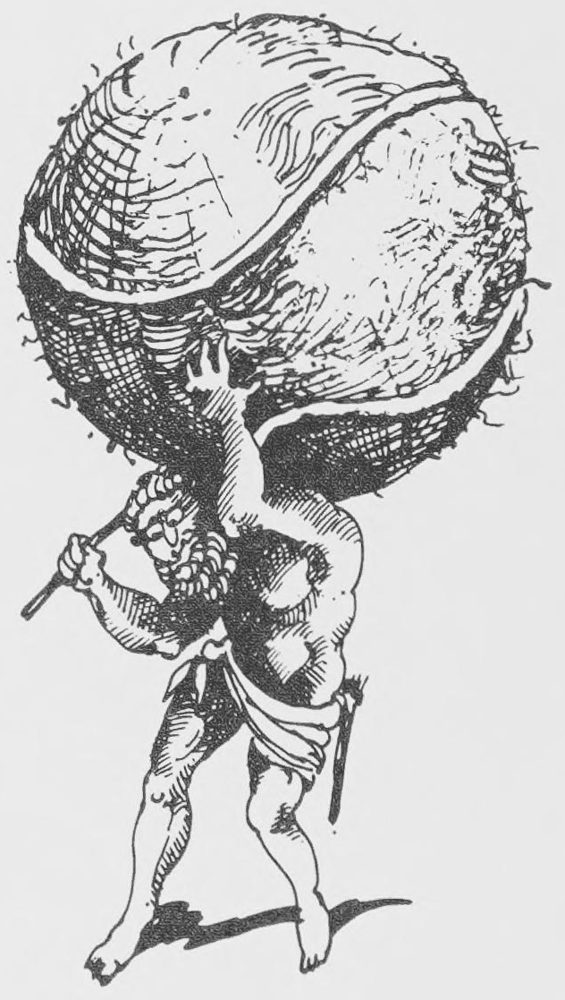
Quả bóng tennis có chân đang nhảy múa — hình vẽ mở đầu chương.
Quần vợt không chỉ là một trò chơi được chơi bằng vợt và một quả bóng mờ trên một sân được xác định chính xác. Đó là một môn thể thao có thể cải thiện chất lượng cuộc sống của bạn! Khi làm theo những gợi ý được đưa ra trên những trang này, bạn sẽ thấy mình xử lý các hoạt động hàng ngày từng khoảnh khắc với sự tự tin, sức bền, nhận thức và niềm vui hơn. Và trên sân tennis—bạn sẽ như nổ tung! Đừng để ý tưởng này làm bạn thất vọng vì bạn không thể tưởng tượng nó phù hợp với mình. Dù trình độ của bạn bây giờ là gì, bạn có thể bắt đầu tra cứu. Mục đích của tôi là đề cập đến toàn bộ phạm vi hoạt động quần vợt, bao gồm những người chơi từ hạng nghiệp dư đến chuyên nghiệp hàng đầu.
Khi tôi thảo luận về các cách để bạn cải tiến các kỹ thuật và chiến lược khác nhau để giành chiến thắng trong môn quần vợt, tôi đã lồng ghép các yếu tố sinh học, tâm lý học và động lực học được chọn lọc vào văn bản. Bây giờ, ý tưởng này nghe có vẻ lạ lùng nhưng bạn sẽ thấy những đề xuất này là công cụ vô giá giúp bạn trở thành người chơi mà bạn muốn trở thành—cho dù bạn chơi để giải trí, thử thách cạnh tranh hay để giao lưu. Các kỹ thuật của tôi không hẳn là truyền thống, nhưng sau mười lăm năm dạy chúng, tôi biết chúng có tác dụng ở những nơi mà các phương pháp khác kém hiệu quả và hiệu quả hơn.
Mục đích của cuốn sách này là giúp bạn trở thành một người chơi hoàn toàn “TẬP TRUNG”. Cách tiếp cận này coi quần vợt là tổng của bốn yếu tố hoặc trò chơi có liên quan với nhau.
Trò chơi 1) Trò chơi cảm xúc nội tâm (những cảm giác như áp lực, phấn khích hoặc bình tĩnh mà bạn có thể mang đến sân)
Trò chơi 2) Trò chơi xã hội (tác động của thái độ và sự tự nhận thức của bạn hoặc cách bạn tiếp xúc với người khác)
Trận 3) Trò chơi trí tuệ (quần vợt là cái gì, khi nào và như thế nào—bao gồm các kỹ thuật chơi quần vợt được áp dụng, tạo cú đánh và chiến lược) và
Trò chơi 4) Trò chơi thể chất (các chuyển động cơ thể liên quan đến sự linh hoạt, linh hoạt và sức bền)
Trước đây, người ta chú trọng đến việc giành chiến thắng trong trò chơi thể lực ( Ván 4) với trọng tâm là các cú đánh. Các trò chơi khác dự kiến sẽ vào đúng vị trí hoặc được phát triển thông qua trải nghiệm, thử nghiệm và sai sót. Những năm tháng làm vận động viên quần vợt chuyên nghiệp đã cho tôi thấy sự thờ ơ vô hại như vậy có thể hạn chế và không thỏa đáng đến mức nào!
Mối quan tâm của tôi khi viết cuốn sách này là giúp bạn phát huy hết tiềm năng và phát huy tối đa các kỹ năng của mình bằng cách tích hợp tất cả các phần của trò chơi để tạo nên một tổng thể. Cách tiếp cận này hướng đến việc thống nhất tất cả các yếu tố thành một trọng tâm duy nhất. Do đó có tên: TRUNG TÂM Quần Vợt.
Định tâm quần vợt bao gồm sự kết hợp giữa tâm trí của bạn (với tư cách là người hướng dẫn nội bộ) và cơ thể của bạn (với tư cách là người biểu diễn tinh vi) để tạo ra phong cách chiến thắng nhất quán. Người chơi tập trung sẽ chiến thắng trong trò chơi cảm xúc nội tại thông qua việc sở hữu một hình ảnh tích cực về bản thân và kiểm soát được sự căng thẳng hoặc kích động. Người chơi tập trung sẽ giành chiến thắng trong trò chơi xã hội nhờ nhận thức được tác động của mình đối với những người khác trong tình huống trò chơi. Nhận thức này cho phép anh ta thể hiện hành vi hiệu quả nhất cho trận đấu được đề cập. Trò chơi trí tuệ sẽ giành chiến thắng nhờ biết khi nào nên kết hợp chiến lược trò chơi phù hợp và cách chọn cú đánh phù hợp cho đúng tình huống. Trò chơi thể chất giành chiến thắng bằng cách phát triển tính linh hoạt, tính linh hoạt của cột sống, sức bền hiếu khí và kỵ khí. Khi bạn trở thành một người chơi hoàn toàn tập trung, bạn sẽ hòa hợp với chính mình và môi trường của mình, đồng thời bạn sẽ có thể kết hợp hiệu suất tổng thể thay vì hiệu suất từng phần hoặc từng phần.
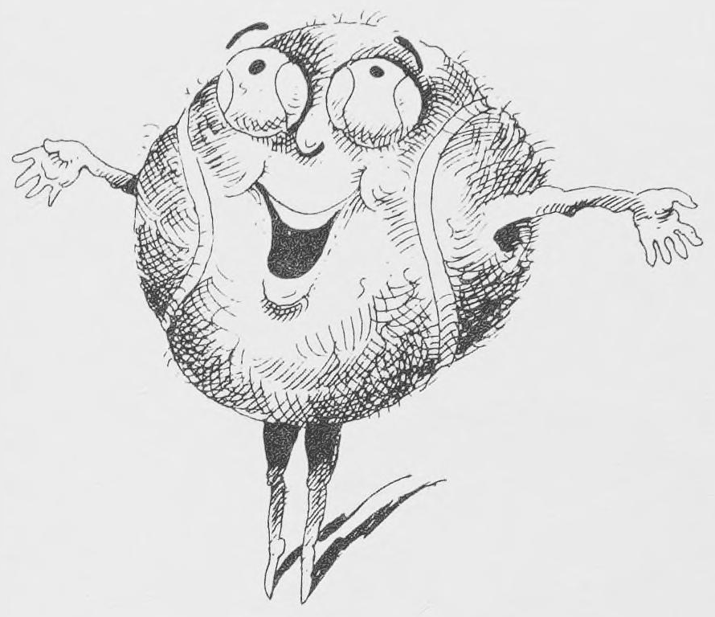
Hai người chơi cùng bật nhảy, minh họa tinh thần đồng đội và nhịp điệu.
Lợi ích của việc hiểu và tích hợp bốn trò chơi quần vợt tập trung là mang tính lâu dài và sâu rộng. Nó vượt xa một con số cụ thể để tạo ra bầu không khí cho một năng lực tuyệt vời. Khi bạn trở thành người chơi tập trung, bạn sẽ hoạt động ở một cấp độ mới—vượt xa sự mong đợi của bạn. Màn trình diễn của bạn sẽ giới thiệu cho bạn ''những trải nghiệm đỉnh cao''' (một thuật ngữ do nhà tâm lý học nhân văn nổi tiếng Abraham Maslow đặt ra). Tôi đã dành các chương sau để nói về vấn đề "vượt quá giới hạn của sự mong đợi".' Sẽ không có gì bí mật khi bạn đạt đến điểm này. Bạn sẽ nhận thấy một số hoặc tất cả những trải nghiệm sau:
Nâng cao cảm giác nhận thức, sự nhạy bén trong suy nghĩ và sự nhạy bén của thị giác
Sự rõ ràng phi thường, khả năng nhận biết mọi kích thích xung quanh bạn
Kiểm soát phi thường các chuyển động của cơ thể, khả năng kiểm soát sự phối hợp cơ bắp và thậm chí cả cơn đau
Tăng thời gian phản ứng, khả năng di chuyển nhanh hơn bình thường
Nhận thức, khả năng dự đoán chuyển động của đối thủ, khả năng dự đoán đường bay của quả bóng
Giao tiếp giữa tâm trí bằng các phương tiện khác ngoài các kênh giác quan thông thường
Trạng thái thư giãn hoàn toàn, trải nghiệm 'nhận thức yên tĩnh'
Cảm giác nhẹ nhàng, không trọng lượng, di chuyển nhanh chóng trên sân mà không bị hạn chế
Cảm giác hoàn thiện, hòa làm một với toàn bộ môi trường xung quanh
Cảm giác vui vẻ, hạnh phúc và an lạc
Tất cả điều này nghe có vẻ tuyệt vời phải không! Đúng vậy, nhưng nó dễ diễn đạt bằng lời hơn là đạt được. Chắc chắn bạn đã nhận ra một số trở ngại.
Hình ảnh bản thân thấp, cảm giác rằng chúng ta kém hơn những gì chúng ta nên có, rằng chúng ta không đáp ứng được kỳ vọng của xã hội
Tự hạ thấp bản thân—những tuyên bố phản tác dụng, tự đánh bại bản thân (ví dụ: “Sao mày có thể trượt cú đánh đó, đồ ngốc!”’ hoặc “Tôi biết mình sẽ thua.”
Độ bền thấp—không thể chơi trong thời gian dài, mệt mỏi, mệt mỏi cơ bắp
Sự thiếu hụt tính linh hoạt và linh hoạt—không có khả năng di chuyển duyên dáng và căng ra để tiếp cận các cú đánh
Những mô hình chuyển động cơ thể cố định sâu sắc – thói quen thể chất
Chủ nghĩa phán xét—sự đánh giá liên tục về hình ảnh bản thân hoặc giá trị của chúng ta
Phân tích liên tục về phong cách chơi, chuyển động và khả năng
Lo lắng—sự khó chịu hoặc lo lắng về hiệu quả công việc của chúng ta
Những hạn chế về sự tập trung—không có khả năng duy trì ở đây và bây giờ trong mỗi thời điểm
Vượt qua những trở ngại này thực sự là một cuộc phiêu lưu tuyệt vời. Nhưng đừng chỉ tin lời tôi. Lời nói không thể thay thế cho trải nghiệm thực tế. Cuốn sách này chỉ có thể đưa bạn đến nơi bạn muốn nếu bạn sử dụng nó như một hướng dẫn.
Đọc từng chương một và tiếp thu thông tin. Sau đó thực hành các hoạt động và bài tập cho đến khi chúng trở thành một phần tự nhiên trong phong cách của bạn. Kiên trì! Việc thành thạo những kỹ năng này cần cả thời gian và công sức; tuy nhiên, nếu bạn yêu thích quần vợt hoặc chỉ muốn tham gia một cách có ý nghĩa hơn thì công sức bỏ ra là rất xứng đáng.
Chương 1
Đi Đến Đích Là Một “Công Việc Nội Tâm”
Getting There Is an "Inside Job"
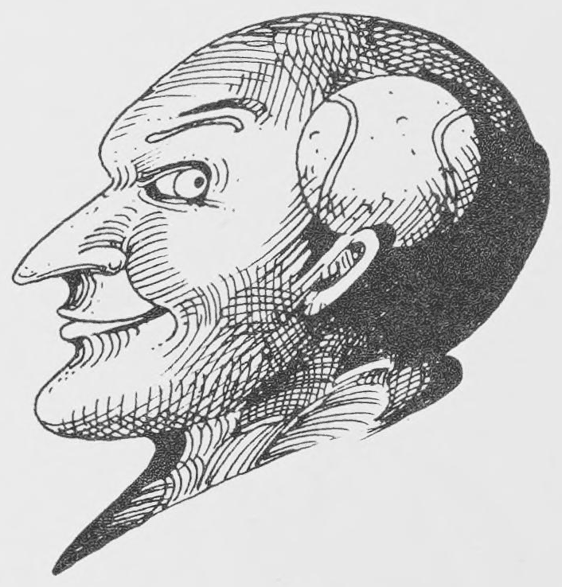
Một khuôn mặt nghiêng được vẽ trong lòng quả bóng — “công việc nội tâm”.
Như bạn đã lưu ý trong phần Giới thiệu, ba trong số các trò chơi tạo nên quần vợt là trò chơi trí tuệ. Chỉ có một là vật chất. Không phải “đầu trứng” đảm bảo chiến thắng. Nhưng chỉ sở hữu sức mạnh thuần túy và sức chịu đựng thôi cũng chưa đủ. Vấn đề của tâm trí là rất quan trọng nếu bạn muốn kết nối với nhịp điệu chiến thắng. Trên thực tế, việc khám phá tiềm năng của tâm trí có thể là biên giới mới nhất của chúng ta. Các nghiên cứu tiên phong đang được thực hiện khi tôi viết bài này. Một số khía cạnh của vấn đề tinh thần mà tôi sẽ đề cập trong cuốn sách này vẫn chưa được chứng minh là học thuyết khoa học tuyệt đối; tuy nhiên, tôi đã chứng minh chúng nhiều lần trong những năm chơi và huấn luyện quần vợt.
Những quan điểm mới về mối quan hệ giữa tâm trí và cơ thể
Một nhà điều hành trẻ đầy nhiệt huyết đã giúp tôi cụ thể hóa các khái niệm được trình bày trong chương này. Chắc chắn đó không phải là cố ý, nhưng khi anh ấy nghiêm túc thực hiện một buổi thực hành tại một trong những phòng khám của tôi, anh ấy đã đưa ra một bình luận đã nói lên tất cả. "Tôi không thấy vui chút nào với trò chơi này. Tôi đang có ý định không cố gắng quá!"' Câu nói sáo rỗng đó chạy qua tôi như một dòng điện. Tôi đã bắt đầu viết và đang cố gắng nghĩ cách kết hợp nghiên cứu đang được thực hiện trên hai bán cầu não vào trải nghiệm của tôi với quần vợt. Quả thực, người bạn trẻ của tôi quả thực có một nửa bộ não có thể cứu anh ấy khỏi sự “cố gắng” mãnh liệt của anh ấy - và ý tôi là theo nghĩa đen nhất! Tất cả những gì anh ấy phải làm là khai thác nó và mở ra một con đường dẫn đến lối chơi liên tục tốt hơn và bổ ích hơn. Hãy để tôi giải thích.
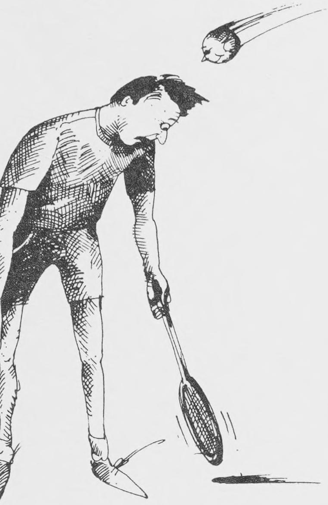
Người chơi vươn người hết cỡ để đón bóng.
Hai bán cầu não
Gần đây, đã có rất nhiều nghiên cứu khoa học và tâm lý khám phá chức năng của hai bán cầu não. Bán cầu não trái thường là bên chiếm ưu thế và chủ yếu điều khiển phần bên phải của cơ thể (thuận tay phải chiếm ưu thế so với thuận tay trái). Như bạn có thể đoán, bán cầu não phải chịu trách nhiệm chính về phía bên trái của cơ thể.
Điều khiến chúng tôi đặc biệt quan tâm ở đây là các loại quá trình tâm thần khác nhau được giao phó cho mỗi bán cầu. Các nghiên cứu chỉ ra rằng bán cầu não trái chiếm ưu thế về ngôn ngữ. Nó chủ yếu đề cập đến lời nói và các kiểu suy nghĩ phức tạp, hợp lý. Nó học thông qua lời nói. Mặt khác, bán cầu não phải thường xử lý trực giác. Nó nói bằng ngôn ngữ của xúc giác và hình ảnh, học hỏi dưới dạng tổng thể và cảm giác, đồng thời chịu trách nhiệm về sự sáng tạo không gian.
Trước đây, các giáo viên và huấn luyện viên quần vợt có xu hướng dạy riêng cho bán cầu não trái. Từ ngữ là công cụ chính giúp học sinh nắm vững cả cách tạo nét và cảm xúc. Tuy nhiên, quần vợt là một trò chơi phản xạ nhanh. Cầu thủ nào có thể nhớ được những chỉ dẫn chính xác từ huấn luyện viên của mình khi đối mặt với một cú đập trái tay? ‘‘Bây giờ hãy xem nào. Vợt của tôi lẽ ra phải ở đây và cơ thể của tôi ở đây.'"'Rõ ràng, quả bóng sẽ bay vút qua trước khi có thể nghĩ ra từ đầu tiên! Bạn có thể tưởng tượng được sự thất vọng của người nghiệp dư và cảm giác tỏ ra ngu ngốc vì cú đánh trượt không? Có lẽ, chính bạn đã từng ở đó. Một quá trình hoàn toàn khác diễn ra khi huấn luyện viên dạy thông qua hình ảnh não phải và khám phá các khía cạnh cảm xúc của trận đấu. Người chơi tập trung bình tĩnh tạo ra một cú đánh hoàn hảo thông qua việc nhanh chóng tìm ra một hình ảnh thích hợp. Sau đó, bởi vì anh ta đã phát triển một nhận thức thoải mái, anh ấy ngay lập tức sẵn sàng cho quả bóng quay trở lại.
Khám phá của tôi
Lần đầu tiên tôi nhận thức được hiệu quả của não phải và trải nghiệm đỉnh cao nhất quán khi chơi nhạc vào những năm 60. Trong khi chơi bass, đôi khi tôi đánh những nốt hoặc chơi những đoạn bass mang lại cho tôi cảm giác vui sướng mãnh liệt. Dường như tôi có thể nhìn thấy màu sắc của các nốt nhạc và bình thản trôi theo những rung động. Tôi sẽ hòa nhập với những nốt nhạc do các nhạc sĩ khác chơi. Thật thú vị khi tôi và các nhạc sĩ khác có thể chơi hàng nghìn nốt nhạc và hòa âm chúng mà không mắc lỗi.
Sau này tôi mới nhận ra rằng hiện tượng hoàn hảo như vậy là do não phải. Tôi quan sát thấy các nhạc sĩ không xem nhạc cụ của họ và họ cũng không thường xuyên nghĩ về các nốt nhạc.
Hãy tự mình quan sát các nhạc sĩ, và bạn sẽ thấy họ “‘cảm nhận”’ các nốt nhạc thường nhắm mắt lại thay vì “nghĩ” các nốt nhạc. Nếu tôi nghĩ về từng nốt nhạc (não trái suy nghĩ hợp lý), tôi đã không thể chơi “mất trí”, có thể nói như vậy.
Đánh bóng tennis với bất kỳ sự nhất quán nào cũng giống như chơi một nhạc cụ hoặc cố gắng khiêu vũ. Bạn càng cố gắng và càng cố gắng phân tích các hiện tượng thì bạn càng làm tệ hơn. Bạn trở nên bị ức chế bởi những hướng dẫn bằng lời nói của chính bạn. Nếu bạn cảm thấy những gì mình phải làm, tách rời khỏi những mệnh lệnh bằng lời nói liên tục, bạn sẽ không chỉ loại bỏ được những cảm xúc tiêu cực mà còn thấy rằng mình đang chơi một màn trình diễn đỉnh cao. Chuyển động của bạn sẽ trôi chảy thay vì dừng lại và bạn sẽ cảm nhận được sự đồng nhất giữa trò chơi và môi trường.
Khai thác tiềm năng của bạn và sau đó là một số
Tất cả chúng ta đều có tiềm năng đạt được những trạng thái mà chúng ta luôn thực hiện vượt quá sự mong đợi của mình. Chắc chắn bạn sẽ đồng ý rằng đó là một trạng thái khá công bằng! Kinh nghiệm chơi quần vợt của bạn có thể đã dạy bạn rằng khi việc hướng dẫn và chơi chỉ liên quan đến quá trình phân tích của não trái, một số trở ngại nhất định sẽ hình thành và bạn thậm chí có thể không chơi hết khả năng của mình.
Những học sinh cố gắng học từ những giáo viên ra lệnh bằng lời nói thường phải chịu đựng sự lo lắng và thậm chí tức giận. Ít nhất, việc cố gắng phân tích số lượng lớn các lệnh từ trong một môn thể thao đòi hỏi phản xạ nhanh có thể gây khó chịu.
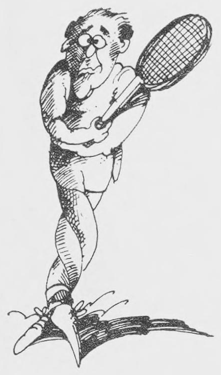
Người chơi trong tư thế sẵn sàng với cây vợt trên tay.
Thành tích kém hoặc không nhất quán của người học càng kích thích suy nghĩ lý trí ức chế hơn nữa: “Tại sao tôi không thể lấy lại cây vợt của mình?” “‘Bây giờ hãy xem, tôi quay và bước hay bước và xoay?”
Hiệu suất kém hoặc trì trệ sẽ bắt đầu một chuỗi các sự kiện trong "ống nghiệm" tức là cơ thể của bạn. Bạn đã bao giờ để ý đến mối quan hệ giữa các trạng thái thể chất nhất định với sự tức giận hoặc thất vọng chưa? Dạ dày của bạn thắt lại, bàn tay bạn lạnh buốt, tim bạn đập nhanh trong tai. Những hiện tượng này và những hiện tượng tương tự là do sự giải phóng các hóa chất như một phản ứng trực tiếp đối với cảm xúc chính hoặc cảm giác kích động của bạn.
Việc bán cầu não phải bị loại trừ là một rào cản hạn chế việc học tập ở một bên não, do đó hạn chế cơ hội vui chơi ở mức hoặc gần mức tiềm năng. Vì đến được đó là công việc nội bộ, nên đừng “an toàn một nửa!” Bằng cách sử dụng cả hai bán cầu não theo cách tôi đề xuất, bạn sẽ khai thác được những lĩnh vực tiềm năng rộng lớn hơn của mình và chuyển sang các lĩnh vực mới về tinh thần và thể chất! năng lực.
Hãy xem xét một bài học truyền thống một cách chi tiết. Dưới đây chúng ta thấy quá trình học tập chung của một cú đánh thuận tay:
"Được rồi, Tom. Đầu tiên tôi muốn bạn xoay và đưa vợt qua lại. Đúng vậy! Bây giờ tôi muốn bạn bước bằng chân trái, chỉ về phía quả bóng và vung vợt ngang tầm mắt. Đúng vậy. Xoay. Bây giờ vợt lùi lại và hạ xuống. Tốt. Bước và đánh ngang tầm mắt. Xoay lại. Bây giờ vợt lùi và xuống. Bước. Không, Tom. Bạn phải hạ vợt xuống. Bây giờ bước. Không, Tom. Bạn phải bước bằng chân trái. Now hit. Good, Tom. But I want you to finish at your eyes. O.K., Tom, racquet back, down, step. Tom did you point to the ball with your left hand? Now step and hit. Good, Tom. But you didn’t turn all the way. Now Tom, you have to watch the ball. Turn, racquet back and down, step, hit. Tom, you’re not watching the ball. Good; Tom. You watched the ball but you forgot to get your racquet down. Now work một mình trong một phút.”
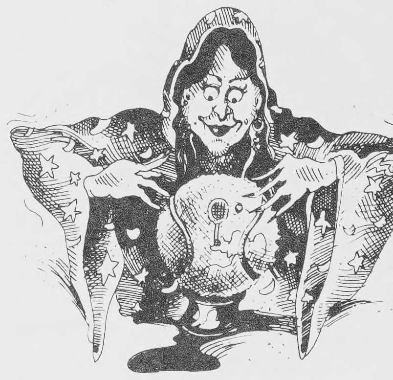
Người chơi nâng quả bóng lên cao bằng cả hai tay.
"Bây giờ, Tom, tôi muốn anh đi dọc biên bằng động tác thuận tay. Hãy thực hiện một cú vô lê, không phải một cú đánh đầu. Tốt, Tom. Bây giờ hãy nghĩ xem anh phải làm gì."'
Hãy xem bây giờ, tôi xoay người, đưa vợt tới lui, đánh, di chuyển, đánh cú vô lê. Chết tiệt, tôi đã trượt. Được rồi, quay lại. Để xem, tôi nên bước xuống chân nào?—(suy nghĩ phức tạp não trái). Xoay, đánh. Tôi quên lấy lại cây vợt của mình. Xoay, bước, đánh, vào lưới. Tôi đã trượt. Tôi chưa bao giờ có thể đánh trúng—(hình ảnh bản thân thấp kém được củng cố bởi những ký ức trong quá khứ). Được rồi, quay, bước, vợt lại. Chết tiệt, tôi lại đi nữa. Tôi cá là trông tôi thật ngu ngốc—(hình ảnh tự chụp thấp, cơ bắp căng cứng, tay trở nên nhớp nháp). Tôi luôn trông ngu ngốc trong thể thao. Xoay. Chết tiệt, bây giờ tôi thậm chí không thể bước được. Chết tiệt, chết tiệt, chết tiệt. Xoay, đánh, xoay, bước, vợt lại. Tôi lại thổi nó lần nữa. Chết tiệt!—(huyết áp tăng, tim đập mạnh). Xoay, đánh, xoay, bước, vợt lùi lại, chết tiệt, chết tiệt. Ôi trời, trông tôi thật ngu ngốc—(hình ảnh tự sướng chìm xuống một mức thấp mới). Xoay, bước, vợt lùi lại, chết tiệt—(huyết áp tăng cao, lo lắng tăng lên). Tôi không thể làm điều đó. Tôi bỏ cuộc. Xoay, vợt lại, đánh. Tôi quên bước. Xoay, đánh. Tôi quên lấy lưới. Xoay. Chết tiệt, bây giờ tôi thậm chí còn không thể đánh bóng được.''—(sự mệt mỏi và lo lắng bao trùm). “Tôi ghét quần vợt, tôi ghét cây vợt này. Tôi ghét chuyên gia của tôi. Tôi ghét bản thân mình.”
Tại sao lại uống một ly cocktail tự phê bình, tức giận, căng thẳng và căng thẳng khi bạn đang tìm kiếm thứ gì đó bổ dưỡng và thú vị hơn. Loại '''cocktail'' này có thể ăn mòn bên trong bạn theo đúng nghĩa đen. Rõ ràng, thói quen như vậy sẽ phản tác dụng và như chúng tôi đã nói, có một giải pháp thay thế tốt hơn.
Các chương tiếp theo sẽ khám phá giải pháp thay thế này. Họ sẽ hướng dẫn bạn vượt qua mọi rào cản để có được phong cách chiến thắng thông qua các kỹ thuật thu hút bán cầu não phải của bạn. Nhiều nghệ thuật thiền định phương Đông và các nguyên tắc thể chất sẽ được thảo luận từ các tư thế yoga đến kỹ thuật thở Zen. Chúng được thiết kế để giúp bạn đạt được cảm giác bình tĩnh, thư giãn, tập trung cao độ và sáng suốt.
Mục tiêu cuối cùng ở đây là làm chủ cơ thể của bạn bằng quần vợt làm phương tiện. Trải nghiệm quần vợt có thể nâng bạn lên những “đỉnh cao” mới về cảm xúc và thể chất. Bạn sẽ sớm rời bỏ mọi cảm giác thất vọng, sợ hãi, lo lắng và hung hăng với bộ trang phục dạo phố của mình! Ai cần chúng?
Chương 2
Rèn Luyện Sức Bền và Biên Đạo Chuyển Động
Cultivating Endurance and Choreographing Movement
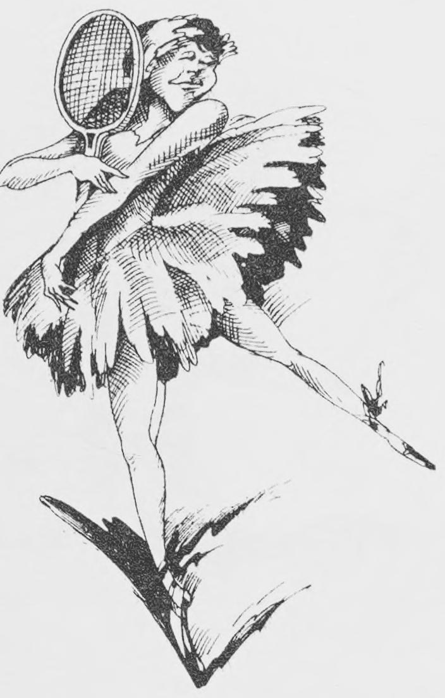
Vũ công kiễng chân — ẩn dụ cho sự thăng bằng và duyên dáng.
Bởi vì quần vợt là một môn thể thao mạnh mẽ nên bạn không thể đạt đến đỉnh cao nếu chỉ tập luyện cơ giữa hai tai. Tâm trí làm chủ đó của bạn phải được đặt trong một cơ thể được điều hòa tốt và phản ứng nhanh.
Tôi thường ngạc nhiên về cách các tay vợt trong câu lạc bộ có thể thắng hai set đầu tiên với tỷ số 6-0, 6-1 và thua set thứ ba và thứ tư với tỷ số 6-0, 6-0, do thiếu oxy và thiếu sức bền cơ bắp. Tôi cũng ngạc nhiên khi các cầu thủ câu lạc bộ vẫn ở trong một khu vực của sân lầm bầm, "Tôi không thể," khi quả bóng bay cách vị trí sân của họ 4 feet. Tôi cảm thấy buồn khi chứng kiến các cầu thủ di chuyển lúng túng về việc sân tấn công họ mạnh hơn quả bóng thông qua việc tự phê bình và ký ức về những thất bại trong thể thao trong quá khứ. Hơn nữa, tôi liên tục ngạc nhiên về sự thiếu chuẩn bị cơ thể mà tôi thấy ở cấp câu lạc bộ và thậm chí ở cấp độ giải đấu chuyên nghiệp. Một cầu thủ điển hình sẽ thực hiện một vài động tác gập đầu gối sâu, đánh ba mươi quả bóng, và nói với sự háo hức ngây thơ, “Muốn chơi một hiệp không?” Những người chơi này cũng thường xuyên bị bong gân mắt cá chân, trẹo đầu gối, rách sụn và khuỷu tay quần vợt.
Cuộc phiêu lưu quần vợt liên quan đến việc phát huy năng lực của cơ thể cũng như tâm trí của bạn. Hầu hết chúng ta sống trong một thế giới khá ít vận động, phải di chuyển từ nơi này sang nơi khác bằng ô tô; vì vậy, để có bức tranh tổng thể về thể chất và sức khỏe của chúng ta, các yêu cầu để giành chiến thắng trong Trò chơi quần vợt 4, Trò chơi thể chất, rất đáng để bạn nắm vững.
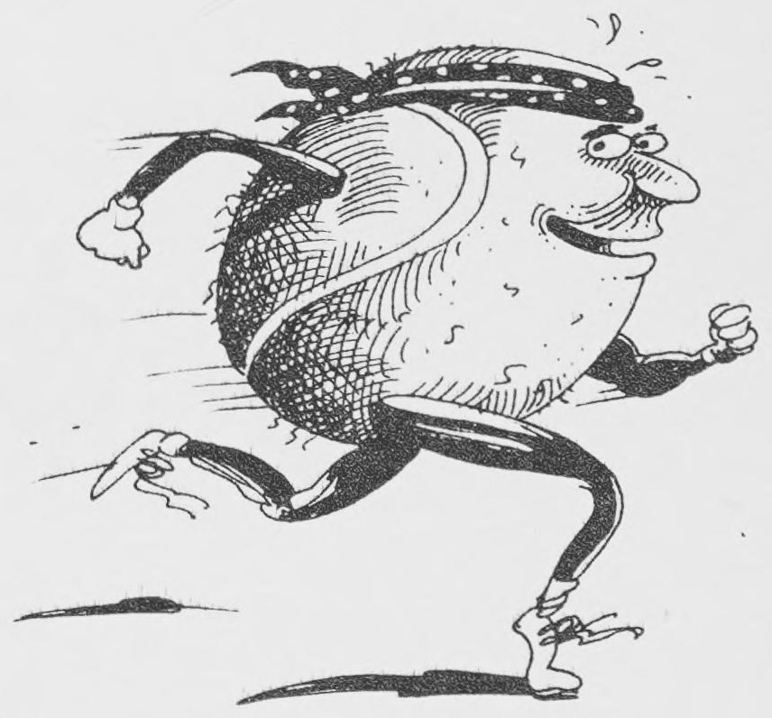
Quả bóng biết đi đang sải bước trên sân.
Hãy để tâm trí của bạn một lúc và tập trung vào thể chất của bạn.
Trong quần vợt, ba yếu tố tạo nên trò chơi thể chất.
1) Độ bền—Khả năng chơi trong thời gian dài mà không bị cạn kiệt cơ và oxy
2) Tính linh hoạt—Những chuyển động duyên dáng trên sân và những cách tiếp cận lưới mượt mà
3) Tính linh hoạt—Khả năng căng người để thực hiện những cú vô lê, đạt được những cú chạm đất khó và đánh cao khi giao bóng và những cú vô lê khó. (Tính linh hoạt sẽ được thảo luận sâu hơn trong Chương Ba)
CHẤP NHẬN THỬ THÁCH VỀ THỂ CHẤT
Chuẩn bị hiếu khí và kỵ khí cho sức bền
Để khắc phục chấn thương và bẫy kiệt sức “hiệp thứ ba 6-0, 6-0”, bạn phải tập luyện cả thể dục nhịp điệu và kỵ khí. Tập luyện aerobic giúp xây dựng sức mạnh cho hệ thống cơ bắp và tim mạch trong khi tập luyện kỵ khí giúp xây dựng khả năng sử dụng oxy của cơ thể. Cần nhấn mạnh điều hòa hiếu khí khi cơ bắp mệt mỏi trước khi hết oxy, và điều hòa yếm khí cần được nhấn mạnh khi độ sâu oxy cạn kiệt trước khi cơ bắp mệt mỏi.
Vì quần vợt là môn thể thao đòi hỏi cả sức mạnh cơ bắp và độ sâu oxy, nên việc tập luyện thích hợp sẽ kết hợp cả điều hòa hiếu khí và kỵ khí.
Khi bạn lần đầu tiên bắt đầu chương trình tập luyện của mình, hãy tập thể dục nhịp điệu làm nền tảng cho đến khi hệ thống cơ bắp của bạn có thể chịu đựng được những bài tập dài. Sau 5 đến 7 tuần, chuyển sang điều hòa kỵ khí. Đừng để yếu tố thời gian làm bạn thất vọng, vì chất lượng cuộc sống cũng như chất lượng môn quần vợt của bạn đang bị đe dọa.
Tập luyện thể dục nhịp điệu
Một trong những hình thức luyện tập aerobic tốt nhất là chạy bộ. Trừ khi gần đây bạn đã đeo bịt mắt ở hiệu sách, nếu không thì có lẽ bạn đã biết điều đó! Dù sao đi nữa, chạy bộ là một cách tuyệt vời để xây dựng hệ thống tim mạch và cơ bắp của bạn. Tuy nhiên, đừng mong đợi bắt đầu chạy marathon! Bắt đầu bằng một cuộc chạy ngắn với mục tiêu đạt được quãng đường mười phút. Nếu bạn đủ sức khỏe để chạy (hãy hỏi bác sĩ nếu bạn có bất kỳ thắc mắc nào), mục tiêu như vậy là khá hợp lý.
Khi chạy bộ, hãy chạy lỏng lẻo, tránh siết chặt nắm tay và hàm, đồng thời giữ cho cột sống được thư giãn. Chạy nhẹ nhàng với chuyển động lắc lư từ gót chân đến ngón chân. Nếu có thể, hãy chạy trên khu vực có cỏ thay vì mặt đường cứng để tránh bị sốc cột sống. Để biết thêm những lời khuyên ngắn gọn này, hãy xem bất kỳ tài liệu phổ biến nào về chủ đề này.
Vì mục đích chơi quần vợt của bạn, chạy bộ bốn ngày một tuần là khá đủ. Sau năm đến bảy tuần, bạn có thể bắt đầu chương trình kỵ khí của mình; nhưng, trước tiên bạn phải xây dựng một cơ sở cơ bắp.
Luyện tập yếm khí
Việc xây dựng độ sâu oxy cũng có thể đạt được tốt nhất thông qua việc tập thể dục chạy bộ. Tuy nhiên, bạn có thể cân nhắc việc bơi lội hoặc nhảy dây. Trong điều hòa yếm khí, bạn cũng có thể kết hợp chạy nước rút và/hoặc chạy lên cầu thang hoặc đồi vào chương trình của mình. Khoảng cách và/hoặc khoảng thời gian có thể được xác định tốt nhất bằng phán đoán cá nhân của bạn.
Kết hợp tất cả lại với nhau cho quần vợt
Sau bảy tuần hoặc lâu hơn, hãy kết hợp điều hòa hiếu khí và kỵ khí vào trò chơi quần vợt của bạn. Bắt đầu bằng cách chạy bộ nhẹ nhàng trong khoảng hai dãy nhà, sau đó chạy nước rút trong một dãy nhà. Sau khi bạn chạy bộ qua hai dãy nhà và chạy nước rút một dãy nhà, hãy đi bộ đến dãy nhà cuối cùng. Bằng cách này, bạn sẽ liên hệ việc rèn luyện sức bền của mình với tình huống thi đấu thực tế của động tác tiếp đất, tấn công lưới và bước trở lại khu vực giao bóng sau khi kết thúc điểm.
Sự trợ giúp của hình ảnh và cảm giác
Đợi một chút!” Tôi nghe bạn nói. ''Tất cả việc chạy và nhảy này nghe có vẻ vất vả. Không phải bạn nói rằng bạn có một phương pháp có thể cứu tôi khỏi sự thất vọng và đau đớn khi 'cố gắng' mãnh liệt như vậy sao? Còn 'công việc nội tâm' nơi tâm lý giúp đỡ thể chất thì sao? Liệu hình ảnh não phải có giúp ích gì cho tôi ở đây không?”
Bạn có thể đặt cược sọc chạy của bạn vào nó! Nhưng trước khi thực hiện, đây là một số hình ảnh để bạn thử nghiệm:
Ngay trước khi bạn bắt đầu rèn luyện sức bền và sự uyển chuyển hàng ngày, hãy nhắm mắt lại và tưởng tượng mình đang chạy một cách duyên dáng dọc theo con đường rừng. Bạn có thể thấy điều này xảy ra trong đầu mình một cách rõ ràng như thể bạn đang xem chính mình trên phim hoặc băng video. Thay đổi hình ảnh nếu bạn thích và chạy như một vận động viên Olympic. Tiếp theo, hãy tưởng tượng một con vật trong rừng. Hãy cho phép mình "'trở thành'' con vật đó và chạy như con vật đó. Bây giờ, hãy bắt đầu chạy và ghi nhớ hình ảnh bạn thích nhất. Bạn là hình ảnh đó và đang chạy dễ dàng và duyên dáng hơn bao giờ hết. Khi bạn mệt mỏi, hãy tưởng tượng một cơn gió nhẹ sau lưng thúc bạn đi. Hãy để nó đưa bạn về phía trước. Với sự giúp đỡ của gió, bạn không cần phải tiêu tốn quá nhiều năng lượng.
Trong ngày chạy thứ hai, hãy tưởng tượng rằng bạn đang ở trên mặt trăng. Thực hiện các bước giới hạn và chú ý cách bạn trải nghiệm cảm giác nhẹ nhàng. Khi bạn bắt đầu chạy bộ, hãy tập trung nhận thức vào bước chân của bạn. Hãy tưởng tượng rằng với mỗi bước bạn được đẩy đi giống như các phi hành gia mà không có lực hấp dẫn thông thường. Một kỹ thuật khác liên quan đến việc phối hợp hình ảnh với hơi thở của bạn. Hãy tưởng tượng bạn đang ở trên một bãi biển, chú ý đến sự lên xuống của sóng. Khi bạn thở ra, hãy hình dung những con sóng lăn ra biển. Khi bạn hít vào, hãy hình dung chúng đang bị kéo ngược lên bãi biển. Lên xuống và chảy xuống. Lên xuống và chảy xuống. Thở ra. Hít vào. Thở ra. Hít vào.
Bây giờ hãy xem xét một bài tập về cảm giác. Bắt đầu cuộc chạy bộ của bạn bằng cách đi bộ và tập trung nhận thức vào đôi chân của bạn. Thực hiện bốn bước trong một hơi thở và tập trung sự chú ý vào đôi chân khi chúng chạm đất. Sau vài phút, bắt đầu chạy bộ và kiểm tra cơ thể xem có căng thẳng không. Thư giãn vai và hàm của bạn. Hãy chắc chắn rằng lưỡi và miệng của bạn được thư giãn và trán của bạn mịn màng và không có nếp nhăn. Khi bạn chạy bộ một quãng đường, hãy kiểm tra cơ thể xem có bị đau không. Nếu bạn nhận thấy bất kỳ sự khó chịu cụ thể nào, hãy xác định chính xác nó và với mỗi lần thở ra, hãy tưởng tượng rằng bạn đang thở ra ngay khỏi cơ thể. Hãy lắng nghe cơ thể bạn và “‘cảm nhận’’ việc chạy là như thế nào. Tập trung vào năng lượng của bạn cũng như sự ấm áp và tỏa sáng ở tất cả các chi của bạn.
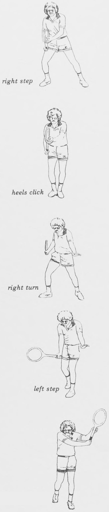
Năm tư thế của bài “vũ đạo” bước chân: bước phải, gót chạm nhau, xoay phải, bước trái…
Nhiều người chạy bộ nhận thấy rằng sau khi chạy được hai hoặc ba dặm, họ trải qua một cảm giác nhẹ nhàng sảng khoái - một cảm xúc và năng lượng "cao". Cứ như thể họ có thể chạy cả ngày. Trải nghiệm đỉnh cao này đã được mô tả đi mô tả lại nhiều lần. Nó có thể được nâng cao thông qua cảm xúc và hình ảnh trực quan.
Biên đạo chuyển động của bạn—Vũ điệu quần vợt
Nếu bạn xem quần vợt trên tivi, bạn sẽ nhận thấy rằng khi phát lại chuyển động chậm, các vận động viên chuyên nghiệp dường như đang khiêu vũ hơn là chơi một môn thể thao mạnh mẽ. Có một lý do đơn giản cho việc này. Quần vợt thực ra không gì khác hơn là một điệu nhảy—và, một điệu nhảy rất đơn giản. Tuy nhiên, các động tác rất quan trọng để chơi thành công, đến nỗi trong mỗi buổi hội thảo, tôi dành ít nhất hai giờ hoặc 1/4 thời gian để dạy chúng! Tôi bắt đầu cho học sinh thấy các cú đánh, nhưng tung bóng để trả lại những cú đánh cụ thể không phải là tên của trò chơi. Đó là lý do tại sao tôi rất quan tâm đến sức bền, tính linh hoạt và bây giờ là chuyển động.
Bạn có thể bao quát toàn bộ phần sân cơ bản theo ba bước, miễn là bạn đang đứng ở khu vực đường cơ sở. Vũ đạo đưa bạn từ tư thế sẵn sàng này sang tư thế sẵn sàng khác. Để thực hiện điệu nhảy ba bước cực kỳ quan trọng này, hãy bắt đầu ở tư thế sẵn sàng bằng cách quay mặt vào lưới và uốn cong đầu gối. Đối với cú công bóng thuận tay, di chuyển sang phải/bước, phải/rẽ, trái/bước—chuyển động trượt một-hai. Để thực hiện động tác này một cách chính xác, hãy xáo trộn (không nhấc) chân và nhấp gót chân—phải/bước (nhấp), phải/xoay (bàn chân xoay và gót chân nhấp) và bước bước trái về phía quả bóng. Ở bên trái tay, xáo trộn ba bước sẽ đưa bạn về phía bên trái của sân. Trượt sang trái (click), rẽ trái (chạm gót chân), bước phải. Trên thực tế, nếu bạn đang đứng ở giữa đường cuối sân, chỉ bằng một động tác xáo trộn này, bạn có thể đánh bất kỳ quả bóng nào trên sân.
Nếu không có kiến thức về điệu nhảy xáo trộn này, người chơi sẽ chạy để đánh bóng, nhưng sau khi va chạm sẽ mất thăng bằng và không sẵn sàng thực hiện động tác trả bóng trong tích tắc. Điều làm cho điệu nhảy trở nên hiệu quả là (1) lượt đưa vợt về sớm và (2) bạn kết thúc động tác theo sau
với mũi chân sau vẫn đặt trên mặt đất để có bước đi thăng bằng theo bất kỳ hướng nào. Chuyển động liên tục của điệu nhảy không chỉ giúp bạn tránh khỏi bẫy quán tính trên sân mà còn khiến bạn phải đánh bóng và dừng lại để xem nó có vào trong hay không. Nếu bạn dừng lại, cuối cùng bạn sẽ phải chạy để bù lại và tư thế sức mạnh của bạn bị mất. Bạn không bao giờ muốn đánh mất nhịp điệu hoặc động lực tự nhiên của mình. Tất cả những gì bạn phải làm là học chuyển động này và bạn có thể bắt đầu chơi như một nhà vô địch! Nếu phòng khách (hoặc bất kỳ) phòng nào của bạn đủ rộng, hãy tập nhảy thuận tay và trái tay ở đó. Bạn có thể chơi một điệu valse và chuyển sang nhịp ba nhịp. Đó là một bài tập tốt và rất thú vị, và trừ khi bạn đang ở trong môi trường hội thảo hoặc phòng khám, việc luyện tập theo âm nhạc sẽ khá thú vị. Nhưng, tôi không thể nhấn mạnh đủ được—dù bạn có luyện tập thế nào, HÃY THỰC HÀNH! Điệu nhảy mang lại cho bạn sự tự tin rằng bạn có thể tham gia bất kỳ quả bóng nào. Vì vậy, hãy thực hành nó với sự tự tin rằng nó sẽ giúp bạn thực hiện được bất kỳ cú đánh nào—điều đó hiệu quả hơn nhiều so với việc chạy theo bóng.
Thiết kế vũ đạo của riêng bạn—Đương nhiên, trong một số tình huống chơi nhất định, bạn có thể thấy cần phải thực hiện nhiều hơn hoặc ít hơn hai lần chuyển slide cơ bản mà tôi đã mô tả. Nhưng cho dù bạn thực hiện một hay bốn đường trượt, hãy luôn kết thúc chuyển động của mình với tư thế đặt chân sau. Sau đó bước ngang cơ thể đến cột lưới và kết thúc động tác với mũi chân sau tiếp đất. Cảm giác về vũ đạo của riêng bạn đi kèm với việc vui chơi và luyện tập.
Di chuyển về phía sau—Trong một số trường hợp, người chơi sẽ phải di chuyển về phía sau để thực hiện cú đánh tiếp đất từ thấp đến cao hiệu quả. Tôi luôn cảm thấy điều quan trọng là phải đánh bóng ở độ cao ngang thắt lưng từ thấp đến cao ngay cả khi điều đó có nghĩa là phải rút lui. Vì vậy, động tác lùi lại là một phần có giá trị trong tiết mục của bạn. Sự khác biệt duy nhất trong chuyển động lùi là bạn (1) xoay người với mặt quay vào lưới và (2) thay đổi góc chuyển động trượt của bạn theo hướng lùi. Khi bạn trượt về phía sau, nơi bóng nảy ngang eo, đặt chân sau lên, sau đó bước ngang cơ thể đến cột lưới, lốp bóng và hoàn thành động tác với ngón chân sau tiếp đất.
Trong cả chuyển động trượt ngang và chuyển động trượt lùi, chúng ta đang thực sự phát triển hiệu quả cảm giác về nhịp điệu vốn là yếu tố then chốt của môn quần vợt và là một trong những chức năng chính của việc học tập bằng não phải. Một hình ảnh hữu ích khác—
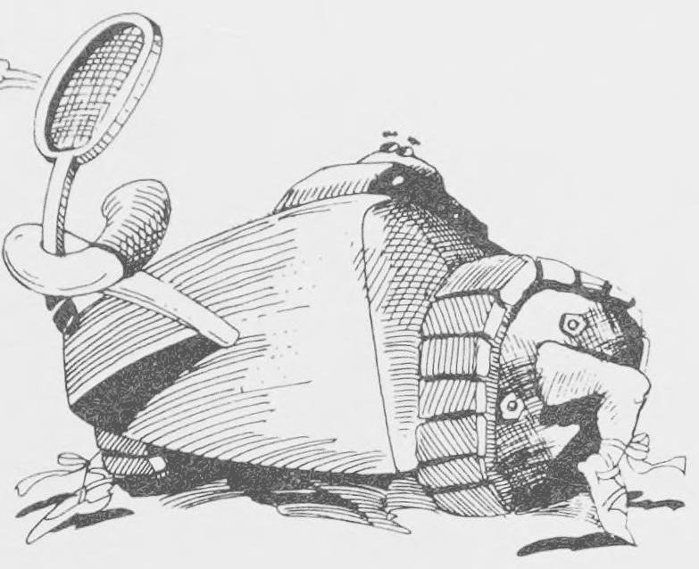
Hai người chơi đối diện nhau bên lưới.
Tiến tới mạng
Trong khi “điệu nhảy” quần vợt giúp cơ thể chuyển động nhịp nhàng, tôi thích sử dụng hình ảnh chiếc xe tăng để hoàn thiện hơn nữa tính linh hoạt và hình thức. Phải thừa nhận rằng một chiếc xe tăng là một hình ảnh kỳ lạ, nhưng hãy chấp nhận. Những cú đánh tiếp cận của bạn sẽ được hưởng lợi. Đầu tiên, khi bạn đánh một quả bóng ngắn từ giữa sân, hãy di chuyển theo hướng của quả bóng bằng chuyển động tiếp cận của bạn. Ở mức thấp khi di chuyển, bạn sẽ tăng thời gian phản ứng và tránh được sự lúng túng khi nâng và hạ cơ thể. Hãy tưởng tượng bạn là một chiếc xe tăng khi bạn di chuyển. Nằm thấp xuống đất. Hãy quyết tâm và giữ "cơ chế bắn" (vợt tennis) trước mặt để sẵn sàng hành động. Điệu nhảy ba bước rất "êm dịu", nhưng xe tăng là một chuyển động nhanh "không đùa giỡn" để đến bóng hiệu quả và nhanh chóng.
Làm dịu đi những lời bình luận gây nghi ngờ
Hãy từ bỏ thói quen phán xét và phân tích! Hãy cho bán cầu não trái của bạn được nghỉ ngơi. Nó không nên can thiệp vào những hình ảnh được tạo ra từ bán cầu não phải. Khi bạn chạy một quãng đường và "nhảy múa" trên sân, hãy cho bán cầu não trái của bạn một vật để tập trung. Ví dụ, khi bạn chạy bộ, hãy chọn một cái cây ở đằng xa hoặc tập trung vào gió. Nếu tâm trí bạn tiếp tục huyên thuyên với quá nhiều suy nghĩ bất an, hãy tập trung vào hơi thở. Nhịp thở vào và thở ra là một phần thường xuyên của bạn và do đó là điểm tập trung lý tưởng cho sự chú ý của bạn. Những gì bạn đang làm ở đây về cơ bản là giải trí cho bán cầu não trái của bạn, vì vậy nó sẽ quá bận rộn để phá hoại những nỗ lực tốt nhất của bạn bằng những nghi ngờ. Đây là điều xảy ra trong Tennis Centering. Không có chỗ cho những nhận xét như “Tôi không thể chơi mạnh mẽ như vậy”. Để đạt được hiệu suất cao nhất, bạn muốn cắt ngắn hình ảnh bản thân, “Tôi không thể!” Trước đây tôi chưa bao giờ làm thế!”' Rào cản. Khi tâm trí bạn đã tĩnh lặng, bạn có thể tập trung toàn bộ năng lượng của mình vào thời điểm hiện tại, nơi mà quá khứ không còn liên quan, và kể từ thời điểm này trở đi, mọi thứ đều có thể xảy ra.
Chuẩn bị thể chất và nhận thức
Những tuyên bố chưa đầy đủ sau đây liên quan đến việc chuẩn bị thể chất của bạn cho quần vợt. Bài tập này được thiết kế để giúp bạn nhận thức được về thể chất và sự chuẩn bị của mình cho các trận đấu quần vợt. Phần này được thiết kế đặc biệt dành cho những người muốn chơi quần vợt để rèn luyện sức khỏe hoặc để thi đấu.
Khi chuẩn bị chơi quần vợt, tôi thường dành vài phút để khởi động cơ thể trước khi ra sân.
Khi chuẩn bị chơi quần vợt, tôi thường dành vài phút khởi động trong động tác đánh.
Khi tôi chuẩn bị cơ thể cho môn quần vợt, tôi thường sử dụng kỹ thuật khởi động__————Cs—CS. Nếu tôi chạy bộ, tôi thường chạy
khoảng cách xa.
khoảng cách ngắn.
khoảng cách dài và ngắn.
Điều tôi muốn thay đổi nhất trong quá trình chuẩn bị thể chất của mình là
Tôi thường chuẩn bị tinh thần như thế nào cho BertC ale Làm thế nào để tôi chuẩn bị tinh thần cho quần vợt một cách bình thường?
Tôi sử dụng các bài tập tinh thần
Chương 3
Mở Rộng Chính Mình
Extending Yourself
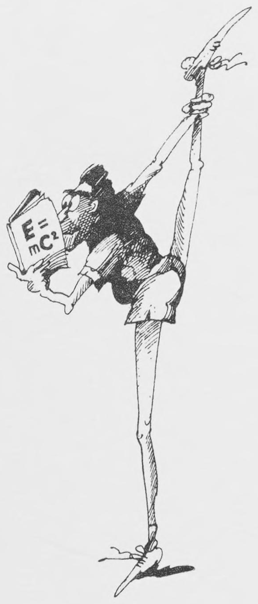
Người chơi duỗi người, minh họa bài tập kéo giãn.
Độ bền và tính trôi chảy là những thành phần chính của “Chiến thắng quần vợt”. Một yếu tố quan trọng khác là tính linh hoạt. Trong Định tâm quần vợt, điều này có nghĩa là có khả năng căng thẳng - cả về thể chất và tinh thần. Chương này có đầy đủ các bài tập nhằm giúp bạn làm được điều đó. Tôi đã chia nó thành hai phần mà bạn sẽ thấy có liên quan với nhau.
Phần I dành cho các bài tập khập khiễng được thiết kế để tăng cường sức mạnh cho cột sống của bạn và làm cho nó dẻo dai hơn để bạn có thể thực hiện những cú đánh khó. Phần II được thiết kế để tăng cường khả năng kiểm soát tâm trí của bạn để bạn có thể đạt tới những cấp độ nhận thức mới. Phần thưởng cho việc thành thạo các bài tập này là tăng tính linh hoạt và giảm căng thẳng và căng thẳng. Nhiều học sinh của tôi đã sử dụng chúng để loại bỏ sự cứng nhắc để lấy sự nhanh nhẹn và sự cứng nhắc về thể chất để nâng cao sự thích thú, trí tưởng tượng cũng như cảm giác “dòng chảy” mới về thể chất và cảm xúc.
PHẦN I - SỰ CĂNG BẰNG VẬT LÝ
Khả năng s-t-r-e-t-c-h là một trong những công cụ chơi tennis cơ bản. Nhiều năm quan sát các trận đấu chuyên nghiệp của tôi đã chứng minh điều này nhiều lần. Tôi đã lưu ý rằng một trong những điểm khác biệt chính giữa người chơi cấp độ B và người chơi cấp độ A là khả năng co giãn của người này để thực hiện những cú đánh khó. Độ căng thích hợp cho phép người chơi đạt được những cú đánh tinh tế như cú vô lê trái tay dọc biên, cú vô lê giữa sân, cộng với một cú giao bóng phức tạp đòi hỏi chiều cao. Để nâng cao trình độ chơi hiện tại của bạn và vượt qua giới hạn của bạn, sự linh hoạt của cột sống là điều bắt buộc. Và yoga, một trong những cách tốt nhất để đạt được điều đó, đã có lịch sử hàng nghìn năm! Yoga là một hình thức tập luyện thể chất bao gồm việc kiểm soát tâm trí và sự tập trung, đồng thời khiến người tập cảm thấy một cảm giác tràn đầy sức sống mới và "sự đồng nhất" với cơ thể mình. Tất cả các tấm bưu thiếp hình ảnh đều bị gạt sang một bên, mục đích của yoga không phải là khiến bạn bị trói buộc trong những nút thắt. Mục đích của nó là để "cởi trói cho bạn"—để giải phóng căng thẳng, làm săn chắc các cơ và khai thác những nguồn năng lượng bị dồn nén.
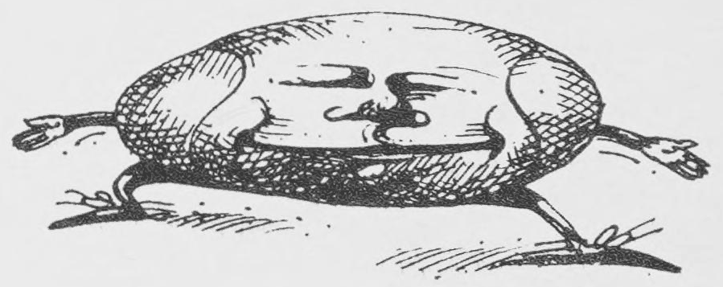
Khuôn mặt nằm ngửa trong quả bóng.
Nếu triển vọng luôn trẻ trung, nhanh nhẹn và mức độ tập trung ngày càng tăng hấp dẫn bạn, bạn sẽ có nhiều thứ hơn là quần vợt để thúc đẩy bạn ở đây. Nhiều học viên quần vợt của tôi đã kết hợp các bài tập sau vào thói quen hàng ngày của họ vì vô số lợi ích trong mọi khía cạnh của cuộc sống.
Các tư thế yoga mà tôi mô tả đã được lựa chọn cẩn thận trong số hàng trăm tư thế có thể thực hiện được. Tuy nhiên, một số ít này cung cấp một thói quen được tích hợp tốt sẽ giúp tăng thêm phạm vi tiếp cận cho các cú giao bóng, cú vô lê, cú chạm đất và cú đánh đầu của bạn. Họ sẽ cung cấp cho bạn những tính năng bổ sung nhỏ mà bạn cần để trở thành người chơi bậc thầy. Các bài tập tiếp theo sẽ giúp bạn học cách kiểm soát từng cơ và sẽ tạo điều kiện thuận lợi cho việc rèn luyện tính linh hoạt của bạn. Hơn nữa, việc luyện tập của họ sẽ giúp bạn nâng cao ngưỡng sức bền chịu ảnh hưởng bởi nhịp tim, mức tiêu thụ oxy và mức độ căng thẳng. Theo tôi thấy, yoga là công cụ hòa trộn của Định tâm Quần vợt. Nó phát triển bốn thành phần chính của trò chơi: sức bền, tính trôi chảy, tính linh hoạt và kiểm soát tâm trí. Vì giá trị của chúng trong mối quan hệ giữa tâm trí và cơ thể, tôi khuyên bạn nên sử dụng các tư thế hoặc tư thế giãn cơ trước mỗi lần chạm trán quần vợt.
Trước khi bạn bắt đầu
Khi bạn thực hành các tư thế sau, đừng cố gắng quá sức. Yoga là một trải nghiệm không mang tính cạnh tranh, một hệ thống rèn luyện thể chất không giống như việc luyện tập thể dục thể thao bằng mồ hôi và căng thẳng. giáo viên đã khắc sâu vào bạn. Luôn giãn cơ từ từ và để cơ thể “cho” bạn biết những giới hạn của nó. Điều chỉnh cơ bắp của bạn để đánh giá trung thực về bất kỳ lực cản hoặc căng thẳng nào. Hơi thở sâu, nhịp nhàng sẽ giúp bạn đạt được những tư thế khó hơn. Thở ra khi bạn đi xuống và hít vào khi bạn đi lên.
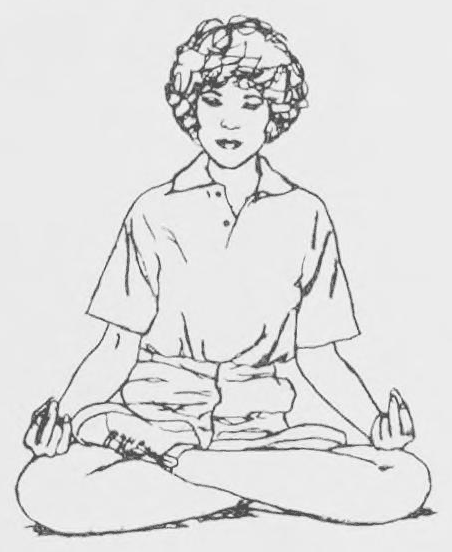
Người ngồi xếp bằng, hai tay đặt lên gối — tư thế thiền.
Tôi thực hiện các động tác yoga kéo dài này trước mỗi trận đấu quần vợt hoặc hai lần một ngày — một lần vào buổi sáng trước bữa sáng và một lần vào buổi tối trước bữa tối phù hợp với tôi nhất. Tất nhiên, tất cả chúng ta đều có lịch trình khác nhau; tuy nhiên, có một điều bắt buộc phải làm là tránh thực hành các tư thế khi bụng đầy hoặc bàng quang đầy. Điều đó thực sự sẽ “làm hạn chế phong cách của bạn”.
Tập trung—tinh thần và thể chất
Bắt đầu thói quen tập yoga của bạn bằng cách ngồi thoải mái trên sàn và tập trung sự chú ý vào hơi thở. Hít thở sâu bằng mũi, mở rộng phổi và căng bụng sau mỗi lần hít vào (cách thở thư giãn của trẻ sơ sinh) và co thắt bụng thật chặt sau mỗi lần thở ra hoàn toàn. Nhắm mắt lại và cảm nhận phần dưới, giữa và trên của phổi tràn đầy không khí khi bạn hít vào và sau đó trống rỗng, theo thứ tự ngược lại khi bạn thở ra. Đặt bàn tay của bạn, ngón tay chạm nhẹ vào bụng. Khi bạn thở, hãy chú ý cách các đầu ngón tay của bạn di chuyển ra xa nhau và lại gần nhau. Đây là một hơi thở yoga sâu. Tập trung vào nhịp điệu hít vào-thở ra của bạn và đếm năm mươi hơi thở – hai mươi lăm hơi thở vào, hai mươi lăm hơi thở ra. Giữ tâm trí tập trung vào hơi thở và khi những suy nghĩ ngẫu nhiên xâm nhập vào ý thức của bạn, hãy để chúng trôi sang một bên và tập trung lại vào kiểu thở của bạn. Đây thực sự là một loại thiền có thể vừa thư giãn vừa tiếp thêm năng lượng.
Bài tập khởi động—Tư thế nằm sấp
Tiếp theo, giả sử tư thế nằm. Nhắm mắt lại và đưa cả hai đầu gối qua phần giữa của bạn. Vòng tay quanh đầu gối và thư giãn. Hãy để tâm trí của bạn trôi nổi. Hãy để những suy nghĩ ngẫu nhiên trôi qua nhưng hãy cố gắng giữ chúng tích cực. Một cách tốt để đạt được sự kiểm soát tinh thần tích cực là hãy tưởng tượng rằng với mỗi lần hít vào, bạn đang mang năng lượng mới vào cơ thể và với mỗi lần thở ra, bạn đang thải bỏ mọi tạp chất và giải phóng mọi căng thẳng. Khi bạn cảm thấy thư giãn, hãy từ từ hạ chân xuống cho đến khi bạn lại nằm thẳng và duỗi thẳng. Bài tập thư giãn đơn giản này có hiệu quả vì nó tạo ra sự liên kết toàn bộ cấu trúc cột sống và cho phép máu lưu thông tự do mà không bị co thắt. Khi bạn hoàn thành nó, bạn có thể trải nghiệm một nguồn năng lượng bùng nổ.
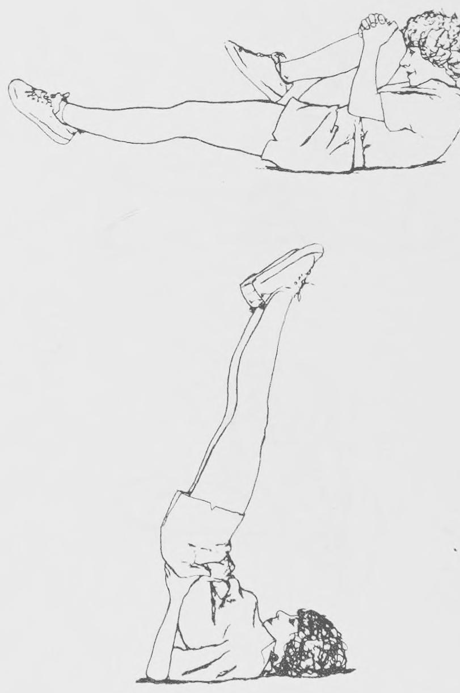
Tư thế duỗi chân trong bài tập giãn cơ.
Tiếp tục nằm ngửa và nhắm mắt. Từ từ nâng chân phải lên khỏi mặt đất 5 inch và di chuyển bàn chân theo chuyển động tròn, đầu tiên theo chiều kim đồng hồ và sau đó ngược chiều kim đồng hồ. Sau đó s-l-o-w-l-y đưa chân phải của bạn xuống sàn. Lặp lại quá trình tương tự với chân trái của bạn. Quy trình này là một liệu pháp tuyệt vời dành cho mắt cá chân dễ bị tổn thương và sẽ giúp củng cố chúng khỏi bong gân và trẹo trên sân tennis (hoặc bất kỳ nơi nào khác trong trường hợp đó).
Khi bạn cảm thấy đã nghỉ ngơi, hãy nhấc cả hai chân và phần thân trên lên cách mặt đất 3 inch. Giữ vị trí này trong vài giây. Sau đó nâng đầu và chân lên cách mặt đất 6 inch. Bây giờ nâng chân và thân lên đến mức căng thẳng. Từ từ quay trở lại 6 inch, rồi 3 inch và cuối cùng về vị trí nghỉ ngơi. Hít thở sâu, hít vào hoàn toàn bằng mũi và sau đó tống hết không khí hôi thối ra ngoài bằng hơi thở “làm sạch” qua miệng. Thư giãn một hoặc hai phút và chuyển sang bài tập tiếp theo.
Từ từ đưa chân phải lên ngực và khóa tay quanh đầu gối. Tạm dừng và sau đó đưa trán lên đầu gối, để chân trái nhấc lên khỏi mặt đất 3 inch. Giữ vị trí này miễn là bạn có thể thoải mái. Sau đó, từ từ hạ đầu và chân trái xuống. Bây giờ hạ chân phải xuống sàn. Lặp lại quá trình này với chân trái của bạn, để chân phải nhấc lên khỏi mặt đất 3 inch. Sau khi hoàn thành bài tập này, hãy thở ra và thư giãn. Bài tập này làm săn chắc bụng, cổ và lưng.
Bài tập tiếp theo rất tốt cho việc kích thích lưu thông máu. Từ tư thế nằm sấp, đưa cả hai đầu gối qua phần giữa của bạn. Từ từ nâng cả hai chân lên cho đến khi cơ thể bạn được kéo lên ở tư thế thẳng đứng. Giữ nguyên tư thế bằng cách dùng tay đỡ lưng và dồn trọng lượng lên khuỷu tay và cánh tay trên. Nhấn cằm thật chặt vào ngực. Hít thở tự nhiên và cố gắng giữ thẳng nhất có thể. Ở tư thế đảo ngược này, sự lưu thông đến đầu được cải thiện, giúp khuôn mặt bạn sáng hơn và đầu óc bạn minh mẫn hơn. Khi bạn đã sẵn sàng thoát khỏi tư thế này, hãy từ từ hạ hai chân qua đầu cho đến khi chân chạm sàn phía sau. Đưa cánh tay của bạn trở lại và cố gắng nắm lấy những ngón chân dang ra của bạn. Tập trung vào nhịp thở để giúp bạn giữ được tư thế này. Khi bạn đã giữ nó miễn là bạn cảm thấy thoải mái, hãy quay lại tư thế đứng bằng vai. Cuối cùng, hạ xuống từ từ - từng đốt sống một. Thư giãn với cánh tay đặt ở hai bên. Hãy thách thức lực hấp dẫn một lần nữa bằng cách mỉm cười! Không cần nỗ lực nhiều, bạn đã thực hiện được nhiều điều để giúp kích thích và cải thiện hệ tuần hoàn cũng như kéo giãn và làm mềm toàn bộ cột sống của bạn.
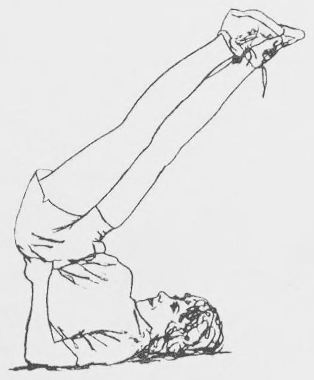
Tư thế gập người kéo giãn lưng.
Tôi thích thay đổi tư thế đứng bằng một số biến thể kéo dài. Khi cơ thể ở tư thế thẳng đứng, tôi uốn cong chân sang phải khoảng 8 inch và sau đó lặp lại quá trình ở bên trái. Sau khi trở lại tư thế trồng cây chuối, tôi đưa chân phải xuống qua đầu cho đến khi ngón chân chạm sàn. Điều này được lặp lại với chân kia và sau đó với cả hai chân. Tôi luôn kết thúc bằng cách trở về tư thế thẳng đứng và sau đó hạ xuống tư thế nằm sấp càng chậm càng tốt, từng đốt sống một. Vị trí đứng bằng vai cơ bản và các biến thể có tác dụng giãn cơ và tâm trí tuyệt vời. Trên thực tế, lưu lượng máu đến đầu tôi tăng lên có tác dụng giúp tôi tỉnh táo và xóa sạch mọi mạng nhện để tôi sẵn sàng hành động.
Kéo dãn cột sống—Tư thế ngồi
Bộ bài tập tiếp theo được thực hiện từ tư thế ngồi. Đầu tiên là tư thế kéo căng cơ chân và tăng thêm sự linh hoạt cho khớp hông.
Ngồi bắt chéo chân và đứng thẳng. Sau đó mở rộng chân phải của bạn và đưa bàn chân trái của bạn vào phần bên trong của đùi phải để lòng bàn chân tựa vào nó. Hít vào. Nâng cao cánh tay của bạn và duỗi chúng cao trên đầu và tập trung vào việc nâng cao mức năng lượng của bạn. Sau đó thở ra và cúi người về phía trước để nắm lấy mắt cá chân của bàn chân duỗi thẳng của bạn. Kéo đầu của bạn xuống để nó chạm vào đầu gối của bạn và giữ vị trí này càng lâu càng tốt. Hít thở sâu. Để thoát khỏi tư thế này, hãy thả lỏng mắt cá chân và tưởng tượng mình như một con búp bê giẻ rách, đưa cánh tay thả lỏng và khập khiễng về đầu gối và từ từ trở lại tư thế ngồi thẳng. Cố gắng cảm nhận năng lượng chảy lên từ đáy cột sống khi nó cương cứng. Lặp lại quy trình bằng cách duỗi chân trái và đưa chân phải vào đùi trong bên trái. Hít vào khi bạn duỗi tay qua đầu và thở ra khi bạn duỗi về phía trước để ôm lấy mắt cá chân. Như trước đây, hãy quay trở lại tư thế ngồi thẳng khi cơ thể bạn '"'cho biết'' bạn đã căng cơ đủ.
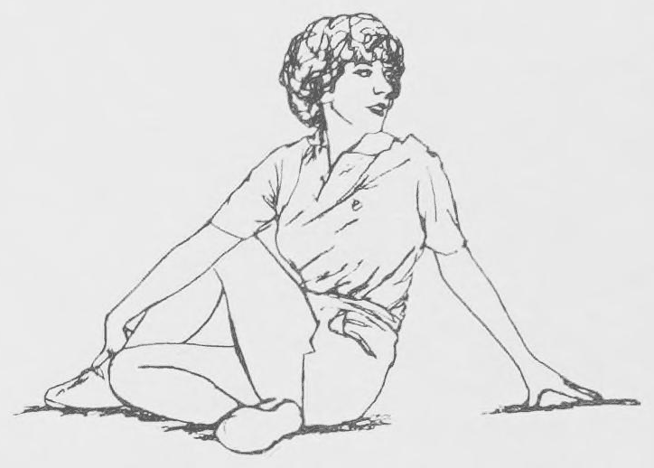
Người ngồi duỗi gân khoeo.
Bài tập thứ hai, Spinal Twist, nghe có vẻ phức tạp hơn thực tế. Đây là một tư thế có tác dụng vặn cột sống thay vì uốn cong theo hướng tiến hoặc lùi. Đầu tiên, hãy ngồi thẳng tư thế bắt chéo chân. Gấp bàn chân phải vào bên dưới đùi trái và bước qua đầu gối phải bằng chân trái. Khuỷu tay phải tựa vào mặt ngoài của đầu gối trái. Từ từ nâng cánh tay trái lên qua đầu và vặn người về phía sau để bạn có thể đặt bàn tay phẳng trên sàn phía sau lưng. Theo dõi chuyển động của cánh tay trái bằng đầu và nhìn về phía sau càng xa vai trái càng tốt. Giữ tư thế này trong ít nhất một phút và điều chỉnh nhịp thở của bạn. Để thoát khỏi tư thế này, hít vào khi bạn nâng cánh tay trái lên và theo nó vòng ra phía trước khi bạn thở ra. Bây giờ, thay đổi vị trí để cột sống của bạn bị xoắn theo hướng ngược lại. Gập chân trái xuống dưới và bước qua chân phải. Đưa cánh tay trái của bạn vòng qua để vươn ra bên ngoài đầu gối phải. Hít vào bằng tay phải và theo vòng sau lưng bạn khi bạn thở ra và đặt lòng bàn tay phẳng xuống sàn phía sau bạn. Ngẩng cao đầu và xoay cằm xa nhất có thể qua vai phải. Hít thở sâu. Hít vào bằng cánh tay phải, sau đó quay lại phía trước mặt bạn khi bạn thở ra. Bây giờ đưa cả hai đầu gối lên trước mặt bạn. Vòng tay quanh người họ và tựa đầu vào họ để thư giãn.
Nếu bạn có thể nhờ một người đã từng tập yoga đảm bảo rằng bạn đang thực hiện đúng tư thế này thì đó có thể là một ý tưởng hay. Đây chỉ là một ví dụ khác của một bài tập phức tạp hơn bằng từ ngữ. Nó thực sự nên được nhìn thấy và cảm nhận. Lợi ích của nó rất lớn và thực sự có thể được cảm nhận gần như ngay lập tức ở sự linh hoạt của cột sống và tăng cường sức sống. Xoay cột sống là cách tuyệt vời để giải phóng căng thẳng giữa hai bả vai và nó cũng giữ cho khớp hông linh hoạt.
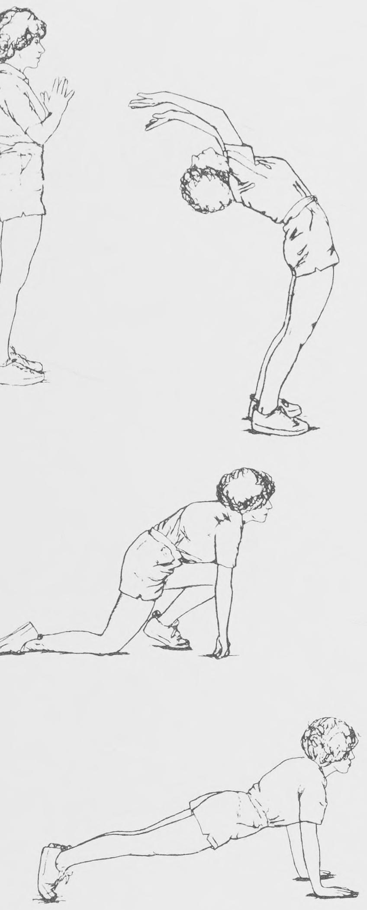
Chuỗi tư thế của bài tập giãn cơ toàn thân.
Kéo dãn cột sống—Tư thế đứng
Trong tư thế đứng, trước tiên bạn nên làm nóng cánh tay bằng cách chắp hai tay sau cổ và dùng khuỷu tay viết tên mình lên không trung. Điều này sẽ làm lỏng cơ vai đang căng thẳng.
Đối với Bài tập 1, Tư thế Tam giác, trước tiên bạn đứng thẳng với hai chân dang rộng khoảng 3 feet và hai tay dang rộng sang hai bên. Đưa cánh tay phải của bạn theo hình vòng cung rộng qua đầu cho đến khi nó tựa vào đầu bạn và song song với sàn. Phối hợp chuyển động này với động tác uốn cong sang bên trái. Để có được độ giãn tốt và kéo các cơ bên dài đó, hãy chạm sàn bằng lòng bàn tay dẹt của bạn. Lặp lại quá trình ở phía bên phải của cơ thể bạn. Lưu ý rằng vị trí này trông rất giống các vị trí bạn đảm nhận khi bạn phải tránh một cú vô lê hướng về phía cơ thể mình.
Bài tập thứ hai là một bài tập được gọi là Vũ điệu Mặt trời hoặc Chào mặt trời. Nó có mười hai chuyển động cơ bản—một chuyển động tượng trưng cho mỗi tháng trong năm. Khi bạn thực hiện Vũ điệu Mặt trời này, hãy thử và duy trì dòng chuyển động nhịp nhàng phối hợp với hơi thở của bạn. Để bắt đầu, hãy đứng thẳng với hai tay trước ngực trong tư thế cầu nguyện. Thở ra thật sâu. Sau đó hít vào khi bạn duỗi hai tay lên trên đầu và cong lưng. Bây giờ thở ra và thực hiện động tác gập người về phía trước, các ngón tay hướng xuống theo đường thẳng với ngón chân. Hít vào khi bạn duỗi một chân ra sau. Đầu gối đó đã bị hạ xuống. Giữ đầu của bạn nghiêng lên. Giữ hơi thở khi chân còn lại lùi về phía sau - cơ thể tạo thành một đường thẳng. Tiếp theo, hạ người xuống để nghỉ ngơi trên đầu gối và khuỷu tay. Đá ngược về phía hông của bạn. Sau đó hít vào và trượt qua cánh tay của bạn (di chuyển như một con rắn) - trán, mũi và cằm chạm sàn. Cuối cùng, cong người về phía sau như rắn hổ mang, đầu ngẩng cao và cằm hướng về phía trước. Thở ra và nâng hông thẳng lên để cơ thể tạo thành chữ “V” ngược. Ở tư thế này, cố gắng đẩy gót chân xuống sàn. Hít vào khi bạn đưa một chân lên vào tư thế chạy nước rút. Chân còn lại vẫn quay lại. Thở ra khi bạn đưa chân kia về phía trước. Giả sử tư thế cúi người về phía trước—đầu chạm vào đầu gối. Hít vào, duỗi người và cong lưng. Thở ra khi bạn đến tư thế đứng thẳng với hai tay chống xuống hai bên. Bạn có thể lặp lại trình tự này hai hoặc ba lần nữa nếu muốn. Nó là tuyệt vời để uốn cong và làm săn chắc toàn bộ cơ thể.
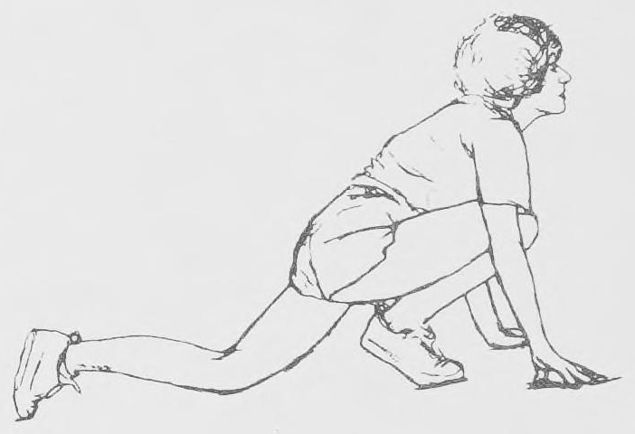
Người chơi duỗi người trước khi vào sân.
Một tư thế hoàn thiện
Trình tự Căng thẳng và Thả lỏng mà tôi sử dụng là một cách chuẩn bị quần vợt đặc biệt tốt. Nằm ngửa trên sàn, nằm ngửa. Tập trung vào hơi thở của bạn trong giây lát. Sau đó đưa thân trên và thân dưới của bạn lên khỏi mặt đất. Đưa hai tay ra trước mặt và tạo thành nắm đấm. Có ý thức co bóp tất cả các cơ trên cơ thể bạn. Giữ tư thế này để cảm nhận đầy đủ sự căng và căng của cơ. Sau đó thư giãn hoàn toàn cơn co thắt—ngay lập tức và không do dự. Trở lại tư thế nằm sấp, thở ra khi nằm xuống. Cảm nhận những làn sóng thư giãn ấm áp chảy qua cơ thể bạn. Cố ý co các cơ trước khi thư giãn sẽ tăng khả năng cảm nhận sự tương phản giữa căng thẳng và thư giãn. Điều này sẽ cung cấp cho bạn một hệ quy chiếu mạnh mẽ hơn để cảm nhận được sự vắng mặt của căng thẳng. Trên thực tế, cơ bắp của bạn sẽ được thư giãn sâu hơn nếu chúng được căng trước.
Hãy thực hiện một số tư thế yoga này thành thói quen thường xuyên và bạn sẽ nhận thấy rằng mình đang cảm thấy thư giãn hơn nhưng vẫn có nhiều năng lượng hơn. Với khả năng kiểm soát cơ bắp được tăng cường và tính linh hoạt của cột sống, bạn có thể chơi tennis với sự phối hợp nhiều hơn và ít căng thẳng hơn. Yoga sẽ hướng dẫn bạn những trải nghiệm đỉnh cao như làm chủ cơ thể mình.
PHẦN II - KỸ NĂNG TÂM TRÍ
Cho đến bây giờ, có thể bạn chưa bao giờ nghĩ nhiều về hoạt động của phức hợp tâm trí/cơ thể của mình. Đối với tôi, cho đến gần đây, tôi vẫn hình dung mình đơn giản như một mạng lưới các cơ "'treo'' trên một mạng lưới xương khác được điều phối và chỉ đạo bởi một bộ não giống như máy tính. Nhưng mối quan tâm ngày càng tăng của tôi đối với phức hợp tâm trí/cơ thể, các thói quen tập yoga của tôi, cũng như các bài đọc trong lĩnh vực hiện tượng tâm linh đã khám phá ra một chiều hướng mới trong lĩnh vực hoạt động thể chất và cảm xúc của tôi. Có nhiều điều đối với các cá nhân chúng ta hơn là những gì được gợi ý bởi "sự sắp đặt" của chúng ta.
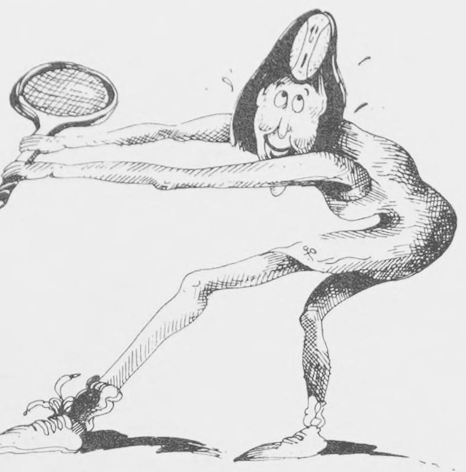
Biếm họa người chơi vặn xoắn người để đuổi theo bóng — minh họa phần “Nhận thức năng lượng”.
Nhận thức về năng lượng—Bạn là một “Sự kiện hiện tại"
Các nghiên cứu đã tiết lộ rằng cơ thể con người là một khối năng lượng tạo ra các sóng mà cá nhân có độ nhạy cảm cao có thể cảm nhận được, nhìn thấy hoặc cảm nhận được. Trên thực tế, chúng mang tính phức tạp của các phân tử và nguyên tử tạo ra dòng điện. Cơ thể chúng ta tạo ra và truyền sóng điện từ thay đổi theo cảm xúc và tình trạng thể chất của chúng ta. Chúng ta luôn được bao quanh bởi một trường lực đủ hữu hình để có thể chụp ảnh bằng thiết bị phù hợp. Trên thực tế, con người chúng ta tình cờ trở thành “‘sự kiện hiện tại!”’
Nhiều nhà nghiên cứu cảm thấy rằng những gì từng được coi là đặc điểm tâm linh như nhận thức ngoại cảm, thần giao cách cảm và khả năng nhận thức thực sự không gì khác hơn là mức độ nhận thức và độ nhạy cảm cao hơn đối với trường lực năng lượng điện do cơ thể chúng ta tạo ra và truyền đi.
Từ kinh nghiệm cá nhân trong quần vợt, tôi tin điều này là đúng. Tôi đã nỗ lực mở rộng nhận thức của mình để có thể điều chỉnh trường năng lượng của đối thủ hoặc đối tác. ''Râu'' của tôi thường nhận được tín hiệu từ những người chơi khác, báo trước hành động của họ. Như bạn có thể tưởng tượng, loại “tâm lý tâm lý” này là vô giá trong quần vợt.
Rào cản đối với nhận thức về năng lượng
Âm thanh và sự giận dữ của cuộc sống hiện đại không thực sự có lợi cho việc phát triển mức độ nhạy bén của chúng ta. Một loạt các kích thích giác quan liên tục tấn công và lấn át các giác quan của chúng ta. Vì lý do này, chúng ta thường loại bỏ những phiền nhiễu (tiếng ồn của thành phố, tiếng xe cộ, tiếng ồn ào của đài phát thanh hoặc T.V.) và hạn chế nhận thức của chúng ta. Tắt đi cảm giác quá tải này là một cơ chế bảo vệ; nhưng chúng ta có thể tắt quá nhiều. Có nhiều hình ảnh và âm thanh tinh tế mà chúng ta đã trở nên mù quáng và điếc trước—sự tinh tế, phức tạp của những bông hoa dại và tiếng rì rào êm đềm của dòng suối, sự thay đổi biểu cảm tinh tế trên khuôn mặt của thành viên trong gia đình hoặc hàng xóm. Đương nhiên, điều này cũng đúng trên sân tennis. Chúng ta thường bỏ lỡ âm thanh của quả bóng, cảm giác của vợt, nhịp điệu của “vũ điệu” quần vợt và những tín hiệu mà người chơi khác đang gửi cho chúng ta.
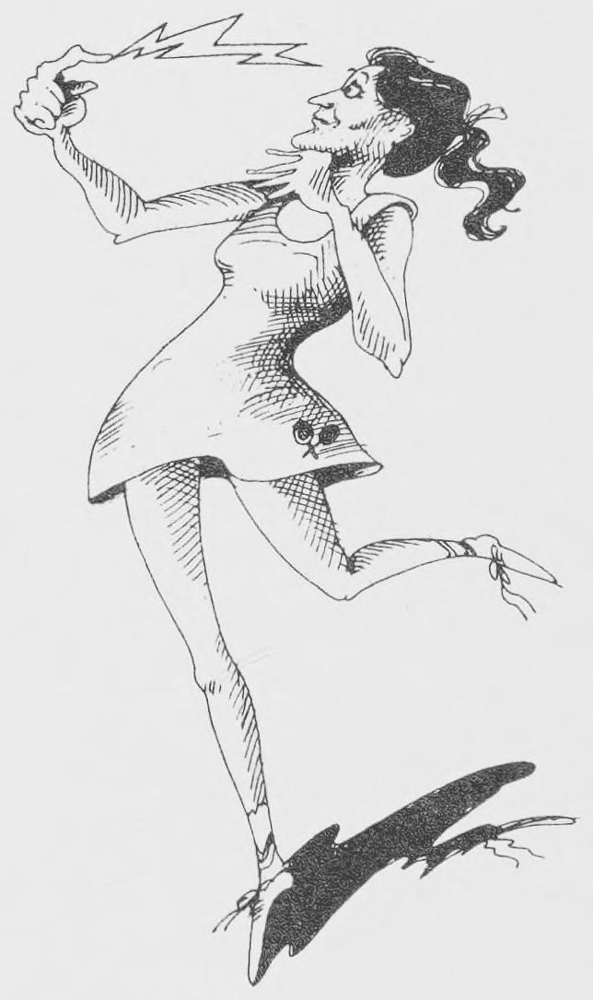
Người chơi đang xoay người lấy đà.
Tập trung vào quần vợt và nhận thức về năng lượng
Nhận thức về năng lượng tương tự mà tôi đã trải qua khi chơi quần vợt đã được chứng minh bởi nhiều vận động viên ở các môn thể thao khác. Nhiều cầu thủ bóng đá, bóng rổ, bóng chày và bóng đá đã tuyên bố có thể đọc một vở kịch trước khi nó diễn ra - thường là vào thời điểm quyết định của trận đấu! Nhiều người chạy bộ khẳng định nhận thức cao hơn về môi trường của họ sau khi họ chạy bộ năm hoặc sáu dặm. Khái niệm này thoạt đầu có vẻ lạ lùng; tuy nhiên, thực sự không có gì đặc biệt bất thường về nó. Suy cho cùng, một số người trong chúng ta thông minh hơn những người khác, một số người trong chúng ta có thể nhìn rõ hơn những người khác và một số người trong chúng ta có thể cảm nhận hiệu quả hơn những người khác. Để kết thúc việc trau dồi sự nhạy cảm của bạn, tôi đưa ra một số bài tập để phát triển hoặc hoàn thiện nhận thức về năng lượng của chính bạn.
Khi bạn thực hành những bài tập sau đây, hãy tập trung vào việc cảm nhận chúng chứ không phải phân tích chúng.
Thu thập năng lượng của bạn. Một bài tập đơn giản và hữu ích nhất mà tôi gọi là “Dây kéo”. Đứng thẳng và hít thở sâu vài hơi. Vào khoảng lần hít vào thứ ba, hãy thực hiện chuyển động lướt qua không khí phía trước cơ thể bạn. Từ ngón cái đến ngón trỏ, nhấc bàn tay của bạn qua một khu vực từ cánh tay của bạn, phần mở rộng xa nhất dưới thắt lưng của bạn đến một điểm trên đầu của bạn khoảng 10 inch. Tập trung vào ý tưởng giữ tất cả năng lượng của bạn “nén” thay vì rải rác hoặc phân tán ngẫu nhiên xung quanh bạn. Khi bạn đã thu thập được năng lượng của riêng mình, bạn có thể tập trung có chọn lọc vào các lĩnh vực bên ngoài không gian cá nhân của mình.
-e Cảm nhận trường năng lượng. Nâng cao kết nối năng lượng giữa bạn và đối tác có thể là vô giá. Nó có thể làm cho bạn trở thành một đội đặc biệt. Để nâng cao kết nối này, hãy bắt đầu bằng cách vận dụng hệ thống radar nội bộ của bạn. Trước tiên, hãy yêu cầu đối tác của bạn nhắm mắt hoặc bịt mắt anh ta và dẫn anh ta vượt qua một loạt chướng ngại vật. Bây giờ cảnh tượng đó đã bị lấy đi, nhiều khả năng đối tác của bạn có thể cảm nhận được năng lượng xung quanh mình. Hãy để sự mới lạ trôi qua, vì vậy đừng vội thực hiện bài tập này. Hướng dẫn đối tác của bạn đến gần một cái cây hoặc dòng suối để xem liệu anh ấy có thể dán nhãn cho chướng ngại vật cũng như xác định vị trí của nó hay không. Hãy để đối tác của bạn hướng dẫn bạn thực hiện một chuyến đi bộ “năng lượng” tương tự. Đối với những vật thể vô tri nhạy cảm và có nhận thức, cũng phát ra những rung động!
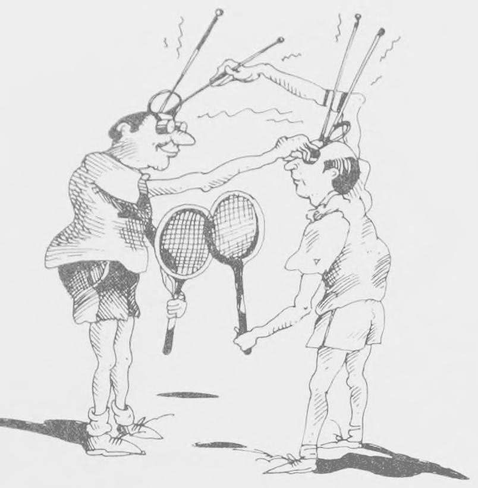
Biếm họa cảnh vung vợt trúng người thay vì trúng bóng — bài học về phối hợp trong đánh đôi.
Dự đoán năng lượng của đối tác của bạn. Khi bạn chơi đôi, hãy nâng cao nhận thức của bạn về năng lượng của đối tác. Hãy thử và cảm nhận vị trí của anh ấy. Hãy tưởng tượng rằng bạn có một thiết bị điều chỉnh điện ở phía sau đầu khi bạn đang đứng trên lưới. Tập trung vào việc để thiết bị này theo dõi chuyển động của đối tác của bạn.
Cảm nhận đối thủ của bạn. Khi bạn khởi động, hãy tập trung vào năng lượng của đối thủ. Bạn có thể cảm nhận được nó không? Hãy thử và dự đoán các bước di chuyển của anh ấy trước khi anh ấy thực hiện chúng. Hãy đảm bảo rằng bạn đang kiểm soát được dòng năng lượng của chính mình để bạn có thể tự do hơn trong việc cảm nhận những rung động của tất cả những người khác xung quanh bạn.
Nâng cao nhận thức và sự nhạy cảm của bạn. Một trong những bài tập tốt nhất để nâng cao nhận thức về bản thân là tập trung vào hơi thở. Để làm được điều này, hãy đảm bảo rằng bạn sẽ không bị ảnh hưởng bởi bất kỳ phiền nhiễu nào từ bên ngoài. Tôi thích ngồi trong tư thế bắt chéo chân thoải mái và nhắm mắt lại khi bắt đầu hít vào và thở ra nhịp nhàng. Với mỗi lần hít vào, tôi tập trung hút 100% năng lượng tích cực, thuần khiết vào cơ thể mình. Khi thở ra, tôi giải phóng mọi cảm xúc tiêu cực - bất cứ điều gì có thể làm cạn kiệt năng lượng của tôi. Quá trình này giúp tôi tiếp xúc với cảm xúc của mình và làm lộ ra bề mặt ý thức của tôi bất kỳ lo lắng hoặc nghi ngờ dai dẳng nào mà tôi có thể đã kìm nén. Sau khi nhận ra, tôi có thể để chúng trôi đi và thay thế chúng khi tôi hít vào bằng năng lượng khỏe mạnh và đầy sức sống luôn ở đó, luôn chảy, sẵn sàng để tôi đưa vào cơ thể và tích trữ theo ý muốn của mình. Tất nhiên, phần thở cực kỳ dễ thực hiện. Khó hơn nữa là rèn luyện tâm trí để làm việc cùng và vì bạn. Khi tôi cảm thấy hoàn toàn tràn đầy năng lượng tích cực, tôi hình dung mình mở rộng theo từng hơi thở, trở thành nhịp đập và lấp đầy toàn bộ căn phòng. Điều này thực sự khiến tôi cảm thấy cởi mở và mang lại cho tôi một vùng đệm trước những xáo trộn bên ngoài. Nếu bạn đánh rơi một khay bát đĩa gần tôi trước khi tôi thực hiện bài tập này, tôi có thể sẽ phải nhảy xa một dặm. Âm thanh tương tự sau đó sẽ không quá “rối nát”. Tôi sẽ chấp nhận nó với tâm trạng bình tĩnh và thoải mái khi chuẩn bị giúp nhặt từng mảnh.
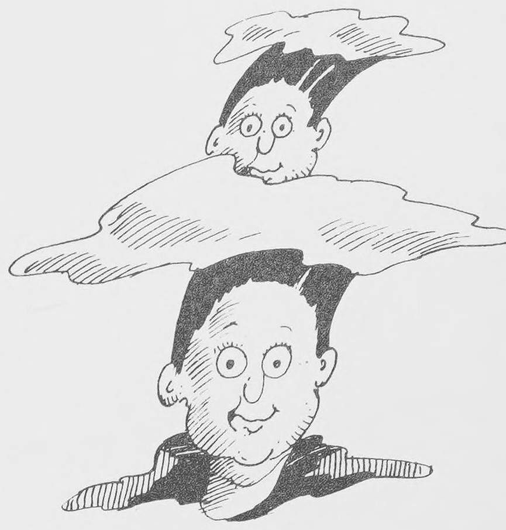
Hai khuôn mặt — một lộn ngược — nói về hai bán cầu não.
Khi tôi nhận thức được những rung động của chính mình, tôi sẽ dễ dàng điều chỉnh theo ''rung cảm'' của người khác. Do đó, tôi tiếp nhận và chấp nhận những ''rung cảm'' tốt và có thể tự phong ấn bản thân và tách khỏi ''rung cảm' tiêu cực. Tôi trở nên nhạy cảm hơn nhiều với việc nuôi dưỡng cảm xúc mà tôi dành cho bản thân. Trong quần vợt, điều này giúp tôi tiếp thu tất cả các nguồn năng lượng xung quanh mình và chọn lọc những nguồn năng lượng mà tôi muốn tập trung vào—quả bóng, đồng đội và đối thủ của tôi.
Chương 4
Thắng Trò Chơi Cảm Xúc
Winning the Emotional Game
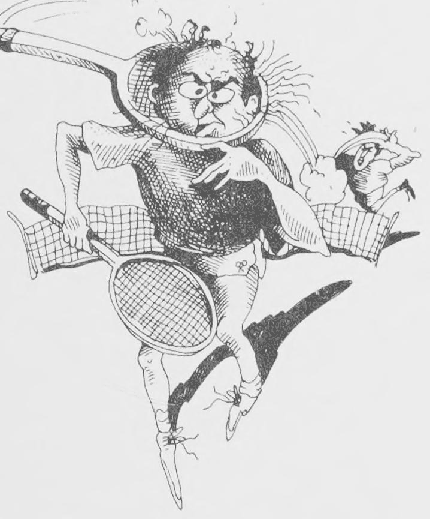
Người chơi đội mũ, chuẩn bị bước vào trận.
Kiểm soát cảm xúc giúp phân biệt người thắng và kẻ thua, cú đánh tốt với cú đánh xấu, trình độ chơi nâng cao và trình độ chơi trung bình, và cuối cùng nhưng không kém phần quan trọng, sự thích thú với nỗi đau. Sự mất kiểm soát có thể rất nghiêm trọng (khi vợt bị gãy, nước mắt rơi và những lời nói giận dữ được ném ra) hoặc chấn thương nhẹ (dẫn đến một sự im lặng, hờn dỗi). Không cần thiết.
Người chơi căng thẳng hoặc căng thẳng về mặt cảm xúc hoạt động hơi giống như một chiếc xe hết dầu. Động tác của anh ấy không còn uyển chuyển và uyển chuyển, anh ấy trở nên căng thẳng và tính khí nóng nảy có thể lên đến đỉnh điểm. Cảm giác căng làm hạn chế cử động vì sự giãn cơ bị rút ngắn lại. Chuyển động tương tự cần thêm năng lượng và nỗ lực.
Trong chương trước, chúng ta đã thảo luận về sự căng thẳng và giải phóng - nhưng nằm ngoài bối cảnh của lối chơi cạnh tranh. Điều đầu tiên trước tiên. Cảm giác căng thẳng trong cơ thể là bước đầu tiên để kiểm soát nó! Người chơi có tâm lý bình tĩnh, thoải mái và tích cực có lợi thế rất lớn so với người chơi hay kích động và sợ hãi.
Những lý do phổ biến khiến mất kiểm soát cảm xúc
Những lý do khiến bạn mất kiểm soát cảm xúc dường như ít gây chấn động thế giới hơn. Một cú gọi sai, một cú sút dễ dàng bị trượt, một tiếng ồn làm mất tập trung hoặc một làn gió thất thường thổi bóng ra ngoài cuộc chơi có thể đủ khiến một cầu thủ mất thăng bằng. Tuy nhiên, sự mất cân bằng có lẽ đã bắt đầu xảy ra do một hoặc tất cả bốn cảm xúc chủ đạo này: (1) sợ hãi (2) lo lắng (3) tức giận và/hoặc (4) dự đoán về sự căng thẳng. Với kinh nghiệm nhiều năm của mình, tôi nhận thấy rằng những nguyên nhân gây mất cân bằng này có thể được cô lập và khắc phục.
Sự sợ hãi, gần như hoảng loạn, có thể khiến người chơi choáng ngợp khi biết mình gặp khó khăn với một số cú đánh nhất định. Học viên thường mất kiểm soát khi chuyên gia của họ bất ngờ chạm vào điểm yếu của họ. Một pha giao bóng tự tin và kéo dài có thể nhanh chóng dừng lại bằng một cú trái tay, lốp bóng hoặc vô lê bất ngờ.
Hội chứng sợ hãi-hoảng loạn hoàn toàn không dành riêng cho những người mới chơi. Nó cũng thu hút những người chơi dày dạn kinh nghiệm hơn. Bạn có thể đồng cảm với ví dụ sau đây của Bob, một người chơi nâng cao, khi anh ấy bắt đầu nắm bắt:
Tỉ số được tính theo tỷ số cố định và Bob đang dẫn trước 5-1, điểm trận đấu. Mặc dù ở phía sau, đối thủ của anh ấy, Mike, dường như rất bình tĩnh khi thực hiện một cú đánh khó khăn ở vạch vôi để ấn định chiến thắng. Giọng nói bên trong anh ấy nói, “Hãy chơi từng điểm một.” Mike tiếp tục chơi từng điểm với phong cách thoải mái, và đột nhiên set đấu hòa nhau với tỷ số 5-5. Anh ta giao bóng ba con Át liên tiếp và giành chiến thắng với tỷ số dẫn trước 6-5.
Bob nhận ra rằng anh ấy đã mất quyền kiểm soát trận đấu với tỷ số 5-3 và anh ấy thất vọng vì để thua trước 5-1. Anh ấy bắt đầu hoảng sợ. Những suy nghĩ chạy qua tâm trí anh gần như có thể được viết thành kịch bản:
Anh ơi, em nghẹn rồi! Đúng là đồ ngu! Bây giờ anh ấy đã có động lực về phía mình. Làm thế nào tôi có thể giành chiến thắng? Điều gì sẽ xảy ra nếu anh ta lại đánh tôi lần nữa? Nếu anh ta đi xuống dòng thì sao? Nếu anh ta lốp bóng thì sao? Làm sao tôi có thể đối mặt với bạn gái của mình sau chuyện này? Tôi cảm thấy lo lắng và không thể kiềm chế được bản thân.”
Trận đấu kết thúc. Mike từ phía sau lội ngược dòng đánh bại Bob với tỷ số 7-5 trong set thứ ba. Sự khác biệt giữa Bob và Mike không phải là ở những cú đánh mượt mà hay thậm chí là chiến lược hay khả năng kiểm soát bóng. Sự khác biệt trong trò chơi này là Mike có khả năng kiểm soát cảm xúc của mình trước áp lực, còn Bob thì không.
Lo lắng là một cảm xúc tự đánh bại khác được chứng minh bằng một ví dụ quen thuộc khác:
Vài năm trước, tôi đã huấn luyện John, một cầu thủ giỏi và khởi động như một cầu thủ hàng đầu. Trên thực tế, John có lẽ là cầu thủ khởi động giỏi nhất ở Hoa Kỳ; nhưng khi các trận đấu bắt đầu, anh ấy gần như vô thức rơi vào trạng thái lo lắng. Hàm của anh ấy sẽ cứng lại, vai anh ấy sẽ căng ra và khả năng kiểm soát vợt của anh ấy sẽ giảm đi. Lẽ ra John phải chơi số một trong đội, nhưng thay vào đó lại chơi ở vị trí thứ năm hoặc thứ sáu. John có tất cả các cú đánh, nhưng anh ấy thiếu khả năng kiểm soát cảm xúc để trở thành người chiến thắng.
Sự tức giận cũng có thể gây khó chịu cho một cầu thủ nhạy cảm, biến đấu trường thể thao của anh ta thành một khu vực có nguy cơ cao.
Khi chơi quần vợt liên trường vào những năm 60, tôi từng chơi một người đàn ông đang thắng trận với tỷ số 5-0, 40 tình yêu trong set thứ ba. Lúc này tôi cảm thấy mình chẳng còn gì để mất nên bắt đầu lao ra và lấy lưới. Ba mươi phút sau, tôi thắng set đó và tỉ số là 7-5. Đối thủ của tôi đầu tiên bắt đầu khóc, sau đó anh ta đập vợt, xé tóc, đập hàng rào và lao ra khỏi sân trong cơn tức giận.
Hai năm trước, tôi đã bị một trong những cầu thủ mà tôi huấn luyện ném một cây vợt bay đi xa khoảng 35 thước vào đầu sau khi anh ta ném trượt một cú đánh dễ dàng. (Anh ấy đã không nhắm vợt vào tôi). Những tài khoản về cơn thịnh nộ và tức giận có thể lấp đầy một thư viện!
Dự đoán trước sự căng thẳng là trạng thái đe dọa hầu hết chúng ta – trong và ngoài sân tennis. Người ta tin rằng hầu hết mọi người đều có thể giải quyết căng thẳng một cách thỏa đáng; tuy nhiên, cơ thể chúng ta bắt đầu phản ứng bất lợi khi chúng ta lường trước những tình huống căng thẳng. Trong quần vợt, việc chơi một trận hòa sẽ dễ dàng hơn là dự đoán phải chơi một trận. Trong cuộc sống hàng ngày, về mặt sinh lý, việc đối phó với một cuộc khủng hoảng như cái chết hoặc ly hôn sẽ dễ dàng hơn là lường trước cuộc khủng hoảng.
Cơ chế “Đấu – Bay”
Quần vợt dường như làm nổi bật những đặc điểm của Jekyll và Hyde ở quá nhiều người chơi. Hội chứng Jekyll và Hyde có liên quan trực tiếp đến một cơ chế được gọi là "'chiến đấu-bỏ chạy". Kiểu hành vi này có thể là nguyên nhân cho sự sinh tồn của chúng ta với tư cách là một loài. Rốt cuộc, đã có những lúc chúng ta phải đối đầu hoặc chạy trốn khỏi bầy sói, một hoặc hai con hổ răng kiếm hoặc một nhóm người man rợ lưu động hàng xóm không thân thiện. Sau đó, dòng adrenaline bùng nổ, cơ bắp căng thẳng, nhịp tim tăng nhanh và/hoặc quá trình tiêu hóa bị gián đoạn đã sẵn sàng cho chúng ta hành động siêu bình thường. Nếu tổ tiên của chúng ta sẵn sàng cho những hành động siêu bình thường. đã không thể loại bỏ những nguy hiểm hoặc loại bỏ nó khỏi chúng, chúng ta sẽ không tồn tại ngày hôm nay. Nhưng những phản ứng sinh lý tương tự đã cứu tổ tiên của chúng ta khỏi những mối đe dọa thể chất có thể được kích hoạt trong chúng ta bởi những mối đe dọa về cảm xúc hoặc bản ngã. Và điều đó thường gây ra rắc rối! Cơ chế phòng vệ này hiếm khi hữu ích trong tình huống cạnh tranh. Khi đó hệ thống báo động của cơ thể chúng ta tự trở thành nguyên nhân gây báo động; vì nó làm gián đoạn sự tập trung và dòng chảy được kiểm soát của cơ thể.
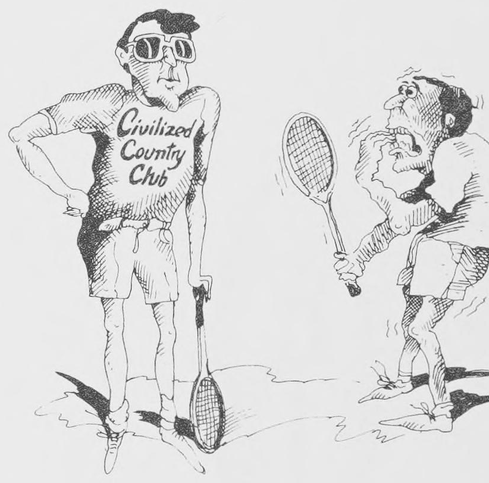
Tư thế giãn cơ giữ thăng bằng.
Đoản mạch phản ứng “chiến đấu-bỏ chạy”
Sợ hãi, lo lắng, tức giận và dự đoán đều kích hoạt cơ chế “chiến đấu-bỏ chạy”. Chương trình kiểm soát cảm xúc được nêu trong phần còn lại của chương này sẽ giúp bạn hạn chế những cảm xúc phản tác dụng này. Quá trình này bao gồm việc hạn chế việc phán xét, “bình luận viên thể thao” phát sóng từ bán cầu não trái của bạn và khuyến khích khả năng hình ảnh và cảm giác của bán cầu não phải.
Hãy mở rộng khả năng thư giãn trước khi bắt đầu. Tất cả chúng ta đều quen thuộc với phát thanh viên thể thao—giọng nói biết tuốt từ bên lề. Anh ấy/cô ấy rất giỏi trong việc tạo ra sự lo lắng và hồi hộp. '' Joe có thể xử lý chi phí không? Hoặc, "''Jill! Vấn đề của bạn là gì? Bạn nên vượt qua thời kỳ suy thoái dịch vụ đó!"' Lưu ý rằng đây là những khía cạnh bằng lời nói; do đó, họ bị chi phối bởi lời nói. Chúng phản ánh những kỳ vọng không thực tế đối với chúng ta với tư cách là những người chơi để không mắc sai lầm—không thể nào được, bởi vì toàn bộ trận đấu quần vợt đều được tạo nên từ những sai lầm!
Giây phút bạn nghe thấy những từ trong đầu: “không thể”, “nên”, “‘phải”, “phải”, hãy lưu ý rằng bạn đang tạo ra một tình huống phi thực tế hoặc không thể xảy ra, điều này đảm bảo rằng bạn sẽ phải trải qua áp lực và sự khó chịu ngày càng tăng. Ngoài ra, bạn sẽ tiêu tốn năng lượng quý giá (cảm xúc cũng lấy năng lượng) có thể được áp dụng cho những hoạt động theo đuổi thú vị hơn khác.
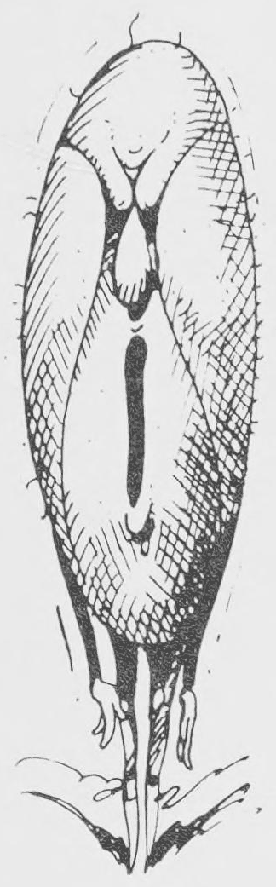
Hình chiếc lá — ẩn dụ cho sự tập trung vào một điểm.
Cách để bảo vệ bản thân khỏi sự suy giảm cảm xúc và mất năng lượng như vậy là thay thế các từ “muốn” hoặc “thích” hoặc “đúng hơn” (tôi muốn nhận cú giao bóng này thay vì tôi phải thực hiện nó) trong cách thể hiện ham muốn của bạn. Khi đó, bạn sẽ đưa ra cho mình một yêu cầu hơn là một yêu cầu, đó thực sự là tất cả những gì bạn có thể hy vọng làm được.
Một bài tập rõ ràng nhất là ghi lại (hoặc nhờ bạn bè ghi lại) số lần bạn nói “không thể”, “nên”, “‘phải” hoặc “phải” trong những lời bình luận tự định hướng của mình. Một số người "nên" 'thả mình xuống đất. Thất vọng với những sai sót hoặc sai sót là điều bình thường—điều đó hoàn toàn chính đáng—nhưng thật đáng nguyền rủa vì chúng sẽ lãng phí năng lượng dư thừa. Hãy xem xét chính sách bảo tồn năng lượng của riêng bạn và những gì bạn có thể làm để giữ cho nó tiếp tục trôi chảy. Bạn cũng có một hệ sinh thái! Miễn là bạn có thể, tại sao không tạo cho mình một môi trường thân thiện để phát triển.
Kiểm soát hơi thở ngoài sân
Bạn đã được giới thiệu các bài tập thở có kiểm soát ở Chương III. Tập trung vào hơi thở có nhiều lợi ích: (1) nó giữ cho tâm trí không lang thang đến những phiền nhiễu bên ngoài; (2) nó làm tăng mức tiêu thụ oxy; (3) nó điều chỉnh nhịp điệu cơ thể của bạn; và (4) nó có tác dụng an thần. Quay lại bài tập thở yoga được mô tả ở trang. 24. Thêm một biến thể vào chu kỳ thở sâu bằng cách sử dụng các lỗ mũi thay thế. Để tăng lượng oxy nạp vào, hãy đặt ngón trỏ lên lỗ mũi phải. Chặn lối đi và hít vào thở ra qua lối đi bên trái của bạn. Lặp lại quá trình tương tự bằng cách chặn lối đi bên trái của bạn và hít vào và thở ra qua lỗ mũi phải. Bây giờ bạn đã thông suốt cả hai đường thở và hơi thở của bạn sẽ trở nên hiệu quả hơn về oxy.
Bây giờ hãy nằm xuống và thư giãn. Nhắm mắt lại và hít vào đếm chậm đến tám và thở ra đếm chậm đến tám. Giữ thư giãn trong khoảng một phút và lại hít vào đếm chậm đến tám. Giữ hơi thở của bạn đếm đến mười hai và sau đó từ từ thở ra đếm đến tám. Thư giãn trong hai phút trước khi tiếp tục. Bây giờ hãy tiếp tục tư thế ngồi, bắt chéo chân và giữ cột sống thẳng. Từ từ quay đầu sang phải. Hít vào khi ngửa đầu lên, cằm cao hơn vai và thở ra khi cúi đầu xuống. Tiếp tục quá trình này trong hai phút và đảo ngược hướng rẽ của bạn. Lặp lại việc hít vào khi bạn nâng đầu lên và thở ra khi bạn hạ thấp đầu xuống. Sau hai phút để đầu rơi về phía trước trên ngực. Hãy nhắm mắt lại và “nổi” trong trạng thái thư giãn.
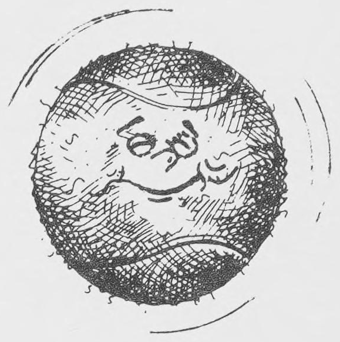
Khuôn mặt trong quả bóng đang nhìn thẳng vào người xem.
Sau hai phút thư giãn hoàn toàn, hãy tập trung nhận thức vào hơi thở một lần nữa và bắt đầu hít vào và thở ra nhanh chóng. Lúc đầu thở nhanh nên kéo dài từ mười đến mười lăm giây. Tăng tốc độ thở nhanh và một lần nữa để đầu bạn gục xuống ngực trong khi bạn thả mình trong trạng thái thư giãn sâu. Giữ cho tâm trí của bạn không đi lang thang. Vẫn còn bắt rễ, qua hơi thở của bạn, ở đây và bây giờ.
Khi bạn tập trung vào hơi thở của mình, ''bình luận viên thể thao'' bên trong thực sự bị buộc phải ''không hoạt động''. Nếu tâm trí của bạn bắt đầu lang thang, bạn sẽ ở trong trạng thái đưa ra cho nó một số gợi ý mạnh mẽ và tích cực. Hãy nghĩ về thời gian và địa điểm khi bạn vô cùng hạnh phúc. Hãy nhớ lại những cảm xúc lúc đó và tắm mình trong đó ngay bây giờ. Những cảm xúc tích cực có thể được lấy lại và trải nghiệm lại để thanh thản hoặc tăng thêm năng lượng. Ngay bây giờ, bạn đang học cách mở khóa chúng cho chính mình. Còn tôi, tôi Tôi thích hình dung mình trong khu rừng thông rậm rạp gần ngôi nhà thời thơ ấu của tôi, được bao bọc trong không khí mát mẻ và hương thơm của cây vân sam.
Khi bạn hít vào, hãy tập trung vào sinh lực mà bạn đang đưa vào cơ thể. Khi bạn thở ra, hãy giải phóng mọi căng thẳng và để mọi cảm giác tiêu cực trôi đi.
Bạn thậm chí có thể tạo cho mình một tưởng tượng có hướng dẫn sẽ hỗ trợ cho trận đấu quần vợt thực tế của bạn. Hãy tạo cho mình một hình mẫu quần vợt hoặc một tay vợt hàng đầu mà bạn có thể nhận ra. Hãy xem liệu bạn có thể tự mình suy nghĩ lại một trong những trò chơi đáng nhớ nhất của anh ấy/cô ấy không. Bây giờ, hãy hình dung bản thân bạn được xếp chồng lên người mẫu của bạn, di chuyển với cùng sự kiểm soát, thư giãn và phong cách giống như cô ấy hoặc anh ấy.
Một số gợi ý tại tòa
Kiểm soát hơi thở có thể là liều thuốc an thần tuyệt vời như đã thấy ở trên. Trên sân, nó có thể cung cấp năng lượng và sức mạnh to lớn. Tôi liên tục nhắc nhở học sinh về thực tế này. Người mới bắt đầu cảm thấy lo lắng về trò chơi của mình hoặc các phần của nó, thường phản ứng bằng cách nín thở khi cảm thấy lo lắng nhất. Việc giữ hơi thở đi ngược lại nhịp điệu và dòng chảy tự nhiên của cơ thể cũng như khiến cơ bắp của chúng ta phải làm việc vất vả hơn nhiều so với mức cần thiết. Bằng cách nín thở, chúng ta có thể mất ít nhất 40% sức mạnh và thường sẽ buộc quả bóng đi chệch khỏi mục tiêu dự định từ 5 đến 25 feet.
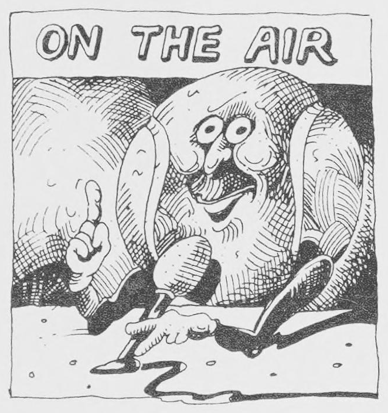
“ON THE AIR” — bình luận viên trong đầu, kẻ thù của sự tập trung.
Giao bóng là một lĩnh vực chung mà việc giữ hơi thở ảnh hưởng đến khả năng kiểm soát và sức mạnh. Hãy để mắt tới hiện tượng này. Nhiều cầu thủ thở bình thường khi họ đến gần đường cuối sân và sau đó đột ngột nín thở khi tung bóng và giao bóng. Khi giao bóng xong hơi thở vẫn có thể được giữ lại. Tuy nhiên, điều này hiếm khi xảy ra với những người chơi có quyền kiểm soát và quyền lực. Nếu bạn xem Jimmy Conners và Billie Jean King, bạn sẽ nhận thấy rằng họ để hơi thở trôi chảy một cách tự nhiên khi giao bóng. Trên thực tế, hầu như không thể bỏ lỡ nhịp thở tự nhiên của cả Conners và King vì những tiếng la hét và càu nhàu đi kèm với hơi thở thở ra khi động tác giao bóng hoàn thành.
Hơi thở là yếu tố tạo ra sức mạnh trong cú giao bóng và nó là yếu tố giúp cơ thể thư giãn để kiểm soát chuyển động giao bóng tốt hơn. Nó có lẽ là công cụ mạnh mẽ nhất mà chúng tôi có sẵn cho tất cả các nét vẽ.
Trong các bài tập quần vợt, hãy sử dụng khả năng kiểm soát hơi thở như một công cụ để đối phó với những nỗi sợ hãi và lo lắng cụ thể của bạn. Giả sử bạn sợ những cú vô lê hoặc hoảng sợ khi đánh một cú đánh qua đầu, bạn chỉ cần hít vào khi bóng rời khỏi vợt đối phương và thở ra khi bạn tiếp xúc với bóng. Khi thực hiện động tác chạm đất, thở ra từ từ, tưởng tượng rằng hơi thở của bạn đang nâng lên và đưa bóng qua lưới. Nếu bạn muốn thực hiện một cú đánh mạnh hơn, hãy thở ra một cách nhanh chóng và mạnh mẽ. Điều đó sẽ mang lại sức mạnh cho cú đánh của bạn.
Kiềm chế “Bình luận viên thể thao” trong suốt trận đấu
Tự thư giãn thông qua kiểm soát hơi thở là điều tuyệt vời nhưng khó có thể theo kịp hàng giờ thi đấu. Đặc biệt là trong những thời điểm khủng hoảng, bạn có thể khó giữ được tâm trí không huyên thuyên, phán xét, gây áp lực, la mắng bạn. Để ngăn chặn những suy nghĩ phiền phức, hãy giao cho bán cầu não trái của bạn một nhiệm vụ (hoặc giải trí cho nó, nếu bạn muốn). Việc đọc thuộc lòng một âm thanh, từ hoặc cụm từ để tập trung có thể cực kỳ hữu ích. Quy trình này giống như sử dụng '"'thần chú"' theo cách của người hòa giải TM. Nó là một công cụ giúp bạn tĩnh tâm và kiểm soát ý thức của mình.
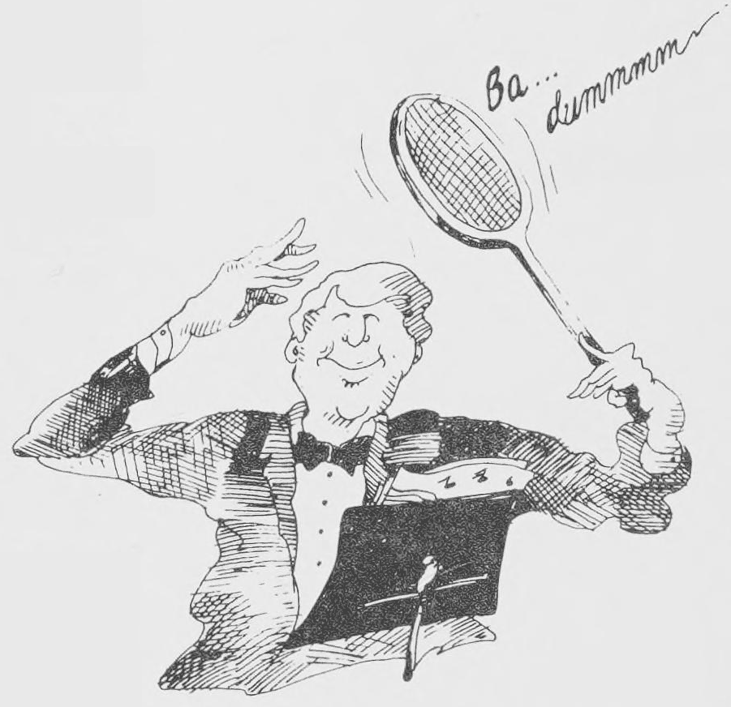
Người nhạc trưởng vung vợt thay đũa — “Ba…dummmm”.
Các học sinh của tôi nhận thấy hai gợi ý “thần chú” sau đây rất hữu ích để duy trì sự thư giãn trong vài giờ thi đấu. Rõ ràng, chỉ sử dụng một lần một lần. Tuy nhiên, bạn có thể thay đổi chúng trong suốt trận đấu miễn là chúng mang lại sự rung động nhẹ nhàng bên trong bạn — nói cách khác, giúp bạn luôn tập trung.
Thần chú I, Âm nhạc—Chọn một bản nhạc nổi tiếng (một bản ballad thay vì một giai điệu rock) và chơi nó trong đầu bạn bằng cách giữ nhịp theo độ nảy và cú đánh của quả bóng. Bản thân tôi sử dụng chủ đề từ bộ phim ''Exodus'', nhưng tôi đoán nó cũng phù hợp với tôi. Dù bạn chọn giai điệu nào, để đạt hiệu quả tối ưu, hãy nhấn mạnh các nốt khi quả bóng nảy lên và khi bạn hoặc đối thủ của bạn đánh nó:
Khi quả bóng tennis nảy lên hãy nói “Ba” và khi bạn đánh quả bóng hãy nói “Dum”.
Để âm thanh “dum” vang vọng trong một hoặc hai giây sau khi bạn đánh bóng. Thật ngu ngốcmmmmmmmm. Hãy xem bạn có thể giữ bóng trên dây vợt trong bao lâu. Cố gắng giữ cho âm thanh “dmmmmmmmm”’ vang dội trong suốt thời gian bóng tiếp xúc. Quá trình này sẽ cho phép bạn theo dõi lâu hơn một chút—điều này rất quan trọng trong tất cả các cú đánh.
Tôi đã lưu ý rằng người chơi thường cầm vợt trong hai giờ như thể họ đang cố bóp cổ một con rắn hoặc giữ một chiếc bè cứu sinh giữa đại dương. Cuối cùng, điều này làm tăng độ căng và giảm khả năng phối hợp cơ bắp. Để giảm bớt sự căng thẳng tích tụ này, hãy thử sử dụng các từ ""căng thẳng" và "nhả"' làm câu thần chú và một mệnh lệnh thực tế cho cơ bắp của bạn. Nói ''căng thẳng'' khi bạn đánh bóng và "thả ra" khi bạn kết thúc cú đánh. Để thêm vào tác dụng thư giãn cánh tay này, hãy cầm vợt bằng tay kia giữa các điểm. Sau đó, bạn sẽ đảm bảo rằng cẳng tay của bạn được thư giãn và tránh nguy cơ tổn thương mô cơ.
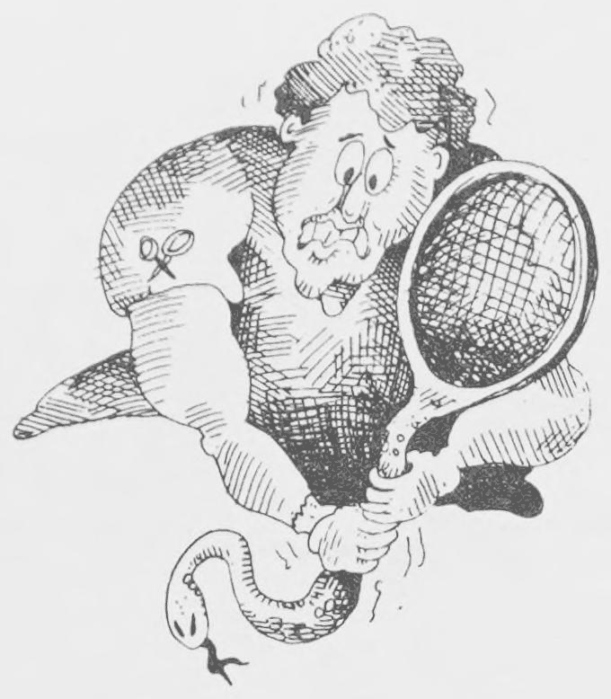
Biếm họa người chơi gồng cứng chờ đợi điều bất ngờ — “căng” thay vì “thả lỏng”.
Sử dụng câu thần chú ''căng thẳng''-''giải phóng'' sẽ giúp bạn thư giãn và giúp bạn tránh được những cạm bẫy hao tổn năng lượng. Nắm vợt, liên tục chờ đợi những điều bất ngờ, cũng là một sự tiêu hao sức lực như thể những điều bất ngờ luôn xảy ra.
Khi tập trung, bạn không nên mong đợi gì cả, nhưng hãy sẵn sàng cho mọi thứ!
Tăng cường kỹ thuật thư giãn trên sân
Để ổn định trên sân, hãy tập trung vào cảm giác cơ thể của bạn. Vẫn tách biệt và khách quan. Đầu tiên hãy quét cơ thể xem có căng thẳng không. Bây giờ hãy tập trung vào những vùng căng thẳng trên cơ thể như hàm và vai. Hãy tự hỏi bản thân lần lượt những câu hỏi sau và nhớ tập trung vào các kỹ thuật thư giãn như những thực thể riêng lẻ.
Tôi có đang thở ra vào thời điểm tiếp xúc không?
Tôi có cầm vợt bằng tay trái giữa các điểm không? (tay phải dành cho người thuận tay trái)
Có phải tôi đang nói “căng” tại điểm tiếp xúc và “nhả” khi bóng rời vợt không?
Tôi có đang thư giãn vai mình không?
Tôi có đang thư giãn hàm không?
Hãy hỏi từng câu hỏi cho đến khi bạn thành thật trả lời có.
Trình tự sẵn sàng
Nhiều cầu thủ khởi động với phong cách tuyệt vời và dễ dàng, nhưng khi trận đấu bắt đầu họ thường nhấn nút hoảng sợ. (Bạn có nhớ John, Vận động viên khởi động vĩ đại nhất thế giới của chúng ta không?) trang. 36. Đối với John, điều này có thể gây ra bất kỳ hoặc tất cả các vấn đề sau: (1) không sẵn sàng cho mỗi lần bắn; (2) thu vợt lại quá chậm; (3) quan sát quả bóng quá lâu để xem nó có chạm đất hay không; (3) và không nhanh chóng đặt lại vị trí sẵn sàng sau khi bóng được đánh.
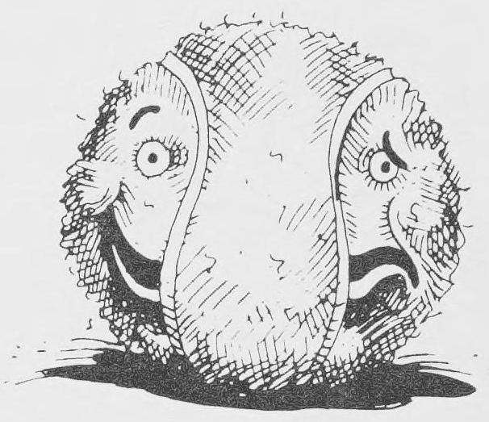
Quả bóng mang hai khuôn mặt, minh họa những mặt đối lập của cảm xúc.
Để tránh những mối nguy hiểm này, hãy luôn chuẩn bị ở tư thế sẵn sàng – vợt ở phía trước bạn và đầu gối hơi cong. Hãy thu vợt lại thật nhanh, tốt nhất là vào lúc bóng đã bay qua lưới. Nếu bạn thực hành điều này, bạn sẽ sẵn sàng cho mọi cú đánh trong thời gian dài. Tiếp theo, sau khi đánh bóng, hãy để mắt đến điểm tiếp xúc trong vài giây. Điều này sẽ giúp bạn không quá lo lắng về việc liệu cú đánh của bạn sẽ vào hay ra khỏi sân. Cuối cùng, sau khi bạn đánh bóng và giữ được điểm tiếp xúc trong thời gian ngắn, hãy nhanh chóng trở lại vị trí sẵn sàng.
Định tâm trong cuộc thi
Định tâm là một công cụ dựa trên sự hiểu biết về năng lượng để nó có thể trở thành một yếu tố tích cực trong phong cách cá nhân của một người. Trong Định tâm Quần vợt, những cảm xúc tiêu cực như tức giận, sợ hãi và lo lắng không bị chặn bởi hàng phòng thủ. Đúng hơn là họ được thừa nhận và chấp nhận. Người ta thừa nhận rằng nếu một người cho phép những lực này chảy đi thì chúng sẽ trôi qua; nhưng, nếu một người chặn chúng, chúng vẫn được nội hóa và có khả năng tích tụ lại.
Khi chơi quần vợt, tôi thấy rằng cách tốt nhất để thoát khỏi những cảm xúc khó chịu là sử dụng hình ảnh não phải. Khi tôi nhận ra rằng mình đã trở nên bị kích động quá mức, tôi hình dung sự tức giận mà tôi đang trải qua như nước chảy từ một dòng suối. Sau đó tôi để nước chảy qua cánh tay và ra khỏi cơ thể. Sự giải phóng như vậy mang lại cảm giác vô cùng tự do và tràn đầy năng lượng một cách đáng ngạc nhiên.
Một công cụ khác để chuyển sự tức giận thành năng lượng tích cực là quá trình thay thế. Đây là cách nó hoạt động. Nếu bạn bắt đầu cảm thấy tức giận dưới dạng những nhận xét tự ti như: “Tôi bắt đầu hoảng sợ,” “Tôi nghẹt thở quá,” “Tôi buồn kinh khủng,” chỉ cần thay thế ý tưởng tiêu cực bằng một ý tưởng tích cực. Trong Tennis Centering, các cụm từ thay thế đã có thành tích đã được chứng minh là: '"'Tôi ... chảy như dòng sông, ở đây và bây giờ, chỉ là một người quan sát tách biệt, gây ra nỗi đau cho chính mình, đạt được những gì tôi nhận được." e Nếu bạn nhận thấy sự lo lắng ngày càng gia tăng, thì Tennis Centering sử dụng một kỹ thuật khác (được vô số người chơi sử dụng một cách vô thức). Giữa các điểm, chỉ cần tập trung nhận thức của bạn vào dây vợt của bạn. Sắp xếp các dây sao cho các đường thẳng song song cả theo chiều dọc và chiều ngang. Đây là một thiết bị giúp làm dịu khả năng phán đoán và phân tích của não trái bằng cách giao cho nó một nhiệm vụ khác.
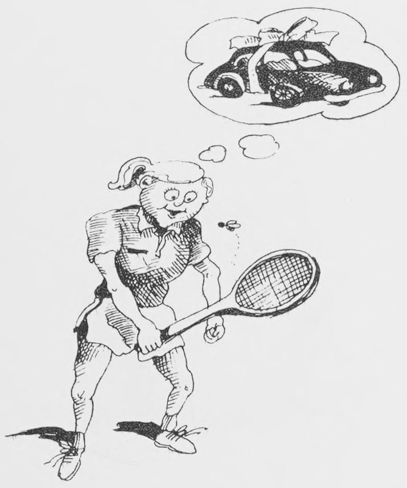
Sinh vật đội vòng hào quang — ẩn dụ cho “đỉnh cao trải nghiệm”.
Bạn thường có thể thấy mình mất thăng bằng và mất bình tĩnh khi chơi khi bị người chơi khác khiêu khích. Để tập trung lại bản thân, hãy thử nhập vai. Hãy đặt mình vào vị trí của họ và cố gắng hiểu điều gì đang thúc đẩy họ. Bạn nghĩ hội chứng “chiến đấu-bỏ chạy” đang ảnh hưởng đến họ như thế nào?
Nếu tiếng ồn bên ngoài làm bạn khó chịu, một cách tuyệt vời là chuyển hóa chúng thành những ảnh hưởng tích cực về mặt tinh thần. Ví dụ: nếu một chiếc ô tô chạy không tải quá ồn, hãy tưởng tượng đó là phần thưởng mà bạn sẽ giành được khi kết thúc trận đấu! Trong tâm trí bạn, nó có thể là chiếc xe trong mơ của bạn. Tại sao không?
Ngay cả cơn đau cũng có thể được kiểm soát bằng kỹ thuật Định tâm Quần vợt. Hãy tưởng tượng rằng nỗi đau có một màu sắc. Hãy để màu đó lấp đầy khu vực đau khổ (ví dụ: khuỷu tay), sau đó cố gắng loại bỏ nó bằng cách hình dung màu ở dạng giống như chất lỏng chảy ra khỏi cánh tay qua các ngón tay, cuối cùng tiếp đất trên sàn hoặc bề mặt chơi.
Khi xem xét những kỹ thuật trên, bạn sẽ thấy rằng một số kỹ thuật chắc chắn sẽ có ích trong nhiều khía cạnh của cuộc sống. Rõ ràng, việc làm chủ cảm xúc không chỉ giới hạn ở sân tennis.
Trải nghiệm đỉnh cao và trò chơi cảm xúc
Các kỹ thuật như kiểm soát hơi thở, sử dụng từ ngữ hoặc âm thanh làm câu thần chú, thay thế cảm xúc tích cực bằng cảm xúc tiêu cực, nhiều loại hình ảnh khác nhau và buông bỏ căng thẳng một cách có ý thức cho phép người chơi kiểm soát suy nghĩ và phản ứng cơ thể của họ. Nhiều học sinh của tôi có thể kiểm soát cái từng được gọi là hệ thống thần kinh không tự chủ (nhịp mạch, lượng đường trong máu và lưu lượng máu đến tứ chi)! Những học viên đã tham dự các buổi hội thảo về Định tâm Quần vợt thường ghi nhận những thay đổi rõ rệt về tính khí và mức độ hiệu quả trên sân của họ. Một kết quả dễ dàng quan sát được là sự tiến bộ nhanh chóng từ một đợt tập hợp ngắn gồm bảy quả bóng đến các đợt tập hợp dài gồm một trăm quả bóng, thường chỉ trong khoảng thời gian ngắn nhất là 20 phút!
Quả bóng có vòng hào quang trên đầu.
Vượt qua giới hạn của một người thông qua Định tâm sẽ dẫn đến những trải nghiệm đỉnh cao như nâng cao hình ảnh bản thân, khả năng kiểm soát cơ thể, tinh thần minh mẫn hơn và cảm giác hòa nhập với môi trường.
Chương 5
Tập Trung
Concentration
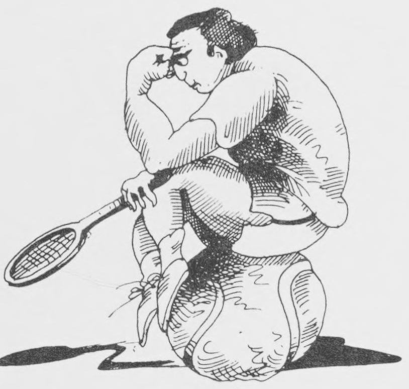
Biếm họa người chơi ngồi chờ trên quả bóng khổng lồ — sự mất tập trung.
Sự tập trung là một công cụ có giá trị cho hầu hết các nhiệm vụ trong cuộc sống. Trong thể thao, đó là một năng lực then chốt. Khả năng tập trung trong thời gian dài có thể là tài sản quý giá nhất của một vận động viên quần vợt. Không có khả năng tập trung có thể là kẻ thù tồi tệ nhất của anh ấy hoặc cô ấy! Tuy nhiên, có một số rào cản lớn nhất định để đạt được và duy trì khả năng tập trung tốt. Ba điều tôi quan tâm ở đây là (1) Bản chất lang thang của tâm trí rời xa hiện tại và ở đây, (2) Sự đơn điệu so với nhu cầu trải nghiệm đa dạng, và (3) rằng, đến nay đã quen thuộc, Hiệu ứng phá hoại của việc phân tích và đánh giá não trái.
Phá vỡ các rào cản
Để vượt qua giới hạn của chúng ta và phá vỡ những rào cản cản trở sự tập trung của chúng ta, điều hữu ích nhất là hòa hợp với phần sáng tạo, trực quan và cảm giác của não—bán cầu não phải. Trong chương trước, bạn đã được giới thiệu nhiều kỹ thuật để đạt được trạng thái này như kiểm soát hơi thở, nhận thức cơ thể và sử dụng các câu thần chú. Chúng tôi sẽ mở rộng chúng ở đây.
Tập trung vào quần vợt để tập trung bao gồm việc tập luyện cả hai bán cầu. Vai trò của não trái là tập trung vào một đồ vật, âm thanh hoặc ý tưởng, trong khi não phải tập trung vào những trải nghiệm đa dạng được cung cấp thông qua hình ảnh và cảm giác sáng tạo.
Bằng cách sử dụng các quá trình của cả hai bán cầu, chúng ta không chỉ chơi quần vợt tốt hơn mà còn khuyến khích sự đa dạng và phong phú về thần kinh của chúng ta. Đó là một loại “khả năng thuận cả hai tay” về mặt tinh thần giúp tăng khả năng hoạt động của chúng ta lên 200%!
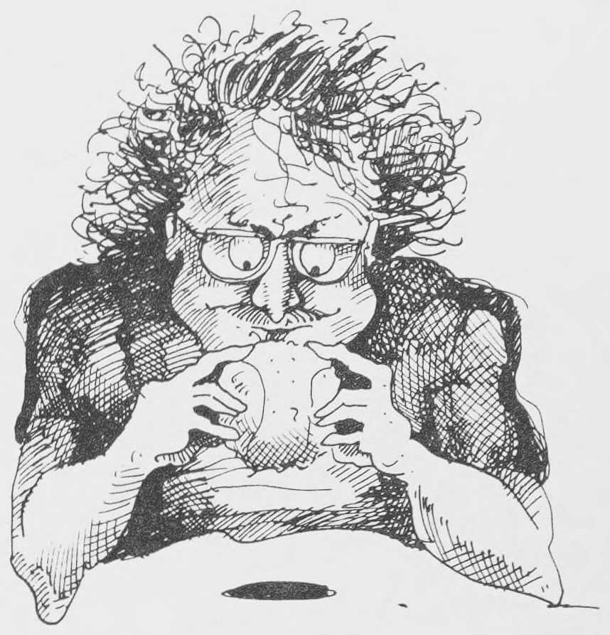
Sinh vật đang gặm nhấm — minh họa thói tự gặm nhấm bản thân.
Mở rộng khoảng chú ý trước khi bạn bắt đầu
Bài tập hạn chế thị giác—Một kỹ thuật ưa thích để tăng khả năng tập trung của tôi trước khi chơi là suy ngẫm về một vật thể duy nhất (một quả bóng tennis hoạt động hoàn hảo). Đầu tiên, tôi ngồi trong tư thế bắt chéo chân thoải mái, nhắm mắt lại và đặt một quả bóng trước mặt. Tôi mở mắt và nhìn chằm chằm vào quả bóng đủ lâu để ghi lại hình ảnh của nó. Khi tôi nhắm mắt lại, một dư ảnh thường xuất hiện ở nơi mà các nhà hòa giải gọi là "vùng con mắt thứ ba"' ở giữa trán. (Đừng tin lời tôi. Hãy thử xem!). Tôi tập trung chú ý vào hình ảnh đó cho đến khi mất đi rồi mở mắt ra. Việc này lặp đi lặp lại sáu lần. Cuối cùng, tôi mở mắt và di chuyển chúng sang trái, lên, sang phải và xuống; lặp lại sáu lần. Tôi nhắm mắt, mở chúng ra, nhìn chằm chằm vào quả bóng và lại nhắm mắt lại. Một lần nữa tôi mở mắt, di chuyển chúng lên, sang trái, xuống và sang phải; lặp lại sáu lần. Tôi nhắm mắt lại, mở ra, nhìn chằm chằm vào quả bóng, rồi nhắm mắt lại.
Máy khoan mắt ngoài sân này có một số lợi ích. Nó giúp tăng cường sự tập trung, kiểm soát mức độ sợ hãi và lo lắng, và cuối cùng nhưng không kém phần quan trọng là tăng cường cơ mắt. Khi gặp căng thẳng, cơ mắt của chúng ta nhanh chóng suy yếu; do đó, việc củng cố chúng trước khi chơi là rất có giá trị.
Hạn chế tập trung vào Âm-Dương—Để nâng cao mức độ tập trung của mình, tôi thường sử dụng ý tưởng hạn chế sự tập trung của mình vào một kích thích 'được nạp một cách tượng trưng''. Tôi có một quả bóng tennis mà tôi đã vẽ thiết kế âm dương trên đó.
Lưu ý rằng một nửa hình tròn là đặc và một nửa hình tròn trống. Cũng lưu ý rằng một dấu chấm là đặc và dấu chấm kia trống. Điều này tượng trưng cho sự cân bằng trong thế giới giữa thiện và ác, chủ động và thụ động, hòa hợp và bất hòa, v.v. Trong quần vợt, tôi dịch từ này có nghĩa là luôn có người thắng và người thua. Chúng tôi đánh một số quả bóng và bỏ lỡ một số quả bóng. Tôi nhận ra rằng những cú đánh xấu của tôi sẽ được cân bằng bởi những cú đánh tốt của tôi. Âm dương là dấu ấn rất lành mạnh để tôi khắc sâu vào ý thức. Sau này, tôi mang khái niệm này đến tòa án như một câu thần chú bằng lời nói và hình ảnh rèn luyện cả hai bán cầu não của mình. Một nhiệm vụ là giữ cho bản thân nhận thức được hình ảnh và nhiệm vụ còn lại là lặp lại âm thanh “âm” khi quả bóng nảy lên và “dương” khi nó được đánh.
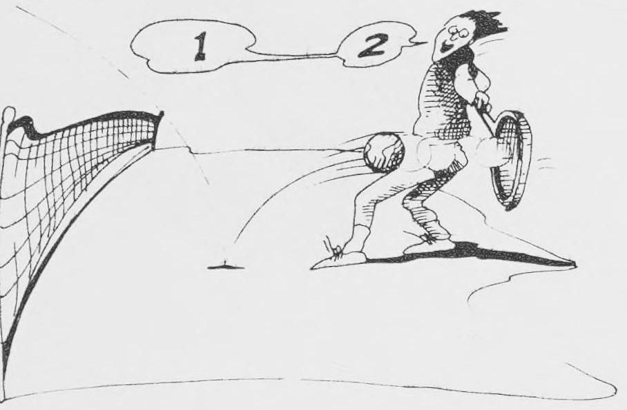
Biếm họa minh họa câu thần chú “một–hai”: “một” khi bóng nảy, “hai” khi bóng được đánh.
Kiểm soát hơi thở—Để giữ bản thân ở trạng thái quan trọng nhất ở đây và bây giờ, hãy tập trung vào hơi thở của bạn trong 50 hơi thở. Kết thúc bằng bài tập yoga sâu cuối cùng có hơi thở 'làm sạch''.
Tăng cường sự chú ý trên sân
Thần chú lặp lại ''Điểm'—''Nâng lên''—Những rung động bên trong của những từ này như những âm thanh thuần khiết thật êm dịu. Khi nhẹ nhàng yêu cầu chúng ta chú ý, chúng sẽ cải thiện sự tập trung của chúng ta vào việc tạo ra cú đánh. Do góc và độ cao của lưới, bạn phải luôn đánh từ thấp đến cao và nhấc bóng qua lưới trong các cú chạm đất. Để nhắc nhở bản thân về kỹ thuật cực kỳ quan trọng này, hãy sử dụng câu thần chú “điểm”-“nâng lên”. Khi bóng chạm vợt đối phương, hãy nói “chỉ điểm” và thu vợt của bạn lại, chỉ vào hàng rào. Khi bạn đánh bóng (điểm tiếp xúc), hãy nói “nhấc” và đánh bóng từ thấp đến cao theo động tác nâng.
Thần chú lặp lại “Một”—‘“Hai”—Chỉ cần lặp lại các từ “một”, “hai” có thể làm giảm căng thẳng và nâng cao khả năng tập trung. Hãy phối hợp các từ như sau: “‘một’’ khi bóng nảy trên sân và ‘“‘hai’’ khi bạn hoặc đối thủ của bạn đánh bóng. Tiếp tục câu thần chú “một-hai, một-hai, một-hai”. Bạn sẽ quan sát thấy khoảng thời gian tập trung của mình tăng lên đáng kể.
e¢ Lặp lại Thần chú Âm thanh và Chuyển động— Quay lại trang 18 để thảo luận về “vũ điệu” quần vợt. Khi bạn đang chơi và quả bóng đến gần bạn, hãy nói “trượt một-hai”. Chuyển động và việc lặp lại câu nói của bạn sẽ tăng thêm tính trôi chảy cho các chuyển động của bạn cũng như giúp bạn tập trung sâu hơn vào quá trình chuyển động trên sân.
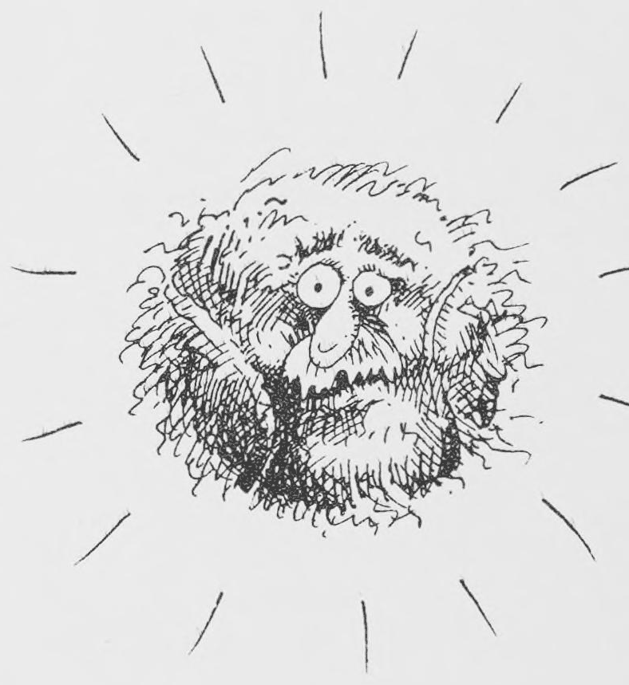
Quả bóng gai nhọn — minh họa sự căng thẳng bộc phát.
Thần chú Âm thanh Thanh tịnh—Bạn có thể thích một âm thanh hoặc giai điệu vô nghĩa làm thần chú tập trung của mình. Một số học sinh của tôi thích phát ra âm thanh khi đánh bóng, từ tiếng càu nhàu đến tiếng hét nhẹ. Các học sinh khác im lặng và lắng nghe âm thanh của quả bóng khi nó nảy lên. Ví dụ, tiếng thịch, tiếng đập mạnh, tiếng nảy hoặc tiếng boing của nó chiếm lấy sự tập trung của họ. Vẫn còn những người chơi khác điều chỉnh âm thanh hơi thở của chính họ khi họ hít vào và thở ra. Rõ ràng là có rất nhiều khả năng. Hãy tự mình thử chúng để khám phá cái nào hoặc những cái nào nâng cao trò chơi của bạn.
Quả bóng là trọng tâm
e¢ Ngoài việc Nhìn vào—Một phương pháp đơn giản để nâng cao sự tập trung và cải thiện khả năng thực hiện cú đánh của bạn là quan sát quả bóng khi bạn chơi và thực sự nhìn thấy nó. Hãy thử tách biệt nhãn trên quả bóng và xem liệu bạn có thể đọc được nhãn hiệu bạn đang chơi hay không.
Hiệu ứng hào quang—Gần đây tôi phát hiện ra rằng khả năng tập trung thị giác của tôi có thể được nâng cao đáng kể bằng cách quan sát những sợi lông tơ trên quả bóng. Tôi phát hiện ra quá trình này trong một trận đấu triển lãm khi tỷ số là 4-1 nghiêng về đối thủ của tôi. Khi tôi bắt đầu thấy thích thú với hiệu quả đáng kinh ngạc của kỹ thuật này, tôi bắt đầu chơi trò “mất trí”, có thể nói như vậy. Tôi dễ dàng giành chiến thắng với tỷ số 6-4 và đạt được thành công tương tự mỗi lần tôi cho phép mình tập trung vào quầng sáng mờ của quả bóng!
Quan sát quả bóng trong trạng thái sẵn sàng - Có lẽ một trong những lỗi lớn nhất mà một tay vợt có thể mắc phải là xuất phát muộn và sau đó chơi trong trạng thái hoảng sợ nhằm cố gắng tập hợp lại. Nếu chưa sẵn sàng đón bóng, chúng ta thường sẽ nhanh chóng đánh bóng, đánh bóng ở phía sau và chơi trò đuổi kịp. Để tránh trạng thái sẵn sàng chậm chạp này, việc tập trung vào quả bóng lại là một điều có lợi. Khi bạn tập trung vào quả bóng, bạn sẽ thấy rằng nó thường không di chuyển nhanh như bạn nghĩ. Kiến thức này giúp người chơi thư giãn và đánh một cú đánh hiệu quả hơn.
Để đạt được trạng thái sẵn sàng, tôi khuyên bạn nên thực hiện việc đánh vợt nhanh. Nếu bạn lấy lại vợt nhanh chóng, bạn sẽ ít khi phải vội vàng hay hoảng sợ. Để luyện tập, khi đối thủ đánh bóng, hãy lưu ý vị trí vợt của bạn tính đến thời điểm bóng bay qua lưới. Rất có thể, bạn sẽ thấy rằng nó đang lủng lẳng đâu đó xung quanh bạn và không ở vị trí sẵn sàng. Sau khi bạn đã nhận thức được vị trí vợt của mình, hãy tập lấy lại vị trí đó vào thời điểm bóng bay qua lưới. Câu thần chú lặp lại ''Điểm''-''Nâng'' được đề cập trước đó ở trang 48 có thể đã giúp bạn đạt được tư thế sẵn sàng nhanh chóng. Nếu vậy, bạn có thể nhận thấy rằng bạn đang đánh bóng ra trước mặt và bạn sẽ hiếm khi phải chơi quần vợt bắt bóng.
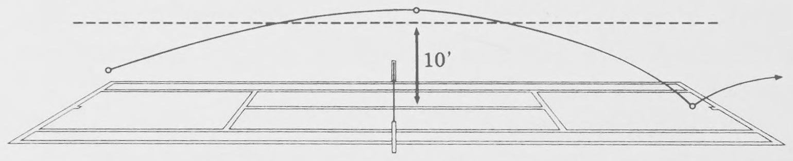
Sơ đồ quỹ đạo giao bóng: đỉnh bóng cao 10 feet rồi rơi xuống ô giao bóng.
Quan sát điểm tiếp xúc—Để nâng cao nhận thức của bạn, hãy thực hành kỷ luật quan sát điểm tiếp xúc trong khoảng một hoặc hai giây sau khi bạn đánh bóng. Bài tập này sẽ giúp bạn xác định vị trí hiện tại bạn đang đánh bóng. Nhiều cầu thủ chia sẻ sai lầm khi nhìn bóng quá lâu sau khi đánh và không nhanh chóng trở về vị trí sẵn sàng cho cú đánh trả của đối phương. Việc quan sát điểm tiếp xúc sẽ ngăn ngừa được vấn đề này. Gần đây tôi đã ghi nhận một cách làm tương tự được Billie Jean King sử dụng trong chương trình khởi động của cô ấy tại Cúp Tạp chí '' Vòng tròn Gia đình ''. Khi Billie Jean thực hiện cú lốp bóng, cô ấy sẽ nhanh chóng nhìn đi chỗ khác để tránh bị mắc kẹt trong kiểu nhìn bóng quá lâu.
Theo dõi bóng để có chiến lược — Có một huyền thoại trong quần vợt dựa trên niềm tin rằng bóng phải luôn bay thấp qua lưới, chỉ lướt qua lưới khoảng 2 đến 3 inch. Tôi đã nhận thấy, ở những người đánh đơn, trường hợp ngược lại. Theo kinh nghiệm của tôi, những quả bóng đi qua lưới từ 10 đến 15 feet thường là những cú đánh hiệu quả nhất. Lý do cho điều này là đơn giản. Bóng cao thường tạo ra độ nảy cao! Nếu bạn quan sát kỹ, bạn sẽ nhận thấy những quả bóng bay qua lưới. khoảng 10 feet thường nảy gần đường cơ sở và hiếm khi tiếp đất ngắn. Nếu bạn có thể giữ bóng nảy cao và hạ cánh gần đường cuối sân, bạn sẽ khiến đối thủ bị mắc kẹt và sẽ ngăn cản anh ta tiếp cận lưới. Nếu đối thủ của bạn bị mắc kẹt, anh ta thường sẽ đánh bạn một quả bóng ngắn trong vài cú đánh và tạo cho bạn lợi thế khi tiếp cận lưới.
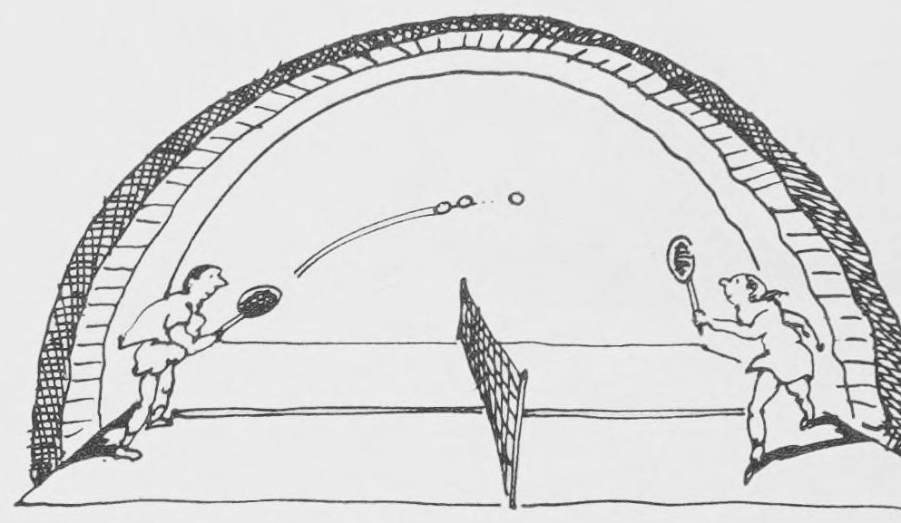
Chiếc cầu vồng — ẩn dụ cho quỹ đạo vòng cung của cú đánh.
Để thực hành bài tập này về mặt chiến lược, tôi khuyên bạn nên rèn luyện sự tập trung và nhận thức về đường bay của quả bóng. Khi quả bóng bắt đầu bay qua lưới, hãy ghi nhận trong tâm số feet hoặc inch giữa nó và lưới. Cũng lưu ý nơi bóng rơi một lần vào phần sân của đối thủ. Bài tập này đòi hỏi sự tập trung cao độ, nhưng nó sẽ khiến bạn đánh được nhiều bóng hơn và giành được nhiều điểm hơn, đây phải là một trong những mục tiêu của bạn!
Quan sát Vòm—Thiết kế Cầu vồng—Tôi thường lưu ý rằng cú chạm đất từ thấp đến cao hoàn hảo luôn tạo ra một đường cong trong đường bay của quả bóng. Đây là một cách thực hành để bổ sung cho câu thần chú “Thấp đến cao” đã đề cập trước đó.
Để nâng cao sự tập trung và tạo ra một vòm, hãy cố gắng tạo hiệu ứng cầu vồng với kiểu bay của quả bóng. Khi bạn bắt đầu thực hiện các cú chạm đất, hãy hình dung một cầu vồng uốn cong từ đường cơ sở này sang đường cơ sở khác. Bây giờ hãy cố gắng làm cho quả bóng bay qua cầu vồng. Việc sử dụng hình ảnh cụ thể này sẽ không chỉ tạo ra một đường cong trong đường bay của quả bóng mà còn giữ nó ở sâu trong phần sân của đối thủ—một quá trình mang tính chiến lược khôn ngoan.
Tránh sự đơn điệu thông qua những trải nghiệm đa dạng trên sân
Nhiều câu thần chú: Những thay đổi trong sự lặp lại—Để nâng cao khả năng tập trung của bạn và đáp ứng nhu cầu thay đổi trên sân, hãy sử dụng kết hợp các câu thần chú. Đầu tiên, hãy cho phép tâm trí của bạn tập trung vào câu thần chú ''một''' - ''hai''. Sau khoảng mười cú đánh, hãy chuyển sang câu thần chú âm thanh của bạn. Càu nhàu khi bạn đánh bóng hoặc lắng nghe sự thay đổi âm thanh trong các cú đánh khác nhau của bạn: ''vung, xoay, boing, krack''—bản thân việc phỏng vấn một quả bóng tennis đã là một nghệ thuật!
Tầm nhìn tập trung—Để nâng cao hơn nữa trải nghiệm đa dạng của bạn trên sân, hãy quan sát các biểu tượng khác nhau mà bạn tập trung vào khi ở ngoài sân. Hãy để bộ não của bạn bận tâm với nhiệm vụ tìm kiếm các ký hiệu khi quả bóng vẫn đang bay. Hãy chú ý tới những thiết kế đa dạng khi quả bóng quay. Hãy thử đọc nhãn hiệu quả bóng bạn đang chơi và/hoặc đọc số trên quả bóng. Tập trung sự chú ý của bạn vào các cạnh bên ngoài của quả bóng thay vì tìm kiếm lõi của quả bóng.
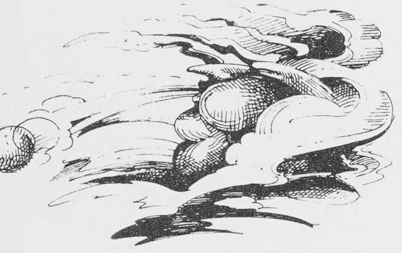
Một sinh vật đang vươn mình bật nhảy.
Thay đổi màu sắc—Quá trình thay đổi, ngay cả khi chỉ thay đổi một chút, sẽ kích hoạt lại sự chú ý của tâm trí. Trong khi chơi, hãy sử dụng quy trình này để mở rộng khoảng chú ý của bạn. Hãy hình dung màu của quả bóng là màu trắng. Khi bạn đến gần lưới, hãy hình dung màu của quả bóng là màu đỏ. Khi bạn chơi trò chơi cơ bản, hãy xem quả bóng có màu xanh lam. Điều này nghe có vẻ lạ nhưng nó có tác dụng. Chỉ cần cho phép trí tưởng tượng của bạn tuôn chảy!
Thay đổi về âm thanh—Có bằng chứng đáng kể chứng minh thực tế là khi âm lượng thay đổi, nó thường nâng cao khả năng tập trung và tập trung trở lại. Để làm cho hiệu ứng này có tác dụng với bạn, trước tiên hãy tập trung nhận thức vào âm thanh của quả bóng khi nó nảy lên. Sau đó, hãy xem liệu bạn có thể nhận thấy sự khác biệt về âm lượng khi bạn đánh phẳng so với các cú đánh hoặc cắt lát hay không.
Tăng cường sự chú ý trong cạnh tranh
Trò chơi Breeze-Gust— Khi chơi các động tác chạm đất, hãy bắt đầu sử dụng câu thần chú hít vào-thở ra của bạn. Khi bạn đã sẵn sàng tiếp cận lưới hoặc khi bạn đánh trúng người chiến thắng, hãy hình dung một luồng gió kéo theo hơi thở của bạn. Khi bạn đánh, hãy thở ra và tưởng tượng một cơn gió hoặc làn gió mạnh phát ra từ hơi thở của bạn và đẩy quả bóng thật mạnh về phía trước nó.
Năng lượng màu sắc—Để có sự biến đổi hơn nữa, hãy tập trung vào năng lượng của quả bóng. Năng lượng của quả bóng phản ứng với sức mạnh cú đánh của bạn và có thể được chuyển thành màu sắc. Ví dụ, khi bạn muốn đánh thật mạnh, hãy sử dụng trí tưởng tượng của mình để biến quả bóng thành màu đỏ.
Nâng cao kinh nghiệm đa dạng trong cuộc thi
quần vợt cạnh tranh, mức độ chú ý mở rộng có thể mang về chiếc cúp! Một trong những phương pháp tốt nhất mà tôi tìm thấy là sử dụng một câu thần chú không chỉ phá vỡ sự đơn điệu mà còn nhắc nhở tôi về tình huống chơi thực tế. Thông thường khi thi đấu, tôi đánh năm hoặc sáu cú chạm đất, tiếp cận lưới và ghi điểm. Bản thân chuyển động của trò chơi tiếp cận đã tạo ra sự khác biệt so với các cú chạm đất. Vì lý do này, câu thần chú tôi sử dụng thay đổi để nhắc nhở tôi về nhiệm vụ cạnh tranh chính xác của mình. Đây là cách nó hoạt động:
Khi bạn thực hiện các cú chạm đất, hãy sử dụng câu thần chú “Bóng”-“Kiểm soát”. Hãy nói những lời đó với chính mình ngay bây giờ. Chúng gợi lên một thông điệp về sự chính xác phải không? Trong khi chơi, khi bóng nảy lên, bạn nói “‘ball”.’ Khi bạn đánh bóng, hãy nói “control”. Tiếp tục câu thần chú: “ball’’-‘‘control,” “‘ball’’-’‘control.’’ Độ chính xác của bạn sẽ theo sau!
Bây giờ khi bạn thực hiện một cú sút sâu và tiếp cận lưới, hãy thay đổi câu thần chú của bạn thành “'đánh''-''ra ngoài.'' Nói, "'đánh'' khi bóng nảy lên và "'ra"' khi bạn đánh bóng với tốc độ. “Hit’’-“‘out’’ là câu thần chú được nhiều người chơi sử dụng để giữ cho họ chơi tích cực. Nó sẽ giúp bạn luôn trong trạng thái tinh thần phấn chấn.
Đoản mạch kẻ phá hoại bên trong bạn
Tập trung vào ý tưởng—Khi bóng không được chơi, hãy thu hẹp phần lý trí, bên trái của tâm trí bằng cách tập trung nhận thức của bạn vào điều bạn mong muốn nhất trong môn quần vợt—mục tiêu chính của bạn là gì? Ví dụ: mục tiêu của bạn có thể là những chuyển động duyên dáng (''trượt, một-hai'') hoặc độ chính xác nhất quán (''bóng''- '''điều khiển''). Tiếp tục lặp lại câu thần chú phù hợp nhất với mục tiêu của bạn. Nó gần giống như một dạng gợi ý sau thôi miên!
Âm-Dương—Đối với tôi, tôi đã phát hiện ra rằng công cụ hiệu quả nhất để hạn chế khía cạnh phân tích của mình là tập trung vào "'quả bóng âm-dương'' giữa các điểm. Tôi cầm quả bóng trong tay và để cho nhận thức của mình được tiêu hao bởi biểu tượng trên quả bóng. Điều này đưa tôi trở lại trạng thái hoàn toàn cân bằng và giữ tôi bám chặt vào hiện tại và ở đây. Khi tôi tiếp tục giành chiến thắng trong trò chơi, không ai nghĩ tôi là một kẻ điên!
Chơi từng điểm một—Có lẽ khái niệm hữu ích nhất được áp dụng trong cạnh tranh là ý tưởng chơi từng điểm một. Cách tiếp cận này không thể được đánh giá quá cao. Nó giúp bạn tập trung vào thời điểm hiện tại mà không dự đoán về tương lai hay suy ngẫm về quá khứ.
Trải nghiệm đỉnh cao
Khi bạn bắt đầu tăng khả năng chú ý, tạo cho bản thân những trải nghiệm đa dạng trong và ngoài sân đấu cũng như làm dịu quá trình đánh giá phân tích của tâm trí, bạn sẽ thường vượt qua sự mong đợi của mình, nâng cao sự nhạy cảm và cảm nhận được sự đồng nhất đặc biệt với môi trường của bạn. Chỉ cần nghĩ về những lần điều này đã xảy ra với tôi, tôi lại mỉm cười. Nhưng, cảm giác “đến nơi”? không xảy ra thông qua phép thuật. Các bài tập trong chương này là điểm khởi đầu giúp bạn tăng tốc trên con đường của mình.
Chương 6
Kỹ Thuật Thi Đấu — Giải Thích và Hình Ảnh
Techniques of Play—Explanations and Images
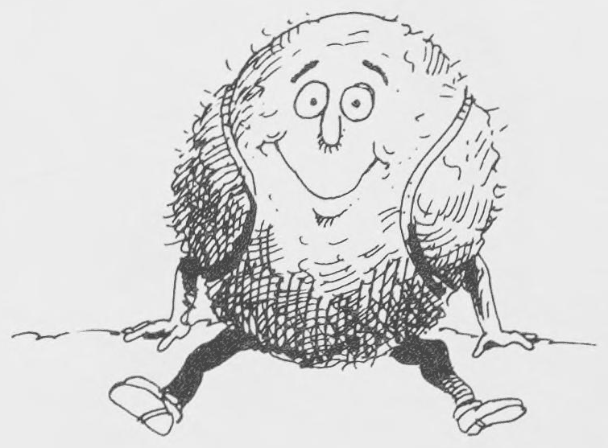
Quả bóng có vòng hào quang, mở đầu phần kỹ thuật.
PHẦN I - SẢN XUẤT ĐỘT QUỴ
Chỉ có một số điều chúng ta có thể trí tuệ hóa quá mức. Tôi có một người hàng xóm trẻ tuổi chơi bóng rổ như thể anh ấy sinh ra trên bảng. Có một nhịp điệu và dòng chảy trong chuyển động của anh ấy thật thú vị khi nhìn thấy. Nhưng có lần tôi yêu cầu anh ấy phân tích các cú đánh của mình để tôi có thể sao chép chúng, nhưng nhịp điệu và dòng chảy đã bị mất! Anh ấy trở nên bận tâm đến quá trình đến mức cơ thể anh ấy bị trói lại thành những nút thắt. Anh ta bị giằng xé giữa cảm giác trực quan về hình thức và kiến thức trí tuệ về kỹ thuật. ‘Quên nó đi, anh bạn!’’ cuối cùng anh ấy nói. ‘“Đừng hỏi tôi làm thế nào. Cứ xem đi!”
Nó làm tôi nhớ đến cuộc đối đầu của Eliza Doolittle với giáo viên dạy diễn thuyết ở tháp ngà của cô ấy trong My Fair Lady. Cô biết có một thế giới không thể diễn tả bằng lời và đã dạy anh một bài học về nó bằng một lời khẩn cầu đầy trữ tình—''Hãy cho tôi thấy lời khuyên Không tồi từ Eliza hoặc người bạn chơi bóng rổ của tôi. Nhưng có vẻ như người Mỹ là dân tộc nói nhiều. Từ kỹ thuật tình dục đến kỹ thuật thể thao, những người trong chúng ta không chắc chắn về khả năng chuyên môn bẩm sinh của mình phải trả giá đắt cho công thức ngôn từ mới nhất. Cách làm bán chạy như tôm tươi. Nhưng sự phụ thuộc vào công thức này thường khiến chúng ta không đạt được mục tiêu mong muốn một cách tự nhiên và dễ dàng khiến chúng trở nên thú vị. ‘‘Tôi có đang làm theo cách nó được mô tả không? Tôi có quên gì không? Đâu rồi cái hồi tưởng tức thời lúc tôi cần nó nhất?” Điều này chỉ mời gọi hội chứng “chiến đấu-bỏ chạy” đến thăm chúng ta vào những thời điểm hoàn toàn không thích hợp. |
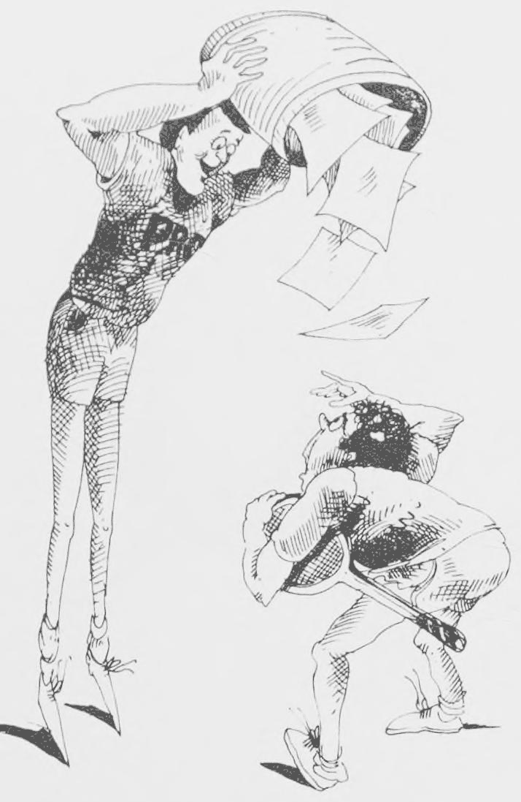
Biếm họa phản ứng “chiến–chạy” của học viên trong một buổi học truyền thống.
Bài học tennis truyền thống thường có thể gây ra những phản ứng không mong muốn tương tự. Các cuộc đối thoại giữa sinh viên và chuyên gia có ít nhất hiệu quả gấp bốn lần:
1) Rải rác những nét bản ngã giả tạo,
2) Rất nhiều hướng dẫn để phân tích,
3) Sự trợ giúp hào phóng của cảm giác 'chiến đấu-bay', với
4) Có lẽ là quá hoảng sợ (có quá nhiều hướng dẫn khác nhau cần phải thực hiện).
Hãy xem đoạn hội thoại sau đây và xem nó có hợp âm không.
"Chào Bob. Hôm nay bạn thế nào?"
“Được thôi.”
Chà, hãy đánh vài cái và xem bạn có gì. Bắn tốt. Ồ, bạn đã bỏ lỡ điều đó. Tốt. Tốt. (Cái tôi đột quỵ). Tốt. Lấy làm tiếc. Lấy làm tiếc. Tốt. Tốt. Không tệ. Chà, Bob, điều tôi thấy là bạn không đưa vợt qua lại bằng cú đánh trái tay và bạn hơi chậm khi xem bóng. Cú vô lê của bạn cũng có thể cần phải luyện tập một chút, nhưng hãy để dành việc đó cho bài học tiếp theo của bạn. Hãy thực hiện cú trái tay. (Tấn công bản ngã). ĐƯỢC RỒI. Hãy để tôi ném cho bạn một vài. Được rồi. Tốt. Tốt. Ồ! Bỏ lỡ! Không sao đâu, bạn sẽ hiểu thôi. Tốt. Không tệ. Được rồi, Bob. Này, cậu phải lấy lại cây vợt của mình. Tốt. KHÔNG! Lấy lại nó. Lấy lại nó. Lấy lại nó. ĐƯỢC RỒI. Tốt. Không, lấy lại đi. (Lệnh từ lặp đi lặp lại). ĐƯỢC RỒI. Tốt. Không, lấy lại đi. Nhìn này, Bob. Như thế này. (Cuối cùng, một trợ giúp trực quan!). ĐƯỢC RỒI. Tốt (Bản ngã đột quỵ). Thế thôi. Lấy lại nó. Bây giờ chúng ta hãy làm việc để đưa nó trở lại.”
Trong khi đó, Bob cảm thấy tức giận và căng thẳng gia tăng. Anh ta tự nhủ: “‘Thêm 20,00 đô la nữa! Tôi sẽ không bao giờ hiểu được điều này. Tôi không thể. Tôi bỏ cuộc!” (Cảm giác “bay” đang bắt đầu xuất hiện).
Không để ý đến tín hiệu phi ngôn ngữ của học sinh, người chuyên nghiệp tiếp tục bài học:
“Được rồi. ĐƯỢC RỒI. Bây giờ lấy nó xuống. Trở lại và xuống. Xuống. Tốt. Tốt đấy. Tốt đấy. Được rồi, Bob, xem bóng đi. Xem bóng. Tốt. Ôi, tệ quá. Quá tệ. Hãy lấy lại cây vợt của bạn. Xem bóng. Xem bóng. Bây giờ quay lại. Quay lại, Bob. Tốt đấy. Xoay. Đừng quên lấy lại cây vợt của bạn. Tốt. Tốt. Ồ, xin lỗi. Tốt. Không tệ, Bob. Hẹn gặp lại bạn vào tuần tới!'
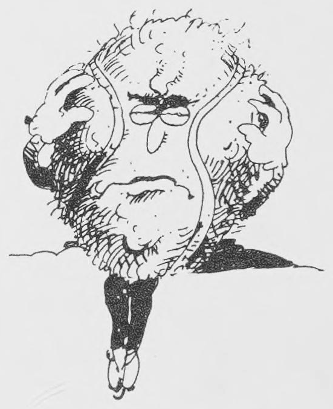
Khuôn mặt tập trung cao độ.
Phần trên giống như một đoạn ghi âm được tua lại cho học sinh tiếp theo:
“Chào, Sue. Bạn hôm nay thế nào?"
"Khỏe."
“Chà, hãy đánh vài cái và xem có chuyện gì…” Sau một bài học như vậy, học sinh sẽ bước đi với những cú đánh của cái tôi mà anh ta thực sự không coi trọng (anh ta biết mình vẫn không thể chơi), đầu anh ta vang lên một loạt từ mà anh ta cố gắng diễn đạt theo những hướng dẫn phù hợp và cảm giác tức giận rằng anh ta dường như không thể đánh bóng theo cách mà anh ta phải làm. Ngay cả khi anh ta lấy lại được cây vợt của mình, rất có thể anh ta sẽ sớm quay trở lại lối chơi cũ vì anh ta chưa học được cách di chuyển đến một quả bóng được đánh ra khỏi vị trí đứng của mình. Bob có thể sẽ hoảng sợ khi anh ta cố gắng xoay người, đưa vợt qua lại, quan sát bóng và di chuyển—tất cả cùng một lúc.
Rào cản học tập chính với cách dạy truyền thống
Quá nhiều từ để mổ xẻ và phân tích. Trong một trò chơi như quần vợt, nơi các hành động phản xạ nhanh chóng là rất quan trọng, người chơi sàng lọc các hướng dẫn dài dòng sẽ dành nhiều thời gian để dọn những quả bóng bị trượt ra khỏi hàng rào! Đối với những người chơi nâng cao, mức độ phức tạp chỉ tăng lên. Bây giờ hướng dẫn sẽ giải thích các lý thuyết về xoáy lên, giao bóng và các cú sút cắt lát.
Áp lực phải thực hiện tạo ra hội chứng “‘chiến đấu’’-“‘bay’’ phản tác dụng. Rõ ràng, sợ hãi, lo lắng và tức giận là những cảm xúc không thực sự có lợi cho việc học tập! Nếu một người chơi muốn học về cú đánh trái tay, thông thường anh ta sẽ sợ cú đánh. Khi người chơi chuyên nghiệp đánh vào cú đánh yếu, nhịp tim của người chơi đã tăng vọt. Nếu anh ta trượt, sự tức giận và lo lắng sẽ ập đến. "'Không thể tin được. Tôi lại bỏ lỡ nó rồi!'' Sau nhiều lần trượt, hình ảnh bản thân của anh ta bị đe dọa. Bàn tay anh ta trở nên nhớp nháp, các cơ căng cứng. Anh ta thậm chí có thể chơi tệ hơn trước khi tập! Hình ảnh bản thân của một cầu thủ có thể cản trở quá trình học tập. Giả sử một người mới tập chơi có điều kiện để tin rằng anh ta không phối hợp được hoặc rằng anh ta không có tiềm năng chơi các môn thể thao cạnh tranh, bạn nghĩ điều gì sẽ xảy ra? Bây giờ, bạn nên có một ý tưởng khá công bằng. Rất có thể, anh ấy sẽ tự đấu tranh với hàng loạt câu “không thể” trong các bài học của mình và anh ấy sẽ không thực sự vội vàng chấp nhận rủi ro. Những cầu thủ như vậy thường không phát huy hết tiềm năng thực sự của họ.
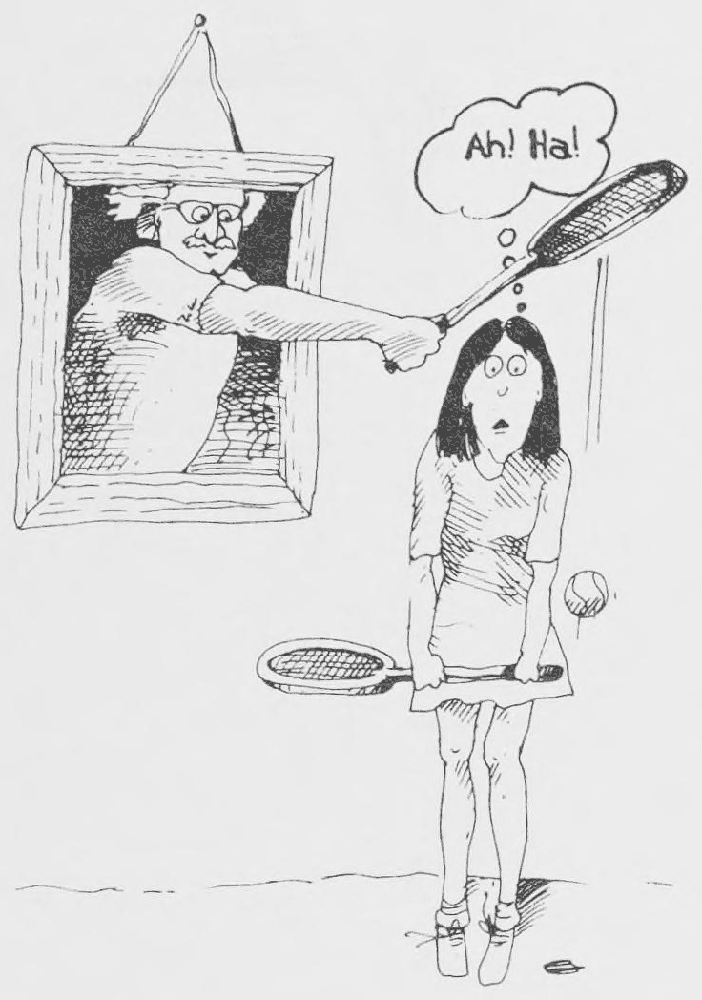
Người chơi đang trò chuyện với chính mình.
Nhiều từ hơn, những lời giải thích hay hơn hoặc những nét vẽ giả tạo của cái tôi có thể gây ra sự điều chỉnh trong việc tạo ra nét vẽ. Nhưng theo kinh nghiệm của tôi, tôi nhận thấy rằng những điều chỉnh như vậy thường mất đi nhanh hơn là đạt được. Người chơi thường quay lại cú đánh cũ vì họ không thể tin tưởng vào bản thân hoặc đột nhiên bị suy sụp tinh thần trong trận đấu. Tuy nhiên, các kỹ thuật hoặc sự điều chỉnh thành thạo thông qua Định tâm quần vợt sẽ dễ dàng được người chơi tiếp thu. Tôi đã phát triển phong cách giảng dạy của mình để giúp học viên trải nghiệm các động tác đánh và định vị cơ thể phù hợp một cách nhanh chóng và dễ dàng trong khi vẫn cảm thấy vui vẻ trong quá trình này. Cả trải nghiệm và niềm vui đều có xu hướng ghi nhớ trải nghiệm học tập lâu dài hơn trong trí nhớ của người chơi. Trong môn Định tâm quần vợt, tôi dạy các cú đánh một cách tổng thể, chuyển động trôi chảy thông qua hình ảnh.
Nền tảng của việc làm chủ đột quỵ
Được rồi, tôi thừa nhận điều đó. Tại phòng khám Trung tâm Quần vợt của tôi, tôi đưa ra những lời giải thích cơ bản về các cú đánh. Xét về mặt thực tế thì không thể không làm vậy. "Làm thế nào để' cơ chế của những cú đánh đáng tin cậy, hiệu quả rất cần thiết cho việc học. Ngay cả cái gọi là "tự nhiên" trong quần vợt cũng không có những phản ứng và phản xạ bẩm sinh giúp chúng thực hiện những cú giao bóng, đánh vô lê và trả bóng hoàn hảo. Tuy nhiên, chính nhờ những hình ảnh mà tôi đã nghĩ ra và lồng ghép vào các bài học của mình mà tất cả học sinh của tôi đều tiến bộ và đạt được những tiến bộ đáng ngạc nhiên. Khi các em kết hợp những hình ảnh này vào lối chơi của mình, tôi đã ghi nhận một câu "À! Ha!" gần như phổ biến: "À! Ha!" kinh nghiệm. Cứ như thể họ đột nhiên phát hiện ra cách cơ thể, quả bóng và cây vợt “'hoạt động''—ý tôi là thực sự hoạt động nên những cú đánh tốt nhất của họ cứ diễn ra một cách tự nhiên.'""cho tôi xem!" của Eliza Doolittle rất có ý nghĩa.
Để thành thạo nét vẽ, điều quan trọng là phải có cả phần giải thích về các thành phần của nét vẽ cũng như hình ảnh truyền tải chuyển động của nét vẽ đó. Lời giải thích sẽ phục vụ bạn khi bạn thực hành trong khi hình ảnh giúp gắn kết các lời giải thích với nhau trong thực tế và trong các tình huống cạnh tranh mà yếu tố thời gian khiến việc phân tích suy nghĩ phức tạp trở nên bất khả thi.
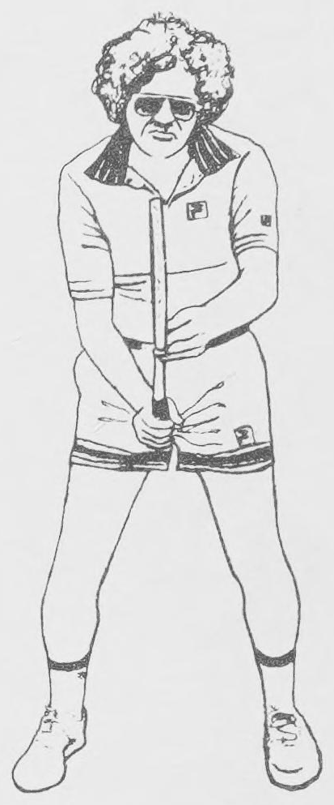
Tư thế sẵn sàng: hai tay cầm vợt trước thân, thăng bằng và cảnh giác.
Nếu bạn có bất kỳ kỳ vọng nào đối với trò chơi của mình thì những cú đánh ổn định, đáng tin cậy là yếu tố quan trọng cho sự thành công của bạn. Sự nhấn mạnh của tôi vào việc tạo ra cú đánh trong chương này là giúp bạn vượt qua những mong đợi của mình – để đạt được những trải nghiệm quần vợt đỉnh cao. Vì vậy, chúng ta hãy đi vào những điều cơ bản: (1) cơ chế “làm thế nào” của các cú đánh chính trong quần vợt và (2) các hình ảnh gắn kết chúng lại với nhau.
Vị trí sẵn sàng
Quần vợt, như chúng tôi đã luôn lưu ý, là một trò chơi mạnh mẽ, có nhịp độ nhanh. Vì vậy, thế đứng cơ bản, Vị trí Sẵn sàng, gần như hiển nhiên. Nó được thiết kế để giữ cho cơ thể bạn cân bằng, cảnh giác và sẵn sàng phản ứng tức thì với cú đánh của đối thủ. Cơ chế là: Đối mặt với lưới trong tư thế cong đầu gối. Giữ hai chân dang rộng, rộng bằng vai, phân bổ trọng lượng đều. Sử dụng cách cầm vợt thuận tay (tiếp theo trong lịch trình), giữ vợt của bạn ở tư thế sẵn sàng ở phía trước cơ thể và tay còn lại của bạn ở cổ vợt để ổn định vợt ở một góc hướng lên 45 độ.
Tôi thấy không cần thiết phải nghĩ ra một hình ảnh cho lập trường này. Đó thực sự là hình ảnh của riêng nó. Hãy tưởng tượng bạn đang cầm vợt trong tư thế sẵn sàng chủ động và thận trọng. Bạn thậm chí có thể không cần thực hiện bất kỳ điều chỉnh nào để đạt được mô tả ở trên.
Cách cầm vợt thuận tay: Một lời giải thích
Hãy giữ tay cầm vợt của bạn ở tư thế “bắt tay”. Mở rộng ngón trỏ của bạn theo kiểu cò súng và đưa ngón cái của bạn quanh báng cầm để nằm cạnh ngón giữa.
Cách cầm vợt thuận tay: Thông qua hình ảnh
Rõ ràng, toàn bộ thành tích chơi tennis của bạn phụ thuộc vào cách bạn điều khiển vợt của mình. Bạn muốn có thể tạo ra sức mạnh tối đa từ các cú đánh của mình với lực căng tối thiểu trên cánh tay. Điều này đạt được bằng cách cầm nắm thích hợp. Hình ảnh mà tôi thấy thành công nhất để tạo ra một cách cầm vợt hiệu quả là nắm cây vợt của bạn như thể bạn sắp bắt tay với nó. Bạn muốn giữ nó chắc chắn nhưng không quá khó. Bạn có thể đạt được cảm giác về áp lực thích hợp bằng cách tưởng tượng rằng tay cầm là một quả trứng trong tay mà bạn muốn cầm nhưng không muốn bóp nát. Bạn chỉ muốn giữ nó chắc chắn và an toàn.
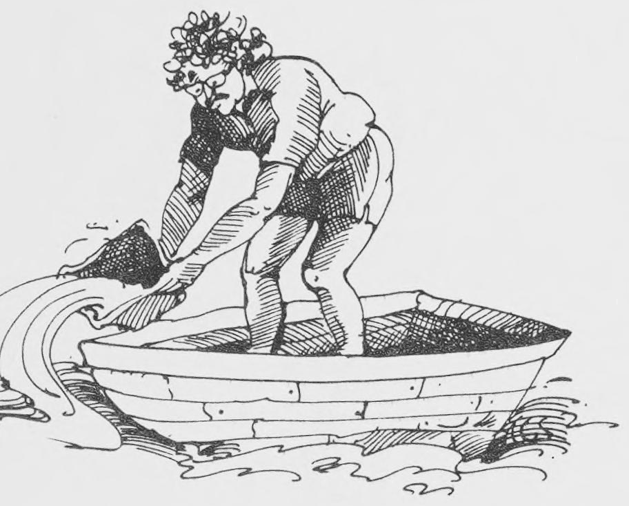
Người chơi chèo thuyền — ẩn dụ cho sự kiên nhẫn.
Cú thuận tay: Một lời giải thích
Cú thuận tay bắt đầu từ vị trí sẵn sàng. Để thực hiện nó, hãy xoay bàn chân của bạn trong khi xoay người về phía lưới. Khi bạn xoay người, hãy lấy vợt của bạn lại và hướng nó vào hàng rào. Mở rộng bàn tay còn lại của bạn tới quả bóng đang tới khi bạn xoay người vào lưới. Bước chân trước về phía cột lưới ngay sau khi bóng nảy về phía sân của bạn. Đánh bóng ra phía trước cơ thể, tiếp xúc ở phía trước chân trụ. Đầu vợt phải ở phía trên cổ tay của bạn một chút và cánh tay đánh phải ở thấp. Việc theo dõi hoàn chỉnh là rất quan trọng để có được vị trí thuận tay chính xác. Sau khi tiếp bóng, hãy cầm vợt theo chuyển động nâng lên bằng tay tự do duỗi thẳng và kết thúc cú đánh hơi qua mắt bạn. Trọng lượng bây giờ dồn vào bàn chân trước với ngón chân sau đặt trên mặt đất để giữ thăng bằng.
Cú thuận tay: Thông qua hình ảnh
Đọc qua lời giải thích ở trên và di chuyển qua nó. Bây giờ, tôi sẽ kết hợp các yếu tố lại với nhau thành một hình ảnh có thể dùng làm “lớp kem” trên chiếc bánh biểu diễn của bạn. Hình ảnh hiệu quả này tự nó đã phát triển theo từng bước. Tôi và một chuyên gia giảng dạy khác đang trình diễn cách học bằng hình ảnh. Bob bắt đầu phần trình diễn bằng cách nói với khán giả của chúng tôi: “Hãy tưởng tượng rằng bạn đang dùng xô nhấc nước ra khỏi thuyền khi bạn tiếp xúc với quả bóng”. Hãy nhớ chuyển động đó – giống như nâng nước ra khỏi thuyền.”
Sau đó chúng tôi đánh được hai mươi hoặc ba mươi quả bóng. Tôi nhận thấy rằng mặc dù có hình ảnh đẹp như vậy nhưng Bob lại không đưa vợt xuống đủ xa. Vì thế tôi gọi anh ấy: “Nước đang dâng lên nhanh lắm, Bob! Đổ nước đi! Hãy chạm tới đáy thuyền.”’
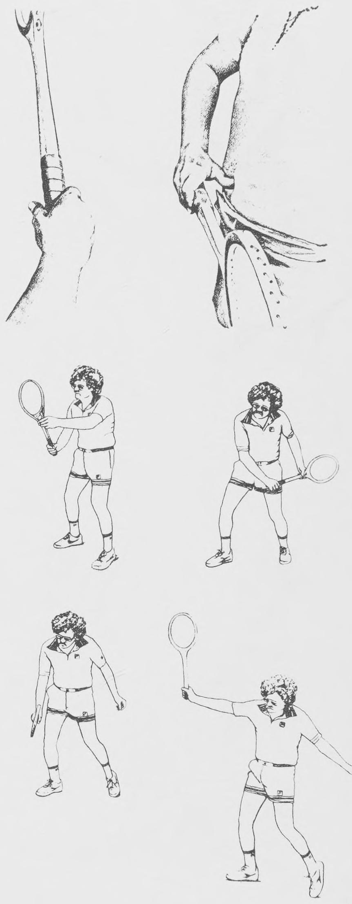
Sáu hình minh họa cách cầm vợt và các tư thế đứng khác nhau.
Trong năm cú đánh, thời gian và độ chính xác của cú thuận tay của anh ấy là hoàn hảo. Anh ấy đưa vợt xuống thấp và nâng bóng từ thấp lên cao với một cú đánh dài. Khán giả của chúng tôi vẫn nghĩ rằng chúng tôi đã lên kế hoạch cho cuộc đối thoại đó. Nó đã chứng minh rằng hình ảnh không cần phải tĩnh. Chúng có thể được thiết kế riêng để làm việc cho
Cách cầm trái tay
Từ vị trí ""bắt tay" cơ bản mà bạn đã sử dụng trong cú đánh thuận tay, bạn có thể dễ dàng chuyển sang cách cầm vợt trái tay. Tất cả những gì bạn làm là xoay bàn tay của mình 1/4 vòng sang trái. Đặt vợt ngang bụng và xoay nhẹ bàn tay để có thể đặt ngón tay cái vào rốn. Điểm tham chiếu này trên cơ thể bạn giúp bạn dễ dàng điều chỉnh tay cầm thích hợp để có cú đánh trái tay mạnh mẽ và chính xác. Không cần giải thích hay hình ảnh thêm.
Cú trái tay: Một lời giải thích
Cú trái tay gây rắc rối cho nhiều người chơi hơn cú thuận tay; tuy nhiên, cơ chế không khác nhau nhiều. Bắt đầu từ vị trí sẵn sàng, xoay chân trong khi xoay người về phía lưới. Để thực hiện một cú backswing hoàn toàn, hãy đưa vợt của bạn về phía sau và hướng nó vào hàng rào. Dùng tay còn lại kéo vợt về vùng cổ họng. Kéo cho đến khi ngón cái của bàn tay đánh chạm vào đùi. Ngay sau khi bóng nảy về phía lưới của bạn, hãy bước ngang cơ thể bằng chân trước về phía cột lưới. Để kiểm soát bóng, hãy tiếp xúc ở phía trước chân dẫn bóng để nâng bóng từ thấp lên cao. Khi bạn di chuyển vợt về phía trước, hãy thả tay còn lại ra khỏi cổ vợt và di chuyển nó về phía hàng rào, để cơ thể bạn sẽ được cân bằng khi bạn đánh vào cú đánh của mình.
Cú trái tay: Thông qua hình ảnh
Hình ảnh thành công nhất mà tôi tìm thấy cho cú trái tay là hãy tưởng tượng rằng bạn đang rút kiếm. Để sử dụng hình ảnh này, đầu tiên hãy cầm vợt ngang hông. Sau đó, khi bạn đưa vợt về phía trước để đón bóng, hãy hình dung rằng bạn đang rút một thanh kiếm ra khỏi bao. Khi bạn đưa cánh tay vợt của mình về phía trước, hãy thả tay còn lại ra và hướng cánh tay còn lại của bạn về phía hàng rào để giữ thăng bằng.
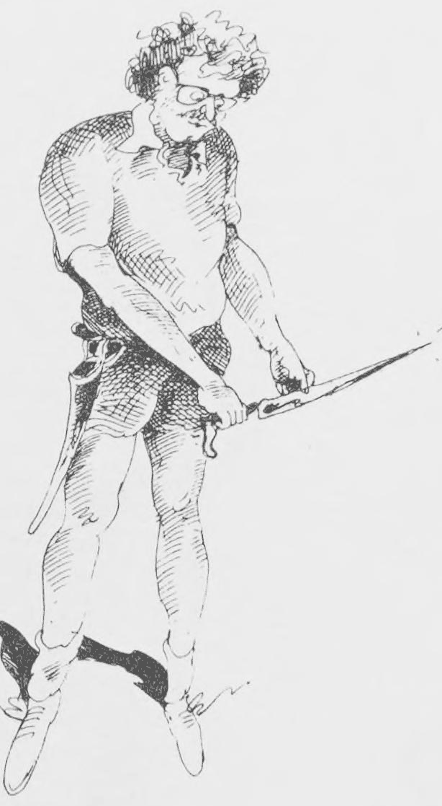
Minh họa động tác vung vợt vẽ thành vòng (loop) cho cú thuận tay và trái tay.
Đối với yêu cầu cú đánh từ thấp đến cao, hãy tưởng tượng rằng bạn đang rút kiếm vào cổ họng của kẻ tấn công. Hãy hình dung kẻ tấn công này ngay trước mặt bạn và mục tiêu của bạn ở ngang tầm mắt. Hình ảnh này sẽ khuyến khích bạn (1) cầm vợt đến ngang hông và (2) sau đó thực hiện theo tầm mắt. Nó cũng sẽ ngăn cản bạn thực hiện những cú vung vợt ngập ngừng hoặc vung quá xa xung quanh cơ thể. Rõ ràng là bạn không muốn để lại bất kỳ sơ hở nào cho kẻ tấn công có thể tấn công bạn trước!
Khi làm việc với những cầu thủ trẻ hơn, tôi nhận thấy hình ảnh ném đĩa bay là vô giá. Để thực hành hình ảnh này ở cú đánh trái tay, hãy tưởng tượng bạn đang cầm một chiếc đĩa bay vào hông khi quả bóng đến gần bạn. Khi bạn vung về phía trước, hãy nhấc chiếc đĩa bay được hình dung lên trên lưới. Lưu ý rằng bạn phải giữ vững cổ tay trong bài tập đặc biệt này.
Đối với cú đánh trái tay bằng hai tay, hình ảnh xô nước lại phát huy tác dụng. Nhớ nhấc xô nước khỏi đáy thuyền.
Một hình ảnh thuận tay và trái tay bổ sung
Một cách khác để ghi nhớ một nét vẽ trôi chảy trong tâm trí bạn là coi nó như một hình tượng nghệ thuật hoặc một vòng lặp. Bạn có thể sử dụng các vòng lặp đó làm mẫu trông giống như hình minh họa sau. Chuyển động giật trông như thế này đối với cú thuận tay Không và như thế này đối với cú đánh trái tay Sa
Từ đất tới trời—Thấp đến cao
Một hình ảnh khác mà bạn có thể muốn áp dụng là ý tưởng “mặt đất hướng lên trời, thấp lên cao”. Khi bạn đánh cú thuận tay hoặc trái tay, lặp lại, “mặt đất hướng trời, thấp lên cao”’ và đánh bóng theo cách tương tự.
Vì những cụm từ và hình ảnh này thú vị hơn những cách giải thích cơ học thông thường về nét vẽ nên cách tiếp cận của bạn với chúng sẽ có xu hướng thoải mái hơn. Điều này một cách tự nhiên giúp bạn linh hoạt, thở và mở rộng cơ bắp.
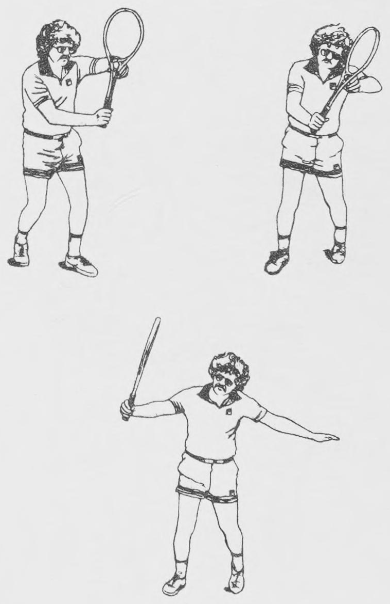
Quân cờ vua và hai người chơi — chiến lược là một ván cờ.
Tay cầm bóng chuyền: Một lời giải thích
Hãy chắc chắn rằng bạn không sử dụng cách cầm vợt thuận tay cho cú vô lê trái tay. Một cách dễ dàng để bảo vệ khỏi điều này xảy ra là luôn sử dụng cách cầm vợt trái tay cho cả cú vô lê thuận tay và trái tay.
Cú vô lê thuận tay: Một lời giải thích
Cú vô lê bắt đầu từ vị trí sẵn sàng. Định vị cơ thể của bạn khoảng một khoảng cách vợt kéo dài và hai bước lùi so với lưới — hoặc ở giữa đường giao bóng và lưới nếu bạn là người chơi ở cấp độ trung bình. Cú vô lê bao gồm sự phối hợp trong tích tắc của các bước sau:
Xoay người sang một bên, xoay người về phía lưới và đặt vợt ra trước mặt bạn. Mông vợt phải hướng về chân trái nếu bạn thuận tay phải và hướng về chân phải nếu bạn thuận tay trái. Mở rộng bàn tay còn lại của bạn tới quả bóng đang tới. Sau đó, bước ngang qua cơ thể và chặn đường đi của quả bóng bằng đầu vợt. Sự tiếp xúc được thực hiện ở phía trước cơ thể của bạn khi bạn chuyển hướng bóng vào phần sân sau của đối thủ. Giữ đầu vợt cao và đánh bóng ngang tầm mắt. Thực hiện theo bằng một cú đánh ngắn và cổ tay chắc chắn, sau đó quay trở lại vị trí sẵn sàng.
Cú vô lê trái tay: Một lời giải thích
Xoay người sang một bên, xoay người về phía lưới và đặt vợt ra trước mặt bạn. Lần này, mông vợt phải hướng vào chân phải nếu bạn thuận tay phải và hướng về chân trái nếu bạn thuận tay trái. Khi bạn xoay người sang lưới, hãy giữ tay trái trên cổ vợt với khuỷu tay trái hướng về phía hàng rào và cánh tay song song với sân. Bước ngang cơ thể để chặn đường đi của quả bóng. Một lần nữa, sự tiếp xúc diễn ra ở phía trước cơ thể của bạn khi bạn nhắm bóng vào phần sân sau của đối thủ. Đầu vợt của bạn ngẩng cao, đánh bóng ngang tầm mắt và thực hiện cú đánh ngắn và cổ tay chắc chắn. Trở lại vị trí sẵn sàng ngay lập tức.
Để đánh cú vô lê thuận tay hoặc trái tay thấp, hãy uốn cong đầu gối của bạn và đánh ngang tầm mắt. Đôi khi bạn có thể phải mở mặt vợt của mình ra. Để có những cú đánh tấn công hiệu quả nhất, hãy cố gắng đánh những cú vô lê ngang tầm mắt ngay cả với những cú đánh khó nằm dưới [| Pa\ e Cú vô lê là một cú đánh mạnh mẽ. Khi bạn \\ đang ở trên mạng, bạn đã cam kết. Vì vậy, đánh tất cả ra! Cú đánh YP W tốt nhất của bạn là đánh sâu hoặc theo một góc. Luôn cố gắng | “| \\ và chặn quả bóng. Hãy tiếp cận nó trước khi nó đến chỗ bạn! \ \ The Volley: Through Images
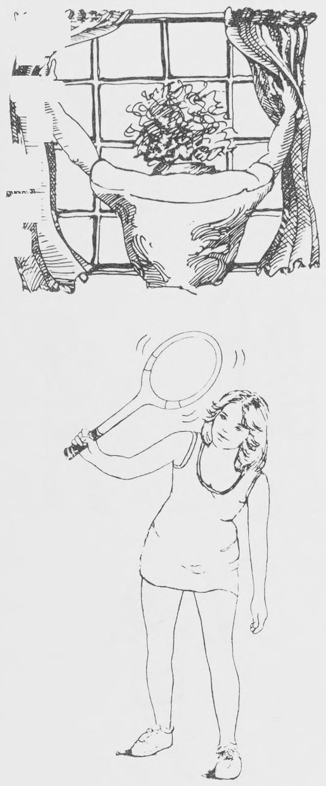
Người chơi nhìn từ phía sau, chuẩn bị giao bóng.
tN e Để nhắc nhở bản thân về việc đánh bóng ngang tầm mắt, hãy hình dung rằng bạn đang đánh bóng bằng mắt. Trong thực tế, nó không lạ như người ta tưởng.
Cú vô lê là một động tác đấm (không phải vung). Tôi đã từng dạy một cầu thủ gặp rắc rối với khái niệm này. Do đó, cô ấy đánh bóng ra phía sau cơ thể thay vì ra phía trước. Tôi yêu cầu cô ấy tưởng tượng ka : cô ấy đang gõ cửa. '' Đưa tay ra trước mặt bạn, tôi a .it -\ sei( nắm tay và gõ cửa," tôi đề nghị. Kể từ đó, etS'
cánh cửa đã mở cho trò chơi của cô ấy.
lại
Ae hay trái tay thì mình thấy hình ảnh sau ik cực kỳ hữu ích. Đơn giản chỉ cần tưởng tượng rằng bạn là pulllae
ER đang bị mù. Chuyển động của bạn là đưa tay ra, nắm lấy dây kéo của rèm \S và kéo rèm đó xuống.
4 ¢ Để thực hiện cú vô lê trái tay, hãy quay người về phía lưới và tưởng tượng rằng điều đầu tiên bạn đang mở rèm cửa sổ vào buổi sáng. Động tác đưa tay lên và “tách rèm trượt” khiến cánh tay đánh của bạn di chuyển về phía bóng trong khi cánh tay còn lại hướng về phía hàng rào.
Một số người chơi vuốt bóng thuận tay hoặc trái tay bằng chuyển động gạt nước trên kính chắn gió, xoay cổ tay của họ từ bên này sang bên kia. Nếu bạn hiện đang gặp rắc rối với phản xạ "'gạt nước kính chắn gió'', bạn nhận ra rằng bạn không có được sức mạnh, khả năng kiểm soát hoặc độ chính xác phù hợp từ cú đánh của mình. Để khắc phục vấn đề này, hãy hình dung rằng bạn đang đấm bóng ở phía thuận tay và đập bóng ở phía trái tay. Nếu điều này không hiệu quả với bạn, hãy tập đánh bóng ở các phía khác nhau của dây vợt. Để thực hành bài tập này, hãy gắn nhãn mặt vợt của bạn là Bên I và Bên NÓ. Ở bên thuận tay, hãy đánh bóng bằng Bên Tôi và người thuận tay đánh bóng bằng Mặt II.
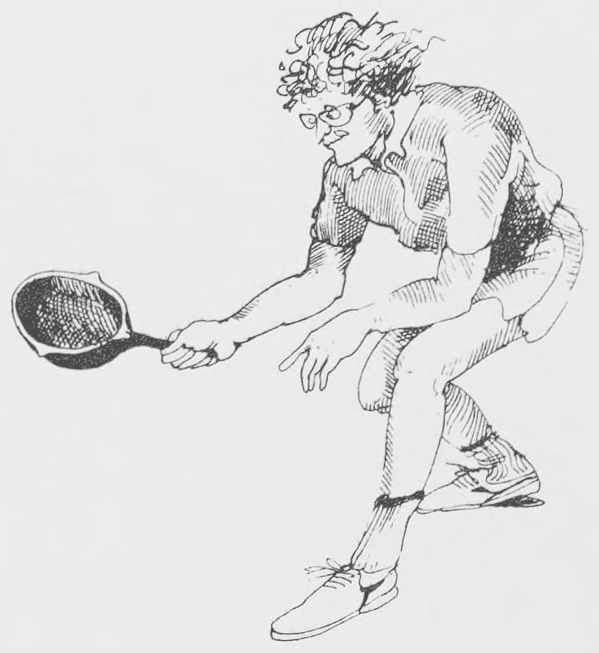
Cú vô-lê thấp: hạ thấp người, vợt như chiếc chảo rán đặt trên bàn.
Riot Tôi thường thấy rằng người chơi sẽ tung ra một cú vô lê nếu nó đến đúng chỗ họ nhưng thường bỏ lỡ những cú đánh cần phải di chuyển. Để đạt được cú vô lê, bạn phải duỗi người và duỗi người. Hãy tưởng tượng rằng bạn đang giúp một người bạn thoát khỏi đường đi của một chiếc ô tô đang chuyển động nhanh. Nhanh chóng đưa tay ra và đẩy anh ta. Phản ứng ngay lập tức—nếu không bạn của bạn sẽ bị đánh.
Để đánh một cú vô lê thấp là một quá trình đơn giản khác nếu bạn sử dụng trí tưởng tượng của mình. Mary Grace, huấn luyện viên tại Đại học Santa Clara, đã cho tôi một hình ảnh vừa hiệu quả vừa khác thường.
“Đừng tưởng tượng cây vợt của tôi như một chiếc chảo rán,” cô nói. "Hãy tưởng tượng rằng bạn đang phục vụ bữa tối trên một chiếc chảo rán. Đặt chảo rán lên bàn và ngồi xuống." Chúng tôi đã thử và nó đã thành công! Bây giờ tôi sử dụng hình ảnh này ở tất cả các xưởng và phòng khám của mình.
Nắm bắt dịch vụ: Giải thích
Giả sử cách cầm vợt trái tay. Nắm vợt của bạn càng xa đến cuối cán vợt càng tốt.
Phục vụ: Một lời giải thích
Nếu có lời giải thích nào nói lên sức mạnh của việc học bằng hình ảnh thì lời giải thích này đúng. Trong tất cả các 'cách thực hiện' cơ học, phần này là dài nhất và phức tạp nhất. Tôi sẽ chia nó thành bốn phần chính. (1) Thế đứng ¢ Nằm nghiêng về phía lưới với chân phải song song với đường cuối sân và bàn chân trái hướng một góc 45 độ so với cột lưới. Giữ vợt ở phía trước cơ thể với vợt và bóng được giữ cố định cùng một chỗ. Dồn trọng lượng của bạn lên bàn chân sau. (2) Động tác vung vợt ra sau và tung bóng ® Để vợt rơi sang một bên khi nó chạm vào hông của bạn. Đồng thời, để tay tung bóng rơi xuống đùi dẫn đầu, vợt sẽ tiếp tục chuyển động về phía sau cho đến khi khuỷu tay uốn cong và đưa nó vào vị trí gãi lưng với đầu vợt gần với vai đối diện. Ở vị trí cào sau, khuỷu tay hướng về phía hàng rào phía sau. bóng ở điểm bay cao nhất trước khi nó bắt đầu rơi. Tiếp xúc bóng ở vị trí khoảng 1 giờ, hơi chếch về phía trước và sang bên phải của cơ thể. (4) Theo dõi e Sau khi tiếp xúc, vợt nhẹ nhàng đi theo hướng ra ngoài và hướng xuống ở điểm cuối ở hoặc gần phía đối diện bằng hông. buộc bóng xuống sân. Bàn chân sau phải vượt qua đường biên ngang ngay sau khi bạn tiếp xúc với bóng.
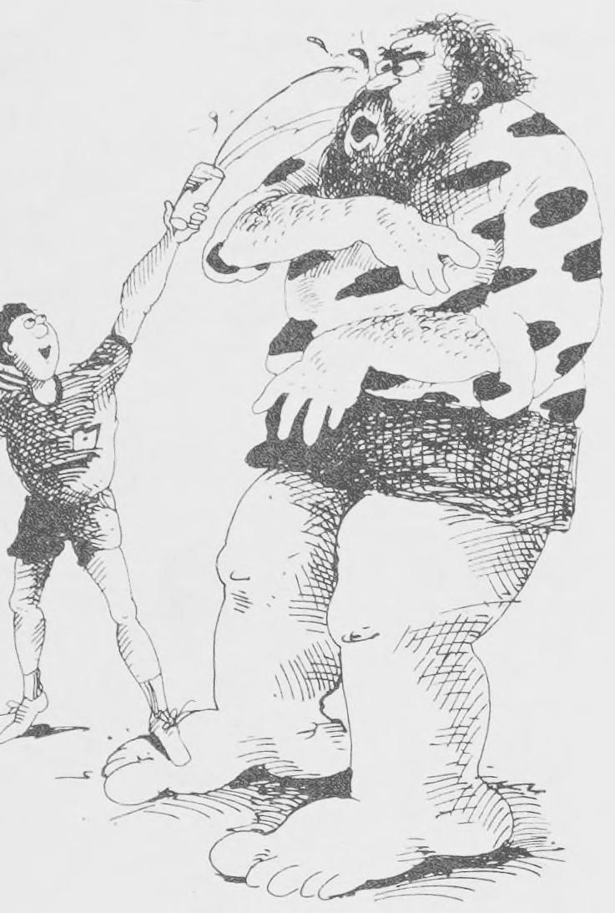
Biếm họa minh họa phần “Giao bóng qua hình ảnh”.
Phục vụ: Thông qua hình ảnh
Tất nhiên, để có một cú giao bóng mượt mà, mạnh mẽ, bạn sẽ không phải trải qua những bước này giống như một món đồ chơi lên dây cót cơ khí. Cú giao bóng và tung bóng diễn ra như một chuyển động. Hình ảnh của tôi có thể không có giá trị bằng hàng ngàn câu tục ngữ, nhưng nó cứu được hàng trăm; và, kết quả thật tuyệt vời! Những hình ảnh tôi sử dụng để dạy chuyển động giao bóng chắc chắn không phải là hình ảnh thông thường. Nhiều người chơi với những cú giao bóng bất khả chiến bại đã bắt đầu thực hiện các chuyển động rất hiệu quả với họ giữa những trận cười khúc khích. ĐƯỢC RỒI. Hãy xem bạn làm như thế nào. Hãy tưởng tượng bạn đang ở tư thế chờ đợi. Bây giờ hãy hình dung rằng bạn đang gãi lưng bằng dụng cụ gãi lưng. Với bàn tay còn lại của bạn, hãy ném một cốc nước lên không trung vào mặt một người khổng lồ đang ở trước mặt bạn. Từ tư thế gãi lưng, xem bạn có thể đánh vào mũi gã khổng lồ không rồi dùng chân sau tiến về phía trước để giẫm lên ngón chân gã. Hình minh họa đi kèm sẽ thông qua hình dung này tại một trong các phòng khám của tôi. Tôi luôn ngạc nhiên trước những kết quả thành công liên tục.
Dịch vụ hoàn trả: Giải thích
Việc trả giao bóng là một chuyển động chặn hoặc đấm. Nếu bạn chặn hoặc đấm cú đánh của mình, quả bóng sẽ tự quay trở lại. Giữ mặt vợt của bạn mở và ở phía trước bạn và chỉ cần chặn các cú trả giao bóng của bạn.
Dịch vụ hoàn trả: Một hình ảnh
Hãy hình dung rằng bạn đang đấm bóng. Bạn có thể muốn nói, ""'Nảy lên!'' khi bóng nảy lên và ""Đấm!"' khi bạn tiếp xúc với bóng. Gợi ý được tải này sẽ nhắc nhở bạn rằng cú trả giao bóng là một cú đấm chứ không phải một chuyển động vung vợt.
Tay cầm trên cao: Giải thích
Đơn giản chỉ cần giả sử cách nắm dịch vụ đã được giải thích trước đó.
Chi phí chung: Giải thích
Cú đánh trên đầu có chuyển động tương tự như cú giao bóng. Sự khác biệt duy nhất là bạn không ném bóng của chính mình và bạn không đứng một chỗ. Chìa khóa để đánh từ trên cao là tìm vị trí của bạn trên sân. Thực hành điều này bằng cách nhờ một người bạn ném thùy cho bạn trong khi bạn di chuyển bên dưới họ. Trong khi chú ý đến động tác bằng chân của bạn, hãy cố gắng bắt bóng sáu hoặc bảy lần trước khi bạn cố gắng đánh nó. Lặp lại quá trình này bằng cách bắt bóng bằng tay trái trong khi đưa vợt ra sau lưng. Bây giờ hãy chạy dưới cú lốp bóng, chỉ tay trái về phía quả bóng và đưa vợt về phía sau. Hoàn thành phần trên của bạn bằng cách đánh bóng như một cú giao bóng.
Cú đập trên cao: Lời giải thích
Để thực hiện động tác đập bóng, hãy xoay người về phía lưới ngay lập tức. Khi bạn đã xoay người về phía lưới, hãy chỉ tay còn lại của bạn về hướng bóng đã lốp bóng. Đưa vợt của bạn trở lại vị trí cào lưng bằng cách kéo vợt lên và qua vai. Vươn lên và đánh bóng cao nhất có thể với chuyển động tương tự như khi giao bóng và chuyển trọng lượng của bạn sang bàn chân trước. Để hoàn thành phần trên, hãy đi theo hướng ra ngoài và hướng xuống phía đối diện của cơ thể. Việc thực hiện theo dõi cũng giống như việc giao bóng.
Chi phí chung: Thông qua hình ảnh
Một lần nữa hãy hình dung “người khổng lồ” của bạn. Lần này trước khi bạn "tấn công", chuyển động của bạn ngay lập tức giống với tư thế bạn sẽ gãi lưng bằng một cái gãi lưng. Sau đó, đánh vào người khổng lồ. Đánh vào mũi anh ta, rồi dẫm lên ngón chân anh ta. Nếu bạn thực hiện động tác này đúng, vợt sẽ rơi xuống hông của cánh tay không đánh với ngón tay cái tựa vào hông.
Lob xoáy lên: Một lời giải thích
Bạn có thể thành thạo cú lốp bóng bằng cách đánh bóng bằng vợt mặt mở hoặc sử dụng xoáy lên. Cú lốp bóng xoáy lên, là loại hiệu quả nhất, được thực hiện bằng cách trước tiên xoay cơ thể của bạn song song với đường biên ngang và sau đó đưa vợt thẳng lên không trung khi bạn đánh qua bóng. Quả bóng có thể được đánh với lực mạnh hơn và vẫn rơi xuống sân do lực hấp dẫn. Học cách bước vào bóng để có thêm độ xoáy, sức mạnh và khả năng kiểm soát.
Thùy tuyệt vọng: Lời giải thích
Khi nói đến lốp bóng, từ “tuyệt vọng” thường là thừa. Hầu hết chúng ta lốp bóng khi gặp khó khăn, điều đó có nghĩa là chúng ta hiếm khi có thời gian để tập luyện cú đánh. Vì vậy, hình ảnh đơn giản này: Hãy hình dung rằng bạn đang ném một quả bóng lên đỉnh mái nhà hai tầng. Nếu bạn thường đánh bóng ngắn, bạn có thể đạt được chiều sâu hơn nếu tưởng tượng việc đánh bóng qua mái nhà.
Tay không dùng vợt
Người chơi thường thắc mắc phải làm gì với tay không cầm vợt trong quá trình thực hiện cú đánh. Dưới đây là đơn thuốc của tôi về vị trí của nó trong các cú đánh khác nhau. Thuận tay – Tay còn lại phải chỉ vào bóng.
Người chơi và cái bóng của chính mình — nỗi sợ thất bại.
Trái tay—Mặt còn lại nên hướng vợt về phía sau và sau đó được rút về phía sau hàng rào khi bạn bắt đầu vung vợt về phía trước.
Cú vô lê - Mặt khác sẽ giúp hướng vợt tới mục tiêu của nó. Overhead —Mặt còn lại nên chỉ vào quả bóng.
Học bằng hình ảnh: Tóm tắt
Học bằng hình ảnh có nhiều ưu điểm so với các hình thức học máy móc hoặc học vẹt. Về mặt hoạt động thể chất, đó là một cách tự nhiên và thoải mái để đưa ra các hướng cho cơ thể sao cho các cơ vẫn lỏng lẻo và linh hoạt và tâm trí vẫn phản ứng nhanh với những gì được dạy. Hầu hết học sinh của tôi cảm thấy rằng việc mổ xẻ các chuyển động vận động phức tạp bằng các mô tả từ ngữ sẽ cản trở sự phối hợp và trôi chảy dễ dàng mà họ mong muốn. Kho hình ảnh của tôi không chỉ đẩy nhanh tiến độ mà còn giúp chúng tạo ra những nét chính xác với tính nhất quán tuyệt vời. Tuy nhiên, tôi không muốn làm cho tất cả điều này nghe có vẻ quá dễ dàng. Kinh nghiệm đã chỉ ra rằng việc thực hiện cú đánh chính xác đòi hỏi phải có nhận thức có ý thức về kiểu chuyển động đang được học. Bạn càng cảm nhận được những gì mình đang làm, bạn càng có nhiều khả năng kiểm soát âm thanh theo rãnh, những cú đánh chính xác—và bạn sẽ càng thành công hơn trong việc duy trì khả năng kiểm soát đó.
Tôi đã từng dạy một học sinh nhiệt tình cách đánh thuận tay, trái tay và vô lê trong khoảng thời gian ngắn một giờ! Tuy nhiên, hai tháng sau, anh ấy gọi cho tôi trong tâm trạng thất vọng. ‘‘Don, tôi làm mất nó rồi. Bạn có thể giúp tôi không?”' Thật dễ dàng để tìm ra vấn đề của anh ấy. Anh ấy đã quay lại phân tích cú đánh của mình (chia nó thành nhiều phần) khi nó bắt đầu sai. Anh ấy quên dựa vào cơ sở hình ảnh mà tôi đã đưa cho anh ấy.
Những học sinh duy trì đà bắt đầu trong lớp học của tôi có thể vừa cảm nhận được các yếu tố chính của chuyển động nét vẽ đáng tin cậy, vừa hình dung được cách chúng được kết hợp với nhau thông qua một hình ảnh hoặc “cơ sở hình ảnh”. Và khi họ muốn chuyển từ chuyển động này sang chuyển động khác một cách nhanh chóng, họ di chuyển theo toàn bộ khung hình hoặc chuỗi thay vì theo từng phần.
Người chơi minh họa lỗi xoay cổ tay khi đánh bóng.
PHẦN II KHẮC PHỤC CÁC LỖI THƯỜNG GẶP
Minh họa dưới đây là những lỗi phổ biến mà người chơi tennis thường mắc phải và những gợi ý để khắc phục.
Các vấn đề về thuận tay và trái tay
e 1) Vòng quay cổ tay—Một trong những vấn đề lớn nhất mà nhiều người gặp phải là đánh bóng quá xa về phía sau họ—không đánh được điểm tiếp xúc ở phía trước. Để cố gắng bù đắp, sau đó họ lật cổ tay lại. Đây là một vấn đề lớn bởi vì bất cứ khi nào bạn bắt đầu lật cổ tay, bóng sẽ không hoạt động, ~ A sẽ bị buộc phải quay trở lại sân. Thay vào đó | xoay cổ tay làm cho bóng đi xa hơn và \\ | điều đó có thể gây khó chịu – ít nhất là vậy.
Sửa lỗi—Để giải quyết vấn đề xoay cổ tay ở cú thuận tay, (1) khi bóng đến, hãy chỉ vào nó bằng tay trái của bạn; và (2) sau khi bạn hoàn thành cú đánh thuận tay, hãy sử dụng tay trái để bắt vợt ngang tầm mắt.
Để giải quyết vấn đề xoay cổ tay ở cú trái tay, bạn có thể sử dụng hình thanh kiếm. Khi bạn '' rút kiếm '', hãy chắc chắn rằng bạn giữ nó trước kẻ tấn công bạn. Một cách chỉnh sửa khác là lấy đầu vợt của bạn và hướng nó vào quả bóng sau khi va chạm.
e 2) Điểm tiếp xúc không đúng—Điểm tiếp xúc lý tưởng trong cú tiếp đất là ở phía trước cơ thể bạn, ngang với thắt lưng. Điểm tiếp xúc trái tay xa hơn về phía trước cơ thể so với tiếp xúc thuận tay, tiếp xúc không đúng cách
điểm. Tuy nhiên, nhiều cầu thủ đánh bóng sau điểm của mình
cơ thể và do đó hy sinh sự cân bằng, sức mạnh và khả năng kiểm soát.
Ba nguyên nhân chính dẫn đến điểm tiếp xúc phía sau cơ thể là: (A) vợt về muộn, (B) vị trí đặt chân kém và (C) thiếu tập trung.
Sửa lỗi—Vấn đề A: Xác định xem bạn hiện đang lấy lại vợt nhanh như thế nào. Bạn nên lấy lại vợt vào thời điểm bóng đi qua lưới hoặc ít nhất là vào thời điểm bóng nảy về phía sân của bạn.
Người chơi nhìn nghiêng, minh họa thân người khi kết thúc cú đánh.
Vấn đề B: Luôn cố gắng đặt chân sau lên, sau đó bước vào bóng bằng cách đặt chân trong về phía cột lưới. Nếu bạn hiện đang bước quá xa về phía sau thay vì về phía cột lưới, điều đó sẽ buộc bạn phải tiếp xúc với bóng muộn và Vấn đề C: Khi bóng đi qua lưới, hãy sử dụng bất kỳ kỹ thuật tập trung nào được đề xuất được mô tả trong Chương Năm. Khi bạn đánh bóng, hãy để mắt đến điểm tiếp xúc trong một hoặc hai giây. Kỹ thuật trực quan này sẽ giúp bạn nhận biết điểm tiếp xúc điển hình của mình để khám phá xem tác động có ở phía sau bạn hay không. Một khi nhận thức được thiết lập, việc điều chỉnh sẽ diễn ra dễ dàng.
e 3) Phân phối cân bằng—Một trong những yêu cầu quan trọng của quần vợt là giữ ngón chân sau của bạn hướng xuống sau khi đánh bóng. Sau khi hoàn thành cú đánh, nhiều người chơi vô thức kéo chân sau về phía trước. Ngón chân đó cần phải nằm yên. Phải? Phải!
Sửa lại—Để khắc phục vấn đề phân bổ thăng bằng, bạn chỉ cần tự hỏi bản thân, “‘Tôi có giữ ngón chân sau trên mặt đất không?”’ Khi bạn đặt chân sau và hoàn thành cú đánh, hãy hỏi, ‘‘Tôi có nhấc chân sau lên khỏi mặt đất không?’’ Một lần nữa, nhận thức là thành phần chính của việc khắc phục vấn đề. Khi bạn nhận thức được vấn đề, thông thường bạn có thể khắc phục nó trong một vài lần chụp.
e 4) Đánh từ cao xuống thấp—Các cú đánh tiếp đất hiệu quả nhất là đánh từ thấp lên cao theo chuyển động nâng. Tuy nhiên, nhiều cầu thủ lại để mình rơi vào cái bẫy cắt bóng trong hầu hết mọi cú đánh. Mặc dù đó không phải là điều cấm kỵ, nhưng nó thực sự kém hiệu quả hơn so với cú đánh từ thấp đến cao vì bạn có rất ít sai sót. Nếu bạn chỉ hơi chệch ra ngoài một chút, bóng sẽ chạm lưới hoặc bay ra khỏi sân.
Sửa lỗi—Để khắc phục vấn đề này, hãy hình dung bạn đang ném một xô nước qua lưới. Tiếp theo, hãy quan sát đường bay của quả bóng. Bóng có bay qua lưới không? Sau khi bạn phát triển vòm bằng cách đánh từ thấp đến cao, cú đánh lát cắt có rủi ro cao sẽ được sửa. e 5) Xuồng vợt lùi chưa hoàn chỉnh và các bước tiếp theo—Nhiều người chơi, đặc biệt là trong giai đoạn đầu chơi, đấm vào bóng chỉ với một cú vung vợt nhẹ về phía sau. Trên thực tế, không thể đánh bóng với tốc độ và khả năng kiểm soát bằng cách chơi “bóng bàn” với một cú vung vợt sau ngắn. Những gì bạn nên tìm kiếm là một cú đánh dài.
Sửa lại—nếu hiện tại bạn không cầm vợt về hết, hãy hướng vợt của bạn về phía hàng rào. Nếu vấn đề vẫn tiếp diễn (thường xảy ra ở phía trái tay), hãy chạm ngón tay cái của bạn vào đường may bên của quần đùi hoặc váy. Để theo dõi, tôi có một kỹ thuật khác. Hãy hình dung rằng bạn đang giữ bóng trên dây của mình lâu nhất có thể. Hãy tưởng tượng quả bóng là một quả bóng keo dính trên dây của bạn trong giây lát.
e 6) Cú đánh lùi quá rộng và theo sau—Đây là một sai lầm phổ biến khác. Nếu bạn đưa vợt quá xa về phía sau, bạn sẽ tạo ra một cú vung vợt muộn và do đó làm giảm khả năng kiểm soát và sức mạnh của bạn. Khi kết thúc quá xa cơ thể, bạn sẽ mất kiểm soát. Việc kết thúc cú đánh của bạn là rất quan trọng. Vì cuối cùng nó xác định hướng bay của quả bóng. Ví dụ: nếu bạn hướng vợt xuống phía dưới trong ver-extend
dòng. Nếu bạn hướng đầu vợt chéo sân khi bạn kết thúc cú đánh, đây là nơi bóng thường sẽ di chuyển. Tuy nhiên, nếu bạn dứt điểm quá xa cơ thể, đường bay của bóng sẽ khó đoán trước.
Chỉnh sửa—Để chỉnh sửa động tác backswing, trước tiên hãy thực hiện kỹ thuật nhận thức. Nếu cú đánh lùi của bạn quá xa về phía sau cú đánh thuận tay, hãy tự hỏi bản thân, “Tôi có đưa vợt về phía sau quá xa không?” Hãy xác định xem liệu bạn có như vậy không. Nếu vấn đề xảy ra ở cú đánh trái tay, hãy sử dụng kỹ thuật hỏi đáp tương tự hoặc sử dụng tay trái để chặn cú đánh ngược tay.
Để khắc phục vấn đề cú đánh thuận tay quá căng, hãy sử dụng tay trái của bạn để bắt vợt sau khi va chạm. Nếu bạn có một cú đánh trái tay quá căng, hãy thực hiện theo và sau đó hình dung rằng bạn đang rút kiếm về phía kẻ tấn công. Nếu bạn không thể khắc phục sự cố với phần mở rộng đường dẫn nêu trên
đi qua, sau đó thử sử dụng hàng rào để chặn việc duỗi quá mức của bạn. Đối với cú thuận tay của bạn, hãy đứng bằng chân trái của bạn cạnh hàng rào và thực hiện cú đánh ngược. Ở lượt đánh tiếp theo, hãy kết thúc bằng cây vợt của bạn bên cạnh hàng rào. Để thực hiện cú đánh trái tay quá căng, hãy đặt chân phải của bạn cạnh hàng rào. Đưa cú backswing của bạn đến hàng rào và cú đánh tiếp theo của bạn đến hàng rào. Hàng rào cung cấp một khối theo nghĩa đen nhất. Nó buộc bạn phải thực hiện động tác backswing và thực hiện theo đúng cú đánh. Sau khi bạn tập luyện bên cạnh hàng rào, hãy quay trở lại sân và tưởng tượng rằng hàng rào vẫn còn hiện diện. Bạn sẽ thấy rằng vấn đề mở rộng quá mức của bạn sẽ được giải quyết.
7) Bước chân sai—Người chơi thường bước nhầm chân khi thực hiện cú đánh tiếp đất. Điều đó hy sinh sự cân bằng, sức mạnh và sự kiểm soát.
Sửa lại—Để bước khỏi chân phải, hãy nhớ điều này: Luôn đặt chân sau, sau đó bước ngang cơ thể đến cột lưới bằng chân trước. Khi bạn bắt đầu đánh sai chân về phía trước SN, hãy tự hỏi bản thân: ''Tôi có đang bước ngang qua cơ thể của mình bằng chân trước không?'' Nhận thức là rất quan trọng.
e 8) Khuỷu tay khép vào/nâng lên—Nhiều học sinh để bóng quá gần cơ thể. Kết quả thông thường là một cú đánh cắt bóng có tỷ lệ phần trăm thấp từ cao đến thấp — một nỗ lực thoáng qua để đánh bóng bằng mọi cách có thể, thường bằng cách nhấc khuỷu tay lên. Khuỷu tay nâng lên gây mất lực và khả năng kiểm soát. Hãy tự mình cảm nhận điều này. Bạn sẽ thấy rằng nếu khuỷu tay của bạn được nâng lên, bạn chỉ có thể đánh bóng bằng cánh tay chứ không phải bằng toàn bộ sức mạnh của cơ thể.
Sửa chữa—Để khắc phục vấn đề giơ khuỷu tay ở cú thuận tay, hãy bắt đầu bằng cách thư giãn vai. Hãy thư giãn bằng cách hỏi đơn giản, "Tôi có đang thả lỏng vai mình không?" Khi bạn bắt đầu đánh bóng, hãy cầm vợt về phía sau và cố gắng giữ bóng trên dây trong thời gian dài nhất có thể. Ở phía trái tay, luôn chạm ngón cái vào trong/nâng lên vào các đường may bên của quần đùi hoặc váy vào thời điểm bóng nảy trên sân. Nếu bạn đánh từ mS\ khuỷu tay đến hông, việc chữa trị sẽ nhanh chóng.
Vấn đề về bóng chuyền
—@ 1) Cú vô lê xoay người—Vấn đề phổ biến nhất này liên quan đến việc thực hiện cú đánh vô lê về phía sau thay vì bước vào và đánh cú vô lê ra phía trước cơ thể của bạn. Ah, sự thất vọng của cái này! Vào thời điểm bạn thực hiện cú backswing, bóng đã vượt qua bạn rồi.
Tư thế giao bóng nhìn nghiêng — minh họa lỗi bước sai chân.
Sửa chữa—Nếu bạn hiện đang bị khóa trong một cú vô lê vung, hãy tập đánh lưng vào tường hoặc hàng rào. Rõ ràng, điều đó sẽ ngăn chặn một cú backswing. Khi bạn đưa trận đấu ra sân, hãy xem liệu bạn có thể quan sát quả bóng qua dây vợt của mình không. Nếu có thể, bạn sẽ không cầm vợt đi quá xa.
e 2) Xoay người/Rơi xa—Một trong những vấn đề chính của cú vô lê là cú sút bằng chân phẳng hoặc cú sút xa. Nếu bạn đứng bằng chân hoặc ngã ra xa, bạn sẽ không có lực của cơ thể khi đánh bóng. Điểm cân bằng của bạn cũng sẽ kém và thông thường bạn sẽ chỉ bắn được một phát đạn sinh tồn.
Sửa lỗi— Luôn cố gắng bước ngang qua cơ thể bạn. Khi bạn bắt đầu đánh, hãy tự nhủ: “Trồng cây. Bước qua. Thực vật. Bước qua.”’
Sự cố dịch vụ
e 1) Tung bóng—Việc tung bóng ở độ cao không phù hợp gây khó khăn cho nhiều người chơi.
Sửa lỗi—Nếu bạn gặp khó khăn với cú ném của mình, hãy tạo cho mình một hệ quy chiếu. Trong thực tế, hãy kéo vợt theo chiều dọc trên đầu. Bóng nên được ném ở vị trí 1 giờ và ở độ cao gần bằng mặt trên của cây vợt dài của bạn.
bóng rơi e 2) Bóng rơi—Một lỗi bất lợi nhất khi tung bóng là để bóng rơi trước khi bạn đánh nó. Khi điều này xảy ra, bạn sẽ mất đi sức mạnh và tính trôi chảy trong chuyển động của mình. Kết quả? Bóng rơi quá sâu!
Sửa lỗi— Luôn cố gắng vươn tay ra và đánh lên trời. Hãy nhớ đánh bóng ở đỉnh cao. Nếu bạn không đánh bóng ở đỉnh cao, hãy ghi lại xem quả bóng rơi bao nhiêu inch trước khi bạn tiếp xúc với nó. Bạn đang hướng tới nhận thức. Sau khi đạt được, bạn sẽ sớm thấy rằng điểm tiếp xúc đã được điều chỉnh một cách tự nhiên.
e 3) Giao bóng sai chân—Nhiều cầu thủ bước vào bóng sai chân gây mất thăng bằng.
Sửa lỗi—Nếu bạn di chuyển sai chân, hãy đặt một quả bóng cạnh chân trái của bạn. Khi bạn giao bóng, hãy đảm bảo rằng bạn không làm di chuyển quả bóng đó. Bạn cũng có thể sử dụng kỹ thuật nhận thức cũ. Khi bạn giao bóng, hãy hỏi, “Tôi có bước vào bóng bằng chân sau không?” Trong vòng một vài cú giao bóng, bạn sẽ có thể bước vào quả giao bóng và có thêm sức mạnh và sự cân bằng.
Hai người chơi bên lưới, minh họa các lỗi thường gặp ở lưới.
e 4) "Đánh lên trời hoặc chết''—Vấn đề nghiêm trọng nhất là đánh xuống quả bóng nhằm cố gắng ép nó vào khu vực giao bóng. Không thể ép bóng xuống, nhưng có vẻ như gần 80% cầu thủ mà tôi theo dõi đều cố gắng làm điều đó. Chìa khóa cho cả sức mạnh và khả năng kiểm soát là đánh từ cột sống (vị trí cào sau) lên trời. Trọng lực sẽ đưa bóng xuống phần sân giao bóng.
Sửa lại—Nếu bạn hiện đang cố gắng ép xuống, hãy lưu ý rằng khi giao bóng, bạn thực sự đang đưa bóng qua lưới. Tiếp theo, hãy tự hỏi bản thân, “Tôi có đang đánh từ cột sống lên trời không?” Một khi bạn đã đạt được nhận thức và hướng cú đánh của mình lên trời, bạn sẽ nhận thấy kết quả ấn tượng cả về khả năng kiểm soát và sức mạnh.
Kỹ thuật cuối cùng để khắc phục lỗi
Khi mọi việc trở nên khó khăn, những điều sau đây có tác dụng với tôi: Tôi tự nhủ
Nó phải là sự đi chứ không phải là sự nhận được
điều đó tốt.
Tăng trưởng đến từ việc chấp nhận rủi ro (điều
đơn giản có nghĩa là mở rộng giới hạn của bạn).
Buổi thực hành
Chìa khóa để phát triển các cú đánh quần vợt của bạn là luyện tập! Các buổi thực hành sẽ cho phép bạn thử nghiệm những ý tưởng mới mà không đặt cái tôi của mình lên hàng đầu. Các buổi luyện tập cũng sẽ cho phép bạn đánh được số bóng nhiều gấp mười lần. Khi luyện tập, hãy cố gắng sử dụng các tình huống chơi thực tế. Quần vợt là một trò chơi năng động, chuyển động nhanh, vì vậy các buổi luyện tập của bạn nên nhấn mạnh đến chuyển động.
Trò chơi mắc lỗi:
Hành vi ám ảnh, cưỡng bức
Tôi không thể nhấn mạnh đủ thường xuyên: Quần vợt là một trò chơi có nhiều sai sót. Đó là bản chất của trò chơi. Trên thực tế, phải có một lỗi mới có thể kết thúc điểm. Vấn đề tôi thường thấy là người chơi có xu hướng tự bật mình vì mỗi điểm họ thua. Họ hiếm khi nhớ đến tám ĐÃ LÀM
Quả bóng có vòng hào quang tỏa sáng.
TALENT Scouts đã thực hiện một cuộc biểu tình diễn ra trước khi điểm kết thúc. Hãy nhớ rằng tất cả chúng ta đều mắc lỗi. Để kiểm tra điều này, bạn có thể muốn đếm số lỗi mà một chuyên gia du lịch mắc phải.
Trong nhiều năm, tôi cũng đã gặp phải một hành vi tự hủy hoại khác: Hội chứng đột quỵ hoàn hảo. Có rất ít người chơi từng thực hiện một cú giao bóng, thuận tay hoặc vô lê hoàn hảo. Tuy nhiên, hầu hết chúng ta đều có xu hướng mong đợi sự hoàn hảo. Ưu điểm thường mất thăng bằng, bước nhầm chân và thiếu phong cách ngôi sao điện ảnh. Tại sao chúng ta, những người nghiệp dư trên thế giới, lại mong đợi ở bản thân mình nhiều hơn những gì những người chuyên nghiệp mong đợi ở chính họ? Đừng để bản thân bị cuốn vào những kỳ vọng không thể đạt được. Cú đánh hoàn hảo là một mục tiêu không thực tế.
Khi nào cần thay đổi trò chơi của bạn
Bạn có thể nhận thức được khi nào bạn cần thay đổi cách đánh của mình nhưng có thể không nhận thức được khi nào cần thay đổi phong cách chơi của mình.
Bạn nên thay đổi trò chơi của mình khi cái giá phải trả lớn hơn phần thưởng. Dấu hiệu đầu tiên cho thấy nhu cầu thay đổi là liệu bạn có đang kích hoạt công tắc tức giận của mình hay không. Nếu bạn cảm thấy đau trong cú đánh hoặc phong cách chơi của mình, bạn nên thay đổi nó. Quần vợt là thời gian chơi. Phong cách trò chơi có thể được chỉ định bởi một hệ thống điểm.
Nhờ một người bạn hoặc huấn luyện viên lập biểu đồ khi bạn chơi. Yêu cầu anh ta ghi lại số điểm giành được và số điểm bị mất trong mỗi cú đánh. Ngoài ra, hãy lập biểu đồ về số điểm thắng và thua khi tiếp cận lưới (số người thắng đánh trúng, số bóng trúng trong mỗi cú đánh). Nếu bạn có nhiều điểm ở cột thua hơn cột thắng, bạn nên thay đổi lối chơi của mình. Khi bạn cải thiện hiệu suất của mình, sẽ hiệu quả và thú vị hơn khi tập trung làm việc tốt hơn chứ không phải chăm chỉ hơn. Và đó không phải là một triết lý tồi ở bất cứ đâu!
Chương 7
Chiến Lược: Biết Làm Gì và Làm Khi Nào
Strategy: Knowing What to Do and When to Do It
Quân cờ vua — người chơi và quân bài của mình.
Trong nhiều năm, tôi đã ngạc nhiên trước những thao tác giống như cờ vua trong quần vợt. Với tư cách là một tuyển thủ liên trường, tôi đã may mắn được thi đấu với Masters. Tôi từng đóng vai những người đàn ông từ năm mươi lăm tuổi trở lên. Bất chấp lợi thế về tuổi tác của tôi, họ vẫn luôn đánh giá cao tôi nhất, sáu tình sáu một. Tôi sẽ đi bộ trên sân và sau đó sẽ không còn bị nhìn thấy nữa. Ví dụ: Jack, một người chơi có thứ hạng lớn hơn, sẽ thả tôi, lốp bóng, đẩy tôi sang trái và phải, giao bóng thuận tay và làm tất cả mà không đổ một giọt mồ hôi nào! Những bức ảnh của anh ấy không được chọn ngẫu nhiên. Họ đã được lên kế hoạch. Nghe có vẻ hiển nhiên, nhưng một trò chơi chiến lược rõ ràng đòi hỏi phải tạo ra cú đánh thích hợp.
PHẦN I - NGHỆ THUẬT VÀ THỦ CÔNG VUI CHƠI
Chiến lược là một trò chơi để biết phải làm gì và khi nào nên làm điều đó. Vì vậy, nó là một quá trình liên quan đến việc phân tích suy nghĩ. Ngạc nhiên thay, cuối cùng cũng có một nơi để thực sự sử dụng khả năng phân tích logic và lập kế hoạch tuần tự của não trái.
Bạn có thể thành thạo trò chơi chiến lược não trái bằng cách tuân theo kế hoạch mười quy tắc.
1. Đánh chính xác—Điều này có thể đơn giản như đánh vào giữa.
Quả bóng bay xuyên qua một chiếc đĩa — xuyên phá mục tiêu.
2. Giữ bóng trong cuộc—Tennis là một trò chơi có nhiều lỗi. Người chiến thắng trong hầu hết các trận đấu là người mắc ít lỗi nhất. Hãy để đối thủ của bạn chấp nhận rủi ro. Rất có thể canh bạc của anh ta sẽ thất bại.
3. Lượt bắn có tỷ lệ phần trăm cao—Cú đánh ở giữa là cú đánh có tỷ lệ phần trăm cao nhất.
4. Đi sâu về phía trái tay của đối thủ mỗi khi có cơ hội—Điều này sẽ giữ đối thủ của bạn ở thế phòng thủ.
5. Đánh có chiều sâu—Giữ bóng cách đường cuối sân từ 3 đến 6 feet. Topspin là một yếu tố chính trong việc đạt được chiều sâu.
6. Đánh theo tốc độ—Chỉ đánh bóng với tốc độ khi bạn đã nắm vững nghệ thuật kiểm soát và biến đổi vừa phải.
7. Đánh với mức độ biến đổi vừa phải—Ý tưởng về sự biến đổi được nhấn mạnh quá mức. Để có sự biến đổi vừa phải, chỉ cần di chuyển khu vực mục tiêu hoặc thay đổi vòng quay của bạn.
8. Thư giãn—Bạn có thể đánh với độ chính xác, độ sâu, tốc độ và sự biến đổi khi bạn thư giãn.
9. Tập trung—Xem bóng. Hãy bận tâm đến lý trí theo những cách chúng tôi đã chỉ ra.
10. Vào lưới càng sớm càng tốt—Người chơi vào lưới luôn có lợi thế; anh ấy có góc bóng tốt hơn và có cơ hội để giữ đối thủ trong thế phòng thủ.
Bốn thành phần chính của trò chơi trí tuệ là độ chính xác, tốc độ, chiều sâu và sự biến đổi. Độ chính xác yêu cầu kiểm soát hướng và tốc độ yêu cầu saaS đánh một cú đánh từ vừa phải đến mạnh. Chiều sâu yêu cầu giữ bóng sâu và sự biến đổi yêu cầu các cú đánh SSR ec nâng cao bằng chip, xoáy xuống (cú đánh thả) và cú phát bóng-
Độ chính xác
Độ chính xác có thể được sử dụng để đánh bại những người chơi có cấp độ gấp đôi bạn. “Burkett, hãy cố gắng đạt được sự chính xác,” huấn luyện viên của tôi thường hét lên. ‘Bạn đánh bóng quá mạnh. Nếu bạn gặp khó khăn, hãy xây dựng độ chính xác trước tốc độ. Để cải thiện độ chính xác của bạn, hãy học cách đánh bóng bằng topspin. Sau đó, bạn sẽ có thể đánh bóng mạnh gấp đôi mà vẫn thành công trong việc đặt bóng. Đối với người mới bắt đầu, hãy tập đánh các mục tiêu có độ chính xác ở mức trung bình. Nếu bạn có thể chính xác khi ở giữa, bạn sẽ đánh bại bảy mươi lăm phần trăm đối thủ ở mức trung gian một cách dễ dàng đáng ngạc nhiên. Hãy nhớ rằng, quần vợt là một trò chơi có nhiều sai sót. Bạn thường thắng nếu bạn giữ bóng trong cuộc. Bạn đã nghe điều đó trước đây chưa?
Sân tennis chia thành bốn vùng, đánh số 1–4.
Để luyện tập cho chính xác, hãy chia sân thành bốn phần bằng cách dùng phấn. Hãy cố gắng đánh cả bốn khu vực—đánh năm mươi quả bóng vào mỗi một phần tư sân. Bây giờ đánh từng sân (một, hai, ba, bốn). Để hoàn thiện các cú đánh ở giữa của bạn, hãy cố gắng đánh vào khu vực cách đường giao bóng trung tâm 5 feet.
Tốc độ
Để chơi theo tốc độ, hãy thực hành trò chơi Hít vào-Thở ra-Giật (trang 52). Hãy hình dung bản thân bạn đang đánh như những cú đánh mà hình mẫu của bạn đã đánh (trang 93). Hãy nhớ rằng tốc độ có thể được phát triển hơn nữa bằng cách sử dụng xoáy lên. Khi bạn bắt đầu chơi, hãy cố gắng phát triển topspin. Nếu bạn đánh bằng topspin, bạn có thể đánh những cú đánh mạnh với độ chính xác cao hơn. Bạn sẽ ném đối thủ của mình ra ngoài do tính chất của độ nảy cao của xoáy lên.
Độ sâu
Độ sâu là cần thiết cho chiến lược trên diện rộng của bạn. Điều quan trọng là giữ bóng của bạn trong khu vực cách đường cơ sở từ 3 đến 6 foot. Lập biểu đồ và để ý xem bạn đã đánh được bao nhiêu quả bóng qua vạch giao bóng. Lưu ý có bao nhiêu quả bóng được đánh trong phạm vi từ 3 đến 6 foot. Nếu bạn không đánh được bảy trong số mười quả bóng gần đường cơ sở, hãy luyện tập hàng ngày cho đến khi bạn đạt được điều đó. Khi bạn đánh sâu, hãy cố gắng nâng bóng qua lưới theo chiều gió (trang 52). Hít vào và thở ra hình dung gió mang theo. Để luyện tập độ sâu, hãy nâng cao lưới bằng cách kéo một sợi dây từ đầu này đến đầu kia. Quả bóng bây giờ phải vượt qua sợi dây. Đối với các cú giao bóng, hãy tập giao bóng trên đầu gối của bạn. Bạn sẽ sớm đánh được những cú giao bóng sâu. Nếu bạn học cách đánh sâu tất cả các cú đánh của mình, bạn sẽ thắng 80% số trận đấu. Đối thủ của bạn không có cơ hội để khai thác bằng những cú đánh ngắn. Trên thực tế, bạn buộc anh ta phải chơi quần vợt phòng thủ.
Sân tennis với các vùng thi đấu.
Luyện tập biến hóa
Thay đổi các cú đánh của bạn sẽ khiến đối thủ mất thăng bằng. Ví dụ, nếu tôi luôn giao bóng về phía trái tay của bạn, bạn sẽ sớm bắt đầu tiến lên và giành được điểm. Bạn sẽ sớm quên phía bên kia sân và phản ứng nhanh hơn tôi. Nếu chúng ta chơi đôi và tôi luôn săn trộm, bạn sẽ bắt đầu đi xuống ngõ. Do đó, bạn phải thay đổi các cú đánh của mình để có lợi thế hơn một chút.
Thay đổi mục tiêu—Sự thay đổi trong trò chơi của bạn trước tiên đạt được bằng cách thay đổi khu vực mục tiêu của bạn. Hầu hết các cú đánh của bạn đều đánh từ giữa hoặc sâu về phía trái tay của đối thủ. Điều này sẽ giữ bóng trong cuộc và buộc đối thủ của bạn phải chơi phòng thủ.
Để thay đổi, thỉnh thoảng hãy đánh dọc biên và chéo sân. Ngay cả khi bạn bắn trượt, bạn vẫn sẽ khiến đối thủ phải cảnh giác. Khi bạn giao bóng, hãy giữ bóng sâu về phía trái tay. Để đạt được sự đa dạng trong cách giao bóng của bạn, hãy chia khu vực giao bóng trên sân thành ba phần. Thực hành thay đổi hướng giao bóng và thỉnh thoảng tiếp cận lưới.
Các vòng quay khác nhau—Để nâng cao khả năng biến thể của bạn, hãy học cách sử dụng các loại vòng quay khác nhau. Topspin là một cú đánh cũ đáng tin cậy! Bóng nảy lên cao hơn làm mất thời gian của đối thủ; Ngoài ra, chuyến bay của nó chậm giúp bạn có nhiều thời gian hơn để sẵn sàng cho lần chụp tiếp theo.
Để biến thể, hãy sử dụng xoáy ngang (lát). Sử dụng lát cắt để kéo đối thủ của bạn ra khỏi sân khi giao bóng. Sử dụng chuyển động cắt hoặc cắt trong các cú đánh tiếp cận của bạn. Bóng sẽ chìm dưới chân đối thủ và anh ta sẽ phải đánh bóng từ dưới lên để phá lưới. Điều này sẽ giúp bạn có một cú vô lê dễ dàng nếu bạn đã đến gần lưới.
Thay đổi vị trí của bạn—Khi nhận giao bóng, đừng nhất quán đứng ở cùng một vị trí. Bạn sẽ chỉ cung cấp cho đối thủ của bạn một mục tiêu cho cú giao bóng của anh ta. Bằng cách thay đổi vị trí của bạn ở bất kỳ đâu từ vài feet bên trong đường cơ sở đến 10 feet phía sau đường cơ sở, người giao bóng sẽ phải thay đổi hệ quy chiếu của mình. Mỗi khi bạn di chuyển, anh ấy sẽ phải tập trung lại nhận thức về chiều sâu của mình, điều này đương nhiên khiến anh ấy có nhiều khả năng mắc lỗi hơn. Thông thường nếu bạn di chuyển bên trong đường giao bóng để trả giao bóng, đối thủ của bạn sẽ giao bóng ngắn vào lưới. Nếu bạn thay đổi thế đứng của mình cách đường biên ngang 10 feet, đối thủ của bạn thường sẽ giao bóng dài.
Cú đánh tiếp cận
Người vào lưới trước có thể sẽ giành được điểm nhờ góc chạm bóng. Thứ hai, đối thủ của anh ta phải thực hiện một cú đánh có độ rủi ro cao hoặc một cú lốp bóng phòng thủ thường không hiệu quả trong lối chơi trung gian. Người chơi tiếp cận lưới sẽ kiểm soát việc lựa chọn cú đánh của đối thủ. Các quy tắc của cú đánh tiếp cận là:
1) Tiếp cận bất kỳ cú đánh nào bị đánh ngắn 2) Tiếp cận ở quả giao bóng thứ hai của đối thủ.
3) Theo hướng bay của quả bóng.
4) Đánh sâu về phía trái tay của đối thủ.
5) Thực hiện một cú đánh cắt lát hoặc một cú đánh xoáy lên.
6) Cố gắng đến giữa sân giao bóng trước khi bạn thực hiện cú vô lê.
7) Tìm điểm thăng bằng trước khi thực hiện cú vô lê. Điều này liên quan đến việc tạm dừng (cả hai chân trên mặt đất) trước khi bạn đánh.
Chiến lược chơi tuần tự điểm-điểm
Chuỗi bóng ngắn thường xuyên — Có lẽ kỹ thuật chiến lược hiệu quả nhất dành cho người chơi ở mọi cấp độ là chuỗi tiếp cận bóng ngắn. Để sử dụng chuỗi bóng ngắn, hãy đánh tất cả các cú chạm đất của bạn sâu vào giữa và đợi cho đến khi đối thủ đánh bạn một quả bóng nảy bên trong đường giao bóng. Khi điều này xảy ra, hãy tiếp cận quả bóng và đánh một cú chip từ cao đến thấp, sâu về phía trái tay của đối thủ. Nếu bạn cảm thấy mình không thể thực hiện cú đánh chip tốc độ cao, hãy bắt đầu bằng cách thực hiện một động tác đấm sâu vào trái tay của đối thủ. Sau khi bạn thực hiện cú đánh tiếp cận, hãy tiến lên lưới theo cùng hướng mà cú đánh tiếp cận của bạn đang di chuyển. Thực hiện theo hướng của quả bóng ngay cả khi nó không đi về phía trái tay của đối thủ. Khi bạn đến lưới, hãy đặt cả hai chân và tung cú vô lê của bạn vào khu vực xa đối thủ nhất trên sân.
Trình tự bắn thả—Để đa dạng hơn, bạn có thể muốn thử trình tự bắn thả. Để thực hiện cú đánh thả bóng, bạn nên đánh bóng theo chuyển động sứt mẻ. Sự tiếp xúc với bóng nằm ở ngay giữa.
Để thực hành trình tự thả bóng, hãy đánh sâu hầu hết các quả bóng của bạn vào giữa cho đến khi đối thủ đánh bạn một quả bóng khá ngắn. Tiếp cận quả bóng ngắn. Thực hiện cú đánh thả bóng của bạn và di chuyển nhanh chóng vào lưới. Việc tiếp cận lưới sau khi bạn thực hiện cú đánh thả bóng sẽ làm giảm đáng kể các góc và số lượng cú đánh có thể có cho cú trả bóng của đối thủ. Vì lý do này, tôi khuyên bạn đừng bao giờ cố gắng thực hiện cú đánh thả bóng của mình và lùi lại. Bạn thường có đà tiến về phía trước cần phải đảo ngược và khi đó bạn sẽ mất thăng bằng. Ngoài ra, bạn để đối thủ của mình ở trên lưới chỉ huy với số lượng cú đánh lớn hơn để thực hiện. Tôi cũng khuyên bạn nên tránh thực hiện cú đánh thả từ đường cơ sở của mình vì tỷ lệ tham gia vào cú đánh này thấp.
Trình tự thả bóng/lob—Trong một số tình huống chơi, bạn có thể chọn đánh một quả bóng ngắn và đưa đối thủ vào lưới trong khi chờ đợi đối phương trả lại ở đường cuối sân. Khi đối thủ của bạn tiếp cận lưới, hãy thực hiện cú lốp bóng tiếp theo. Kỹ thuật này đặc biệt hiệu quả khi bạn muốn làm đối thủ mệt mỏi.
Trình tự giao bóng và chuyền bóng— Tiếp cận lưới nhanh chóng được coi là một yếu tố gây bất ngờ và có thể kết thúc một điểm một cách vội vàng. Để vào lưới nhanh chóng, bạn có thể muốn thực hành trình tự giao bóng và vô lê.
Để có hiệu quả tối đa, hãy bắt đầu với cú giao bóng tốc độ 3/4. Điều này sẽ cho phép bạn có đủ thời gian để đến giữa sân trước khi bạn phải đánh quả trả bóng. Khi bạn giao bóng và tiếp cận lưới, hãy cố gắng đặt ít nhất một chân vào trong vạch giao bóng. Ngay trước khi thực hiện cú vô lê, hãy đặt cả hai chân để giữ thăng bằng. Sau khi thực hiện cú vô lê, hãy tiến vào lưới theo cùng hướng mà bạn đánh bóng.
THỰC HÀNH VÀ CHIẾN THUẬT CHƠI TRẬN ĐẤU
Bài tập thực hành
Để rèn luyện độ chính xác, tốc độ, độ sâu và biến thể, hãy sử dụng các bài tập sau.
Máy khoan chính xác
1) Bài tập chính xác từ thuận tay đến thuận tay
Người chơi A đưa bóng vào thuận tay của Người chơi B. Người chơi B trả bóng về phía thuận tay của Người chơi A. Cả hai người chơi sau đó tiếp tục đánh thuận tay của nhau.
2) Bài tập trái tay đến độ chính xác trái tay—Người chơi A giới thiệu bóng cho Người chơi B bằng cách đánh một cú đánh trái tay sâu. Người chơi B trả bóng về phía trái tay của Người chơi A. Từ thời điểm này, mỗi người chơi sẽ đánh trái tay của người kia. Học cách đánh những cú đánh ngắn, sau đó là những cú đánh dài, rồi những cú đánh ngắn, rồi những cú đánh xa.
3) Bài tập chính xác từ bóng chuyền đến bóng chuyền—Đánh các cú vô lê thuận tay có kiểm soát dễ dàng trong ba phút. Bây giờ hãy đánh những cú vô lê trái tay có kiểm soát dễ dàng trong ba phút nữa.
4) Bài tập chính xác về bóng chuyền thuận tay-trái tay— Đối với bài tập này, Người chơi A giới thiệu bóng cho Người chơi B bằng cách thực hiện cú vô lê về phía thuận tay của anh ta. Người chơi B trả bóng về phía trái tay của Người chơi A. Người chơi A lại trả bóng về phía thuận tay của Người chơi B. Sau ba phút, cầu thủ A đưa bóng vào lưới theo cú vô lê trái tay của cầu thủ B. Người chơi B trả lại cú vô lê cho cú vô lê thuận tay của Người chơi A. Cầu thủ A lại trả cú vô lê về cú vô lê trái tay của Cầu thủ B. Phấn đấu đạt được độ chính xác bằng cách chơi chậm.
5) Bài tập về độ chính xác của cú giao bóng và bóng chuyền—Người chơi A giao bóng cho Người chơi B và tiếp cận lưới nhằm cố gắng tiếp cận vạch giao bóng. Cầu thủ B đánh bóng nhẹ nhàng cho cầu thủ A ở gần lưới. Cầu thủ A sau đó thực hiện cú vô lê và ném bóng đi.
6) Bài tập về độ chính xác của việc trả lại dịch vụ — Đánh trả dịch vụ của bạn vào khu vực được chỉ định. Cú đánh đầu tiên 7) Mũi khoan có độ chính xác từ trung bình đến tám thước — Lấy một viên phấn và đánh dấu một khu vực cách khu vực giao bóng tám thước, bốn thước ở một bên và bốn thước ở phía bên kia. Làm cho khu vực này sâu sáu feet. Xem bạn có thể đánh được bao nhiêu quả bóng vào khu vực này trong số 100 cú đánh.
Máy khoan tốc độ
Hãy thực hiện tất cả các bài tập được liệt kê ở trên và đánh bằng xoáy lên.
Máy khoan sâu
Lấy một miếng phấn và vẽ một đường cách đường cơ sở khoảng 4 feet. Thực hiện các cú đánh trên mặt đất từ đường phấn đến đường cơ sở. Bây giờ hãy lấy một sợi dây và chạy song song với lưới; nâng nó cao hơn lưới năm feet. Tập nâng bóng lên và qua dây; bắn trúng năm mươi phát.
Bài tập biến thể
Một lần nữa hãy thực hiện lại tất cả các bài tập được đề cập ở trên và thực hiện các cú đánh của bạn bằng các lát cắt và xoáy lên.
1) Giao bóng và phát bóng—Biến thể dọc sân/chéo sân—Người chơi A giới thiệu bóng cho Người chơi B bằng cách giao bóng về phía bên phải của sân giao bóng. Cầu thủ B trả bóng xuống đường biên. Người chơi A sau đó đánh một cú trái tay chéo góc. Người chơi B sau đó đánh một cú trái tay dọc theo đường biên. Đảo ngược quy trình sau ba phút.
2) Cách tiếp cận giao bóng và biến thể vị trí trên cao— Người chơi A đánh một quả giao bóng cho Người chơi B và tiếp cận lưới. Cầu thủ B lốp bóng nhẹ nhàng cho Cầu thủ A. Cầu thủ A đánh bóng qua đầu vào từng khu vực trong số bốn khu vực được đánh số trong sơ đồ ở trang 79.
Máy khoan khác
đứng trên đường cơ sở. Khi đếm đến ba, cả hai người chơi đều bắt đầu bóng của mình — cả hai đều đánh thuận tay nhau. Ý tưởng là tiếp tục giữ cho cả hai quả bóng chuyển động cùng lúc và tăng cường phản xạ của bạn. Giữ bóng ở tốc độ chậm bằng một cú sút cao.
2) Bài tập năm điểm—Mỗi người đánh bóng năm lần. Sau lần đánh thứ năm, hãy chơi điểm. Người chơi A bắt đầu điểm năm lần. Sau đó B bắt đầu điểm năm lần. Người đầu tiên đạt được mười lăm chiến thắng.
3) Kỹ thuật hình ảnh và thần chú
Khi bạn khởi động với các bài tập, hãy chú ý đến cơ thể của bạn; quan sát âm dương, hít vào và thở ra. Chơi trò chơi Bà Đum.
Khi thực hiện cú đánh của bạn, hãy sử dụng hình ảnh. Xem gió mang bóng; ném nước; gõ cửa. Làm việc trên một mũi khoan và một hình ảnh cùng một lúc; giữ một biểu đồ.
Lập trình trước
Có rất nhiều khu vực của trò chơi có thể được lập trình sẵn cho phần trăm quần vợt. Nếu bạn được lập trình sẵn, bạn sẽ tránh được vấn đề đưa ra quyết định khi bóng đang bay. Tôi nên lốp bóng hay chuyền xuống? Tôi nên vào hay đợi? Và vân vân. Dưới đây là các chương trình cài sẵn được đề xuất. Đây không phải là những điều “nên” mà chỉ là những ý tưởng hay.
Chương trình dự bị tổng quát dành cho người mới bắt đầu và trình độ trung cấp
1) Đánh chính xác; nhắm hầu hết các cú đánh của bạn vào giữa.
2) Đánh có chiều sâu; nhắm các cú đánh của bạn cách đường cơ sở từ ba đến sáu feet.
3) Giao bóng về phía trái tay.
4) Không giao bóng thuận tay trong lần giao bóng thứ hai. 5) Đừng thực hiện cú giao bóng thứ hai của bạn.
6) Đừng để bị bắt giữa sân. 7) Đấm cú vô lê của bạn.
8) Tránh chụp ảnh trong hẻm.
9) Đặt chi phí chung của bạn; hít vào khi bóng rời vợt đối thủ và thở ra khi bạn bắt đầu cú đánh.
10) Đừng dao động khi trả lại dịch vụ của bạn.
11) Thực hiện cú trả giao bóng sâu bằng cách đấm bóng.
12) Trong nội dung đôi, hãy thực hiện cú giao bóng đầu tiên.
13) Đừng ăn trộm ở cú giao bóng thứ hai.
14) Đánh đôi vào giữa sân.
15) Hít vào-thở ra trong tất cả các lần đánh như ở (9) ở trên.
16) Làm những gì bạn có khả năng; chơi quần vợt tỷ lệ phần trăm.
17) Nhận ra rằng việc lập trình trước cũng giống như học bảng cửu chương. Một khi bạn ghi nhớ, bạn đơn giản hóa mọi cách giải quyết vấn đề.
Công việc nâng cao
Những người chơi nâng cao sẽ quan tâm nhiều hơn đến việc làm thế nào để thêm sự đa dạng cho trò chơi của họ. Ở trình độ nâng cao, bạn nên chú ý đến động tác bằng chân cũng như các cú đánh xoáy lên và chip. Các quyết định về lập trình cũng là một lĩnh vực cần tập trung. Thông thường, chúng ta cho phép mình có quá nhiều quyết định trên sân tennis. Chìa khóa để chơi quần vợt tập trung bao gồm việc dự đoán cú đánh tiếp theo của đối thủ và biết bạn sẽ làm gì nếu đó là một cú lốp bóng hoặc một cú đánh dọc biên.
Quy tắc chung cho việc học: Lập trình trước trung cấp và nâng cao.
Quá trình học quần vợt phải là sự tiến triển từ đơn giản đến phức tạp. Học các nét từ đơn giản đến phức tạp cho phép bạn có được sự tự tin và nhận được phản hồi tích cực trước khi chuyển sang bước tiếp theo.
Chương trình trung cấp và nâng cao
Chương trình trước dịch vụ
1) Giao bóng bảy mươi phần trăm số cú giao bóng của bạn về phía trái tay.
2) Đặt 25 đến 30% số tiền của bạn
giao bóng về phía thuận tay và ở giữa
tòa án.
3) Ở nội dung đôi, bảy mươi phần trăm của trận đầu tiên
giao bóng trong đó, giành được điểm. Ở nội dung đôi,
bắt bóng một chút; nhận dịch vụ đầu tiên của bạn trong.
4) Thay đổi cú giao bóng của bạn (bắn đại bác, xoay tròn).
5) Cố gắng không giao bóng thuận tay trong lần giao bóng thứ hai của bạn trừ khi người chơi có điểm yếu
thuận tay.
6) Nếu bạn thấy người chơi thiên về một bên, hãy đánh vào
phía bên kia.
7) Cú giao bóng tốt nhất của bạn là cú giao bóng có độ nảy cao tới
trái tay.
8) Tung bóng trước mặt bạn; thở ra khi bạn đánh. 9) Biết trước bạn sẽ phục vụ ở đâu
bắt đầu chuyển động của bạn. (Hình ảnh nó).
10) Thực hiện theo các cú giao bóng để đảm bảo sự đa dạng—(khi chúng
giao bóng đầu tiên và sâu).
11) Độ chính xác tốt hơn sức mạnh.
Chương trình tiếp cận
1) Thực hiện theo hướng bạn đánh bóng khi bạn
tiếp cận lưới.
2) Nếu có thể, đừng để bị mắc kẹt giữa
tòa án.
3) Tiếp cận lưới khi bạn đánh một cú sút sâu
trái tay của người chơi.
4) Tiếp cận thường xuyên hơn trên bề mặt sân nhanh. 5) Ở mức thấp khi bạn đến gần (bể), trồng cây
chân của bạn trước khi bạn đánh.
6) Thở ra với một luồng gió mạnh khi bạn đánh
quả bóng.
7) Tiếp cận khi bạn nhận được những cú đánh ngắn.
8) Lấy quả bóng ngắn đầu tiên.
Chương trình thuận tay-trái tay
1) Quan sát đối thủ của bạn khi anh ta khởi động; đánh vào
cú đánh yếu nhất của anh ấy trong trận đấu.
2) Nếu đối thủ của bạn tiếp cận ở một phía của
tòa án, đánh sang phía bên kia.
3) Đánh với độ sâu, trong vòng ba đến sáu feet tính từ
đường cơ sở.
4) Đánh theo tốc độ—sử dụng xoáy lên.
5) Đánh chính xác—đánh vào giữa.
6) Lượt đánh có nhiều biến thể (sử dụng chip và topspin);
thay đổi mục tiêu của bạn theo thời gian.
7) Đừng chạy vòng quanh cú đánh của bạn.
8) Thực hiện những cú đánh tầm thấp hoặc cú lốp bóng khi bạn đang ở trong tình thế
gặp sự cố hoặc khi người chơi đang tiếp cận
lưới.
Chương trình bóng chuyền
1) Đấm cú vô lê của bạn; đừng vung vào họ.
2) Bỏ cú đánh nếu đối thủ của bạn ở phía sau
đường cơ sở.
3) Nếu đối thủ của bạn đang ở trên lưới, hãy đánh vào chân đối phương. 4) Đánh bóng bằng một cú cắt góc.
5) Giữ vợt của bạn ở vị trí sẵn sàng.
6) Độ chính xác và góc tốt hơn sức mạnh.
Chương trình Thùy
1) Lob khi một cầu thủ chen lấn vào lưới.
2) Lob sâu về phía trái tay của người chơi nếu cú đánh tiếp cận của anh ta sâu.
3) Thùy cho sự đa dạng.
4) Thùy sâu.
5) Lob khi cầu thủ chạm lưới.
6) Sử dụng cú lốp bóng khi bạn bị dồn vào chân tường.
7) Lốp bóng với xoáy lên—nó giúp bạn có nhiều thời gian hơn để thực hiện
sẵn sàng cho sự trở lại.
8) Sử dụng cú lốp bóng thường xuyên nhất trong các pha đánh đôi để giữ
người chơi ra khỏi mạng.
Chương trình chi phí
1) Thực hiện cú đánh của bạn khi có thể—độ chính xác là
tốt hơn sức mạnh.
2) Để tránh hoảng loạn, hãy hít vào khi quả bóng rời khỏi bạn
vợt của đối thủ và thở ra khi bạn bắt đầu
đột quỵ của bạn.
3) Luôn dùng tay trái để chỉ bóng
(thuận tay).
4) Nhanh chóng lấy lại vợt – giữ chân bạn trên mặt đất.
5) Những cú đánh góc cũng hiệu quả như cú đánh mạnh. Chương trình hoàn trả dịch vụ
1) Đừng vung tay vào việc trả lại dịch vụ - hãy đấm chúng. 2) Hầu hết cú giao bóng của bạn đều quay về phía trái tay (nếu có thể).
3) Đánh trả sâu.
4) Đừng cố gắng giành chiến thắng trong lần hoàn trả dịch vụ.
Ghi Nhật Ký Lỗi
Hạng Mục
Điểm Thắng
Điểm Thua
Giao bóng kiểu đại bác
Giao bóng xoáy
Giao bóng vào bên trái tay
Giao bóng vào bên phải tay
Số lần lên lưới sau giao bóng
Số lần lên lưới sau bóng ngắn
Số bóng ngắn đã đánh
Số lần đánh vô-lê thuận tay
Số lần đánh vô-lê trái tay
Số điểm đánh chéo sân
Số lần bị đối thủ cắt bóng qua mặt (poach)
Số lần giao bóng một vào trong đánh đôi
Số lần giao bóng hai vào trong đánh đôi
Số lần bị đánh xuyên qua hành lang biên
Số lần bị đánh xuyên qua giữa sân
Số lần đánh bóng góc bị hỏng
Số lần đánh bóng dọc biên bị hỏng
Ghi lại điểm mạnh và điểm yếu
Có lẽ một trong những công cụ bộc lộ rõ nhất điểm mạnh và điểm yếu của người chơi là quá trình ghi nhật ký. Khi huấn luyện ở cấp đại học, tôi nhận thấy rằng việc ghi nhật ký là cách hiệu quả nhất để phát hiện lỗi của những người chơi giỏi trong thi đấu.
Ghi lại lỗi của bạn
Số cú vô lê trái tay được đánh | Số điểm đánh trên sân chéo
Số lần giao bóng thứ hai trong đánh đôi ea( _ Số lần chuyền xuống hẻm
Một ô cửa hẹp — ẩn dụ cho việc thu hẹp mục tiêu.
Để sử dụng nhật ký một cách hiệu quả, hãy nhờ một người bạn theo dõi bạn trong các tình huống chơi và lập biểu đồ cả lượt thắng và lượt thua. Sau khi bạn tìm thấy điểm yếu của mình, hãy cải thiện lĩnh vực cụ thể đó trong các tình huống thực hành của bạn.
PHẦN Ill TÒA/TÀU VÀ TRẬN ĐẤU CỦA BẠN Kết hợp chiến lược não trái với hình ảnh não phải
Bây giờ, hãy đưa chủ đề học về hình ảnh từ các nét và kỹ thuật riêng lẻ vào chiến lược trò chơi nói chung. Tôi đề nghị người chơi nên có một cái nhìn đặc biệt về sân và phát triển một khung tham chiếu trực quan trong việc điều phối trận đấu của họ.
Tòa án trực quan—Gần đây tôi đang làm việc với Judy Dixon, cựu huấn luyện viên Yale, và cô ấy đã cung cấp cho tôi một số khung tham chiếu trực quan quan trọng cho các tình huống chiến lược. Quá trình hình ảnh sau đây được diễn giải từ những lời dạy của cô.
Để hiểu tòa án từ một khung tham chiếu trực quan, hãy chia nó thành ba phần. Phần I nên được chia từ đường lưới sang đường dịch vụ. Phần II nên được chia từ đường dịch vụ đến khoảng năm feet bên ngoài đường dịch vụ. Phần III bao gồm khu vực từ đường giao bóng đến đường cơ sở năm feet.
Tòa án gồm ba phần này được xem như một tín hiệu giao thông. Phần đầu tiên của sân là khu vực đèn xanh. Phần thứ hai là vùng đèn vàng, phần thứ ba là màu vàng
một khu vực đèn đỏ.
Khi bạn bắt đầu chơi, hãy lưu ý đến màu xanh lá cây kết nối giữa các ranh giới trên và ba đèn giao thông. Nếu bóng nảy trong vùng đèn xanh, hãy phản ứng như khi bạn đang lái xe đến gần đèn xanh. Đặt cơ thể của bạn “vào trạng thái lái”’ và tiến về phía lưới. Không cần phải tạm dừng hoặc dừng lại. Nếu bóng nảy trong vùng đèn vàng, hãy phản ứng lại như khi bạn đến gần đèn giao thông màu vàng. Nếu bạn đến sớm, có thể bạn sẽ tiếp tục đi tiếp. Nếu đến muộn, bạn sẽ thận trọng và tránh tiến về phía trước. Nếu bóng nảy trong khu vực đèn đỏ, hãy lùi lại và thậm chí không tính đến việc tiến về phía trước.
Lý thuyết hình ảnh cho chiến lược—Để áp dụng hình ảnh tín hiệu giao thông vào các tình huống vui chơi, hãy làm theo các nguyên tắc sau:
1. Khi bóng nảy trong vùng đèn xanh, hãy đánh hầu hết các cú đánh tiếp cận của bạn sâu về phía trái tay của đối phương và đi vào lưới. 2. Khi các quả bóng đang nảy trong khu vực đèn đỏ của bạn, hãy lùi lại và trả hầu hết các quả bóng của bạn vào sâu ở giữa.
Để mở rộng hơn nữa hình ảnh trực quan của bạn, hãy tưởng tượng rằng bạn đang lái một chiếc xe tăng khi tham gia giao thông (xem trang 20). Khi bóng nảy trong vùng đèn xanh, hãy tiến về phía trước như một chiếc xe tăng—tầm thấp và quyết liệt với cây vợt của bạn hướng về phía trước. Khi đối thủ của bạn tiếp xúc với bóng, hãy đặt chân để giữ thăng bằng và sau đó đấm mạnh vào bóng.
Trình tự chiến lược tập trung
Một trong những câu hỏi tôi thường được hỏi là “Làm thế nào bạn có thể xây dựng chiến lược mà vẫn tập trung?” Tôi là người đầu tiên đồng ý rằng mặc dù có nhiều bài viết về sự tập trung nhưng lại có rất ít bài viết về việc tích hợp các kỹ thuật tập trung với các tình huống chơi chiến lược thực tế.
Để hiểu sự tập trung có tác dụng như thế nào đối với chiến lược, trước tiên chúng ta phải giải quyết tiền đề chính của toàn bộ quá trình chiến lược: giữ bóng trong sân! Điều quan trọng cần lưu ý là điều có vẻ còn rõ ràng hơn: giữ bóng trong sân nhiều hơn đối thủ của bạn một lần. Bây giờ hãy bắt đầu từ quy tắc sau bằng một thống kê thú vị liên quan đến lượt bắn thứ sáu.
Quy tắc cú đánh thứ sáu—Trước sự ngạc nhiên của hầu hết người chơi, có bằng chứng rõ ràng cho thấy rằng bóng hầu như không bao giờ đi qua lưới quá sáu lần trong một lượt đánh. Điều này đúng cả ở cấp độ mới bắt đầu và nâng cao. Điều đó có nghĩa là nếu bạn có thể đánh được ba cú đánh qua lưới, bạn thường giành được điểm. Lý do mà người chơi hiếm khi có được sự tập trung trên sáu cú đánh có thể là do (1) người chơi thiếu kiên nhẫn để đánh những quả bóng có tỷ lệ bóng cao ở sâu ở giữa (trái ngược với những cú đánh có tỷ lệ thấp hào nhoáng); (2) cảm thấy nhàm chán khi phải đánh mười lăm hoặc hai mươi quả bóng trong khi chờ khai cuộc; (3) và cuối cùng là khiến các cầu thủ hoảng sợ khi đến lúc phải giành điểm bằng một cú sút xa.
Bàn cờ backgammon — xác suất và chiến lược.
Xử lý sự nhàm chán và tăng cường sự kiên nhẫn là giá trị thực sự của sự tập trung và do đó có thể được coi là thành phần còn thiếu trong chiến lược đúng đắn.
Kiên nhẫn, nhàm chán và tập trung—Để duy trì chiến lược có tỷ lệ phần trăm cao, điều quan trọng là phải đánh bóng sâu từ giữa sân. Thật không may, hầu hết người chơi cảm thấy nhàm chán với chế độ này và thường thử những cú đánh có độ rủi ro cao như một liều thuốc giải độc cho sự nhàm chán. Tuy nhiên, nếu bạn có thể giải trí trên đường cơ sở và chờ đợi thời điểm khai cuộc, xác suất đánh được các cú đánh có tỷ lệ phần trăm cao sẽ tăng lên cũng như xác suất chiến thắng của bạn. Bạn sẽ dễ dàng tự giải trí cho ba cú đánh nếu thực hành các khuyến nghị trong Chương IV và V. Ví dụ: sử dụng câu thần chú âm nhạc “Ba Dum” hoặc quan sát vòm trong đường bay của quả bóng.
Hãy áp dụng các kỹ thuật tập trung yêu thích của bạn trong sáu lần đánh và xem điều gì sẽ xảy ra. Tôi gần như có thể cá rằng trong vòng sáu cú đánh, đối thủ của bạn sẽ đánh bạn một quả bóng ngắn hoặc mắc một số sai lầm khác. Sau đó, bạn có thể tiếp cận lưới bằng chuỗi cú vô lê tiếp cận của mình. Tuy nhiên, nếu tỷ lệ cược đã bị đánh bại và sáu quả bóng đã được đánh trúng, bạn có thể trở nên hung hãn và chơi theo điểm. (Bạn sẽ thấy rằng thông thường bạn sẽ không cần phải đánh điểm vì đối thủ của bạn có thể đã mất kiên nhẫn và đánh bóng ra ngoài hoặc bay vào lưới.)
Hoảng loạn trong cú đánh tiếp cận—Tập trung cũng có thể là một công cụ quan trọng để xử lý sự hoảng loạn trong cách tiếp cận siaeR
bắn. Mặc dù hầu hết người chơi có thể nắm vững quy tắc sáu cú đánh bằng sự tập trung và chiến lược, nhưng họ thường hoảng sợ khi đến gần lưới.
Sự tập trung có hiệu quả vì nó loại bỏ nỗi sợ hãi của tâm trí phân tích và cũng chữa khỏi "Tôi phải nhanh chóng-quá trình hoảng loạn." Khi bạn đến gần lưới, tôi khuyên bạn nên thực hành các kỹ thuật tập trung thị giác của mình. Như tôi đã đề cập trước đó, sở thích của tôi là tìm kiếm lông tơ trên quả bóng. Nếu bạn hoảng sợ khi nhận được một cú vô lê hoặc cú đánh từ trên cao, hãy thực hành kỹ thuật hít vào/thở ra. Các kỹ thuật thị giác thường hiệu quả hơn trên lưới. Kỹ thuật hít vào/thở ra có giá trị vì tác dụng làm dịu nó trong những tình huống hoảng loạn nghiêm trọng như vậy như chi phí chung.
Các quy tắc về chiến lược-tập trung—Dưới đây là những gợi ý để tích hợp sự tập trung với chiến lược:
1) Luyện tập câu thần chú âm nhạc “Ba-Dum” (trang 41). Hãy quan sát trong đầu bạn đường bay của quả bóng theo đường vòng cung. Tạo cầu vồng theo kiểu bay và thực hành câu thần chú “‘một’’-“‘hai’’ (trang 48) trong sáu cú đánh trong khi đánh bóng sâu xuống giữa. 2) Chờ quả bóng ngắn (thường xuất hiện trước sáu cú đánh) hoặc đánh quả bóng thứ sáu rồi chơi tích cực bằng cách di chuyển vào lưới trong lần khai cuộc đầu tiên.
3) Khi bạn tiếp cận lưới, hãy thực hành kỹ thuật tập trung thị giác của mình. (Ví dụ: quan sát lông tơ trên quả bóng hoặc cố gắng đọc nhãn). Sau khi bạn thực hiện cú đánh của mình, hãy tiến tới lưới theo đường bay của quả bóng.
4) Khi bạn đến lưới, hãy đứng bằng cả hai chân và tìm bóng. Khi quả bóng đến, hít vào và thở ra khi bạn tiếp xúc với nó. Hãy nhớ ““Hit-Out.” (Xem trang 53).
Xem hình mẫu của bạn
Về chiến lược, hãy xem các trận đấu chuyên nghiệp. Chọn một hình mẫu. Làm thế nào để anh ấy / cô ấy đi xuống dòng? Nếu có cơ hội, hãy quan sát Stan Smith và xem khi nào anh ấy thường tiếp cận lưới. Theo dõi các trận đấu được truyền hình thường xuyên nhất có thể.
Chiến lược và khởi động—tNghệ thuật Hướng đạo
Trong quần vợt, chiến lược không phải là một bộ quy tắc cứng nhắc và nhanh chóng. Trên thực tế, kế hoạch hành động của bạn chắc chắn sẽ thay đổi hàng ngày và đôi khi từng phút! Chiến thuật sẽ được xác định bởi các yếu tố khác nhau, từ phong cách của đối thủ đến điều kiện thời tiết. Ví dụ, tôi thấy rằng tôi thường chơi phụ nữ khác với nam giới, người chơi nhanh khác với người chơi chậm, người chơi cứng khác với người chơi lốp bóng, người chơi lười khác với người hối hả, và thậm chí cả người chơi cao khác với người chơi thấp. Tôi cũng chơi khác vào ngày có gió so với ngày lặng gió và sức nóng khiến tôi áp dụng chiến lược khác với chiến lược tôi áp dụng trong thời tiết lạnh giá. Nói cách khác, tôi điều chỉnh trò chơi của mình để đáp ứng các điều kiện và người chơi gặp phải trong các trận đấu riêng lẻ.
Người chơi trong tư thế phòng thủ.
Nghệ thuật trinh sát
Việc theo dõi đối thủ trong lúc khởi động có thể mang lại cho bạn lợi thế quý giá trong trận đấu. Những quan sát và đánh giá trước trận đấu thường mang lại kết quả trong vòng tròn của người chiến thắng. Tuy nhiên, trước khi đến phòng khám của tôi, hầu hết sinh viên của tôi đều khẳng định rằng họ hoàn toàn bỏ qua yếu tố thiết yếu này của chiến lược từng ngày/đối thủ. Trên thực tế, những quan sát của tôi nói chung đã chỉ ra rằng hiếm có người chơi nào nghĩ về những gì họ có thể học được từ buổi khởi động. Như chúng tôi đã chỉ ra trước đây, hầu hết sẽ đánh khoảng ba mươi quả bóng qua lưới và nói một cách tự nhiên, '““Muốn chơi một hiệp không?” Cách tiếp cận ung dung “Hãy chơi một hiệp” thường có thể gây ra thảm họa. Điều đó thường có nghĩa là một số thông tin cơ bản đã bị bỏ qua và trận đấu được đưa vào với những giả định hơn là kiến thức. Đó là chiến lược tồi! Ví dụ: nếu bạn chỉ cho rằng cú trái tay của đối thủ yếu hoặc cú vô lê tiếp cận của anh ta sẽ đánh bại bạn, bạn có thể gặp bất ngờ! Tôi đã biết nhiều cầu thủ có cú trái tay mạnh hơn nhiều so với cú thuận tay. Tôi cũng biết nhiều người có cú vô lê tiếp cận tốt nhưng lại bị nghẹn khi thử cú đánh tiếp cận. Nếu bạn không kiểm tra được cú đánh của đối thủ trước trận đấu, bạn chắc chắn đang không có lợi cho mình! Một cú đánh yếu được cho là thực sự có thể là cú đánh mạnh của người chơi.
Các lĩnh vực cần hướng đạo trong phần khởi động
Để do thám hiệu quả trong giai đoạn khởi động, điều quan trọng là phải để đối thủ của bạn sử dụng tất cả các cú đánh của họ. Kiểm tra các cú chạm đất của đối thủ, sau đó là cú vô lê và sau đó là cú giao bóng của anh ta. Kiểm tra xem liệu đối thủ của bạn có thể di chuyển lên lưới hay không, đồng thời điều tra các pha đánh đầu và lốp bóng của anh ta.
Việc trinh sát thành công phụ thuộc vào khả năng sử dụng cả mắt và tai của bạn. Nếu bạn đang quan sát đối thủ của mình, bạn có thể biết liệu anh ta có phải vội vàng hay không hay một cú đánh này gây rắc rối cho anh ta nhiều hơn cú đánh khác. Nếu bạn lắng nghe anh ấy, anh ấy có thể bộc lộ điểm yếu bằng cách diễn đạt bằng lời nói. Ví dụ: ''Chết tiệt!'' Tôi không thể đánh một cú vô lê để tự cứu mình!"' hoặc, '"Cậu bé! Cú trái tay của tôi bị hỏng rồi!”’ Điều đó nhắc nhở tôi—nếu bạn bắt đầu lẩm bẩm điều gì đó về cách chơi của mình, hãy cắn chặt lưỡi. Đối thủ của bạn cũng có thể đã đọc cuốn sách này!
Các khu vực cụ thể để trinh sát
1) Tay trái hay tay phải?—Điều đầu tiên bạn nên tính đến là tay mà đối thủ sử dụng. Bạn có thể thua set đầu tiên trước khi phát hiện ra rằng mình đã đánh tất cả các cú đánh của mình về phía thuận tay của người thuận tay trái!
2) Điểm yếu của cú đánh—Điểm mạnh và điểm yếu trong các cú đánh tiếp đất của đối thủ cũng phải được bạn xem xét kỹ lưỡng. Đừng mắc vào cái bẫy của việc cho rằng cú đánh trái tay yếu hoặc tiếng voiley yếu. Thay vào đó, hãy kiểm tra cả thuận tay và trái tay trước 3) Chuyển động—Lĩnh vực thứ ba mà bạn nên điều tra là sự nhanh nhẹn và tốc độ của đối thủ. Đừng khởi động và đánh tất cả các cú đánh của bạn ở giữa. Kiểm tra đối thủ của bạn bằng cách đánh một số cú đánh rộng. Ngoài ra, hãy xác định xem anh ấy/cô ấy có di chuyển nhanh từ thuận tay sang trái tay hay không và ghi nhớ tốc độ của anh ấy/cô ấy vào lưới cũng như tốc độ giật bóng.
4) Tầm vóc—Là một phần trong hành trang trước trận đấu của tôi, tôi luôn đánh giá chiều cao của đối thủ. Kinh nghiệm đã cho tôi thấy những điểm yếu đặc trưng của người chơi thấp và những điểm yếu khác của người chơi cao.
Kế hoạch trò chơi và đối thủ của bạn
Khi đã phát hiện ra điểm yếu của đối thủ, bạn có thể thiết kế trò chơi của mình để tối đa hóa chúng. Dưới đây là một số trong nhiều cách bạn có thể điều chỉnh phong cách chơi của mình để tối đa hóa những thay đổi nhằm giành chiến thắng trong các trận đấu của mình:
1) Thực hiện những cú đánh khiến đối thủ gặp nhiều khó khăn nhất. Nếu đối thủ của bạn cho thấy hiệu suất đánh trái tay thấp, hãy đánh hầu hết các cú đánh của bạn về phía trái tay của anh ta. Nếu đối thủ của bạn không thể đánh đầu, hãy lốp bóng anh ta cả ngày. Nếu đối thủ của bạn không thể thực hiện cú vô lê, hãy đưa anh ta vào và buộc anh ta thực hiện cú đánh khó. Đây là những cảnh quay có thể thay đổi từ những cảnh quay có tỷ lệ phần trăm cao ở mức trung bình.
Mặt trời có khuôn mặt — nguồn năng lượng bên trong.
y DÀNH CHO BẠN 2) Điều chỉnh trò chơi của bạn theo phong cách di chuyển của đối thủ. Nếu đối thủ của bạn di chuyển tốt khi khởi động và có vẻ đánh tốt khi di chuyển, hãy đánh hầu hết các cú đánh của bạn sâu từ giữa và tránh chạy theo anh ta. Nếu đối thủ của bạn có cú đánh tiếp cận kém, hãy đánh bóng ngắn và buộc anh ta phải lao vào và thực hiện cú đánh tiếp cận kém. Nếu đối thủ của bạn không thể di chuyển nhanh khi rút lui, hãy lốp bóng anh ta cả ngày.
3) Lập kế hoạch trò chơi của bạn có tính đến chiều cao của đối thủ. Nếu đối thủ của bạn thấp, hãy đánh những quả bóng có độ nảy cao và tránh đánh những cú đánh thấp, lướt qua lưới. Người thấp có thể đánh bóng thấp tốt; tuy nhiên, những người có độ nảy cao thường bắt được họ đánh một cú đánh từ cao đến thấp, tức là tỷ lệ đánh thấp. Mặt khác, nếu đối thủ của bạn cao, hãy đánh những cú đánh thấp. Những cầu thủ cao gặp khó khăn khi xuống bóng thấp nhưng hiếm khi gặp khó khăn với những người có bóng nảy cao.
Bạn có thể giành được lợi thế chiến thắng ngay từ đầu nếu bạn đưa ra cho mình một kế hoạch chơi đánh trúng điểm yếu của đối thủ. Đương nhiên, bạn càng có nhiều kinh nghiệm với những người chơi khác nhau và các tình huống chơi khác nhau thì bạn càng dễ dàng thiết kế các chiến lược giành chiến thắng.
Kế hoạch trò chơi và yếu tố gió
Như tôi đã đề cập trước đó, phong cách trò chơi của bạn phải đủ linh hoạt để điều chỉnh theo các yếu tố. Ví dụ, gió có thể làm những điều điên rồ với quả bóng—đặc biệt nếu bạn là người lốp bóng hoặc cắt bóng. Trên thực tế, nếu bạn là người cắt lát hoặc cắt thùy, một ngày nhiều gió sẽ là sự thất bại của bạn nếu bạn không có sẵn nhiều cú đánh. Để đạt được mục đích đó, tôi đưa ra những gợi ý sau:
1) Đánh bằng xoáy lên—bóng sẽ ở trên sân ổn định hơn.
Khuôn mặt tỏa tia sáng — trạng thái “lên đồng” của người chơi.
2) Tránh xoáy xuống—đặc biệt là trong các cú chạm đất.
3) Giảm thiểu thùy.
4) Buộc đối thủ của bạn phải lốp bóng—bằng cách
tiếp cận mạng thường xuyên.
5) Đánh ở mức trung bình - chơi quần vợt theo tỷ lệ, đặc biệt là vào những ngày có gió.
6) Hãy tập ném bóng trước khi giao bóng—tung bóng thấp hơn vào những ngày có gió.
7) Khởi động ở cả hai bên sân.
Kế hoạch trò chơi và yếu tố nắng nóng
Khi chơi dưới ánh nắng mặt trời, hãy cân nhắc hướng ánh sáng và sử dụng yếu tố nhiệt để có lợi cho bạn. Để tối đa hóa cơ hội chiến thắng của bạn trong một ngày tươi sáng, oi bức, hãy thực hành những gợi ý sau:
1) Khi bạn bắt đầu giao bóng, hãy tung bóng vài lần để xem mặt trời ở đâu. Tung bóng của bạn cao hơn hoặc thấp hơn để điều chỉnh ánh sáng.
2) Nếu bạn phải giao bóng dưới ánh nắng gay gắt và bạn thắng lượt ném, hãy để đối thủ giao bóng trước. Bạn nên chọn phía có ánh nắng chiếu vào lưng; thắng ván đầu tiên (đặc biệt là khi đối thủ giao bóng) là một tài sản quan trọng để tạo động lực.
3) Lob thường xuyên khi mặt trời chiếu vào mắt đối thủ.
4) Trong lúc nóng nảy, hãy cố gắng lốp bóng của đối thủ khi họ đến gần lưới và thường xuyên thả cú đánh— đặc biệt nếu đối thủ của bạn đang kiệt sức.
PHẦN IV Chiến thuật đánh đôi và tâm lý đánh đôi
Trò chơi đánh đôi, ở dạng hay nhất của nó, là một trò chơi vận động giống như cờ vua được thiết kế để ném đối thủ ra khỏi vị trí. Đây là một trò chơi về kỹ thuật và tỷ lệ phần trăm cú đánh cũng như việc biết phải làm gì và khi nào nên làm điều đó. Thông thạo chiến thuật đánh đôi thường Hel
cần nhiều năm kinh nghiệm.
Giao bóng—Có một hệ số phần trăm dựa trên số điểm giành được trong lần giao bóng đầu tiên và thứ hai nên được đưa vào chiến lược đánh đôi của bạn. Một quy tắc bắt buộc trong đánh đôi là nếu bạn thực hiện cú giao bóng đầu tiên, bạn sẽ giành được điểm bảy trên mười lần. Nếu bạn bỏ lỡ lần giao bóng đầu tiên, tỷ lệ giành được điểm của bạn sẽ giảm đáng kể. Điều này đúng vì đối thủ của bạn có thể dễ dàng chiếm lưới (tấn công) với cú giao bóng thứ hai nhẹ nhàng, và bạn sẽ buộc phải thực hiện một cú đánh phòng thủ. Trong đánh đôi, bạn phải luôn tập trung vào việc thực hiện cú giao bóng đầu tiên của mình.
Vị trí đôi—Trong đấu đôi, vị trí bạn đảm nhận trên sân là yếu tố then chốt của chiến lược giành chiến thắng. Nếu bạn bắt đầu trận đấu ở một vị trí không thích hợp, bạn sẽ để lại những khoảng trống trên sân—những điểm yếu để tạo lợi thế cho đối thủ. Chẳng ích gì khi tặng quà cho họ. Máy chủ, Đối tác của Máy chủ, Người nhận Dịch vụ và Đối tác của Người nhận nhìn chung không trông đẹp nhất trong bộ đồ ông già Noel!
Vị trí đặt máy chủ thích hợp là gần ngõ. Điều này cho phép anh ta thực hiện cú giao bóng ở phần thấp nhất của lưới, gần giữa sân.
Đối tác của người giao bóng phải đặt mình ở vị trí giữa lưới và đường giao bóng. Ở vị trí đó, anh ta sẽ có thể thực hiện nhiều cú đánh đi gần giữa sân và cũng buộc đối thủ của anh ta phải đánh trả xa về phía thuận tay của đối tác. Để ngỏ con hẻm cũng có thể buộc đối thủ phải cân nhắc việc đi xuống con hẻm - tỷ lệ đánh đối với anh ta thấp hơn nhiều so với việc đánh chéo bàn.
Vị trí của người nhận dịch vụ liên quan đến việc di chuyển trong mối quan hệ với máy chủ. Nếu anh ta đứng rộng, người nhận nên di chuyển nhẹ sang bên phải. Nếu người giao bóng được đặt ở giữa sân thì nên di chuyển một chút sang trái.
Đối tác của người nhận bóng nên đứng hơi xa phía trước vạch giao bóng. Đây là chiến lược cho bước đầu tiên nhanh chóng để vào lưới. Đây là cơ sở của chiến lược nhân đôi. Bạn muốn vào mạng càng nhanh càng tốt! Bạn không muốn rút lui—một trong những xung lực đáng lo ngại nhất của người chơi trung cấp. Khi đảm nhận vị trí này, bạn phải luôn nghĩ: “Tiến về phía trước!” Đừng rút lui!’’ Thông thường, lần duy nhất bạn nên lùi lại là khi bạn thấy đối thủ của mình đang ở tư thế đánh trên cao. Tiếp cận lưới—Có hai cách để chơi ở tư thế tấn công (với khả năng chơi phòng thủ khi cần thiết). Tiếp cận lưới thường đánh dấu việc tấn công. Và đó là một chiến lược đồng đội tốt, để giành chiến thắng ở nội dung đánh đôi đòi hỏi phải chiếm được lưới! Sau đó, đối phương chỉ có ba lựa chọn thay thế: (1) đánh thẳng vào bạn, (2) thực hiện một cú sút sát biên có tỷ lệ thấp, hoặc (3) thực hiện một cú lốp bóng phòng thủ có tỷ lệ thấp. Nếu bạn vào lưới trước, khả năng cao là bạn sẽ giành được 80% số điểm của mình.
Hai con xúc xắc — bài học về xác suất trong thi đấu.
Nhưng đừng để tỷ lệ cược làm bạn vấp ngã. Điều quan trọng là phải biết chính xác khi nào cần lên lưới. Rõ ràng, không phải lúc nào bạn cũng có thể tiếp cận một cách có thẩm quyền. Dưới đây là một số quy tắc để tiếp cận:
Tiếp cận khi bạn nhận được bóng ngắn “đèn xanh”.
Tiếp cận cú giao bóng đầu tiên của bạn, ngay cả khi bạn là người chơi ở trình độ trung cấp thấp hơn.
Tiếp cận khi bạn nhận được cú giao bóng thứ hai yếu.
Tiếp cận nếu bạn đánh sâu vào các cú trái tay của đối thủ.
Tiếp cận khi đối thủ của bạn phải trả bóng cao, nảy về phía trái tay của họ.
Tiếp cận bất cứ khi nào đối thủ của bạn gặp khó khăn hoặc khi họ đang chơi phòng thủ.
Điều quan trọng là phải hiểu quá trình liên quan đến việc tiếp cận mạng. Khi bạn tiếp cận, hãy ghi nhớ những gợi ý sau:
Đi theo hướng bay của quả bóng.
Cố gắng tiếp cận trong vòng năm thước của lưới. e Đặt cả hai chân xuống đất trước khi bạn đánh - cú vô lê tiếp cận của bạn sẽ nâng cao độ chính xác của bạn. Săn trộm—Khi người chơi trên lưới cố gắng đánh đầu bằng cách di chuyển sang ngang, song song với lưới, điều đó được gọi là “bắt trộm”. Mục đích là để gây bất ngờ và biến đổi. Săn trộm rất hiệu quả cho lối chơi tấn công; tuy nhiên, nó có thể khiến bạn gặp rắc rối nghiêm trọng nếu bạn không biết các nguyên tắc.
Các quy tắc bao gồm những điều sau đây:
1) Săn trộm để đa dạng—sáu lần chụp là một nguyên tắc chung.
2) Sau khi săn trộm, bạn phải di chuyển sang phía bên kia của sân. Luôn luôn rõ ràng ở giữa. Nếu không, bạn để đối tác của mình ở đường cơ sở, lần thứ hai phải đoán xem anh ấy hoặc cô ấy nên di chuyển sang trái hay phải.
3) Săn trộm thường xuyên nhất trên các máy thu yếu.
4) Đừng săn trộm ở cú giao bóng thứ hai.
Cú đánh tầm trung-thấp—Trong đấu đôi, bóng nên được hướng vào giữa sân thay vì hướng vào ngõ. Có hai lý do chính đáng cho việc thực hành này. Đầu tiên, lưới thấp hơn ở giữa và thứ hai, đối thủ của bạn có thể đoán xem ai sẽ nhận bóng.
Tránh đi vào ngõ hẻm trừ khi bạn là chuyên gia. Hầu hết những người trung gian chỉ thành công ở cú đánh này 20% thời gian. Bạn có thể muốn thử chụp ảnh trong hẻm để có nhiều biến thể, nhưng đừng phụ thuộc vào nó. Vì lý do này, bạn cũng nên chú ý phòng thủ hơn ở khu vực giữa của mình hơn là các con hẻm. Mức trung gian không nhất quán khi chụp ảnh trong hẻm.
Luôn đánh những cú chạm đất thấp trong các trận đánh đôi. Như tôi đã nói ở trên, mấu chốt trong đánh đôi là chiếm lưới. Nếu bạn tung cú sút cao vào lưới đối thủ thì bạn coi như kết thúc. Cú đánh thấp thường sẽ buộc đối thủ của bạn phải đánh bóng từ dưới lưới bằng cú vô lê của anh ta, và nó sẽ buộc đối thủ đang tiến gần phải đánh từ thấp đến cao. Khi đối thủ tung bóng cao về phía bạn, bạn sẽ có được góc cho cú vô lê của mình và thường giành được điểm.
Thực hiện cú đánh từ giữa sân—Sau khi trận đấu bắt đầu, hầu hết những người chơi hiểu biết sẽ hướng bóng xuống giữa sân vì tỷ lệ thuận lợi. Để che cú đánh này, tôi đề nghị cầu thủ gần lưới nhất hãy nhận bóng. Anh ấy có những góc quay tốt nhất và tỷ lệ đánh bóng tốt nhất. Người ở gần lưới nhất phải luôn nhận bóng ở giữa ngay cả khi họ là người chơi yếu nhất.
Sơ đồ sân tennis cho các bài tập phối hợp.
Lobbing—Vì có thể đoán trước rằng hầu hết các đội đánh đôi giỏi sẽ cố gắng chiếm lưới, điều quan trọng là phải phát triển một chiến thuật phòng thủ mạnh mẽ—và cách phòng thủ hiệu quả nhất là lốp bóng.
1) Lob tấn công khi một cầu thủ chen lấn vào lưới. 2) Lốp bóng có xoáy lên. Nó cho bạn nhiều thời gian hơn.
3) Lob thường xuyên khi đối thủ của bạn chiếm được lưới. 4) Thùy sâu.
5) Thùy cho đa dạng.
6) Quan trọng nhất là lốp bóng khi bạn gặp rắc rối. Nó sẽ cho bạn thời gian để tập hợp lại.
Ai che bóng—Vì trò chơi đánh đôi là một trò chơi giữ người chơi ở ngoài lưới, bạn sẽ sớm nhận ra rằng đối thủ sẽ sử dụng chiến thuật lốp bóng để chống lại bạn. Khi bạn đang ở đầu nhận cú lốp bóng, tôi đề xuất các quy trình sau:
1) Nếu bạn bị lốp bóng về phía sân của mình và bạn thấy bóng sẽ chạm đất không đúng đường giao bóng, hãy tự đánh cú đánh của mình.
2) Nếu cú lốp bóng chạm ra ngoài vạch giao bóng bên phần sân của bạn, tôi khuyên bạn nên để đồng đội của mình thực hiện cú đánh. Cho phép đối tác của bạn thực hiện cú đánh là động thái hiệu quả nhất vì họ có thể thực hiện cú đánh nhanh hơn và có thể tránh được các vấn đề về thăng bằng mà bạn sẽ gặp phải nếu cố chạy lùi để thực hiện cú đánh của mình. Để có hiệu quả tối ưu, bạn cũng nên quay trở lại đường cơ sở, vì lúc này bạn sẽ ở tư thế phòng thủ. Để quay lại với đối tác của bạn một cách hiệu quả nhất, tôi khuyên bạn nên sử dụng đội hình kiểu X.
Hãy nhớ rằng cú lốp bóng cao được đánh tốt nhất khi chúng được phép nảy lần đầu tiên. Cố gắng thực hiện một cú lốp bóng cao trên không có xu hướng có tỷ lệ bắn thấp đối với tất cả những người chơi ngoại trừ những người chơi được đánh giá cao nhất. Một gợi ý cuối cùng là hãy để bóng nảy khi bạn chơi vào ban đêm vì ánh sáng nhân tạo có thể đánh lừa nhận thức về chiều sâu của bạn. Di chuyển cùng nhau—Một trong những quy tắc quan trọng nhất trong đánh đôi là di chuyển cùng với đối tác của bạn. Nó có thể tốn kém nếu bạn không. Khi đó, bạn có khả năng để lại những khoảng trống lớn trong phạm vi bao quát khu vực sân của mình, nơi đối thủ của bạn có thể dễ dàng tấn công.
Sơ đồ sân tennis cho các bài tập phối hợp.
Lý tưởng nhất là bạn nên luôn ở cạnh nhau và cách nhau khoảng 10 đến 15 feet. Khái niệm mười đến mười lăm foot rất quan trọng—cả ở đường cuối sân và trên lưới. Nếu bóng được đánh sang phần sân sau bên phải, bạn và đồng đội phải di chuyển về phía bóng. Nếu bóng bị đánh sang phải khi bạn đang ở trên lưới, bạn nên di chuyển đến bóng cùng nhau, giữ khoảng cách từ 10 đến 15 feet. Nếu bóng đánh sang trái khi bạn đang ở trên lưới, bạn lại phải di chuyển cùng nhau. Nếu bóng được lốp bóng trong khi bạn và đồng đội đang ở trên lưới, cả hai bạn nên lùi lại để che cú đánh.
Khi bắt đầu di chuyển cùng nhau, bạn sẽ thấy rằng mình hiếm khi có thời gian để đứng xung quanh và mong muốn được chụp ảnh.
Vị trí Lý tưởng—Định vị hiệu quả nhất là khi cả bạn và đối tác của bạn đều ở trên lưới. Hiệu quả thứ hai là khi bạn và đối tác của bạn đều quay lại vạch xuất phát. Vị trí tồi tệ nhất mà bạn có thể rơi vào là khi một người ở trên lưới và người kia ở cuối sân. Hãy nhớ rằng bạn phải luôn di chuyển cùng nhau như một đội theo phong cách phối hợp chặt chẽ. Tinh thần đồng đội như vậy sẽ giúp bạn giành chiến thắng trong những trận đấu mà bạn chưa bao giờ tin là có thể.
phá vỡ mô hình
Tất nhiên, có những lúc các quy tắc bị phá vỡ. Một trong những thời điểm đó là khi bạn có lý do để gây bất ngờ cho đối thủ.
Tandem
Vị trí song song liên quan đến việc thay đổi vị trí của người lưới trong quá trình giao bóng. Ở vị trí song song, người lưới di chuyển đến giữa sân trước khi giao bóng (thường là ở hoặc hơi lệch về phía đường giữa sân). Vị trí song song chỉ nên được sử dụng khi bạn ở phía sau hoặc khi bạn bị mất nhiều điểm liên tiếp. Mục đích là để gây nhầm lẫn cho đối thủ của bạn và làm gián đoạn con đường hiệu quả mà họ đã phát triển.
Tổng hợp các quy tắc cho chiến lược nhân đôi
Để có kết quả hiệu quả nhất khi đánh đôi, tôi đề xuất những điều sau:
1) Thực hiện cú giao bóng đầu tiên của bạn và cố gắng vào lưới
càng nhanh càng tốt. E
2) Sau khi điểm bắt đầu, hãy đánh hầu hết các quả bóng của bạn vào sâu ở giữa.
3) Nếu đối thủ của bạn chiếm được lưới, trước tiên hãy lốp bóng và cùng đồng đội của bạn tiến vào lưới.
4) Khi bạn vào lưới và bóng được đánh vào giữa, hãy để người ở gần lưới nhất thực hiện cú đánh.
5) Khi bạn ở trên lưới và bị lốp bóng, hãy tự thực hiện cú đánh của mình nếu cú lốp bóng bị đánh ngắn trong đường giao bóng. Nếu bóng được lốp sâu, hãy để đồng đội của bạn thực hiện cú đánh và rút về đường cuối sân theo đội hình chữ X.
6) Hãy thử và di chuyển cùng nhau! Luôn cố gắng ở cạnh nhau trên lưới với ưu tiên thứ hai là ở cạnh nhau ở đường cuối sân.
CHIẾN LƯỢC VÀ BỐN TRÒ CHƠI TENNIS Quy tắc chung cho cả đơn và đôi
Cho dù bạn chơi theo đội hay cá nhân, độ chính xác và chiều sâu là những yếu tố quan trọng để giành chiến thắng trong trò chơi. Do đó, đừng cố thực hiện những cú đánh khó nếu bạn thiếu độ chính xác để thực hiện điều đó. Hầu hết các cú đánh của bạn đều ở độ sâu, gần đường cuối sân và đánh với lực (tốc độ) vừa phải nhưng tránh hội chứng sát bóng.
Chiến tranh tâm lý
Xây dựng các rào cản xã hội—Trong những chương đầu, chúng ta đã thảo luận về trò chơi quần vợt xã hội với sự nhấn mạnh vào việc vượt qua những rào cản cảm xúc như hình ảnh bản thân thấp kém, những thất bại trong quá khứ, sự thiếu tự tin, nỗi sợ hãi và căng thẳng. Hãy thay đổi cách tiếp cận đó! Bạn có thể tạo ra những rào cản nào để buộc đối thủ của mình thua trò chơi xã hội?
Người chơi ôm quả bóng trong tay.
Tôi cung cấp phần sau dành cho những người chơi cạnh tranh với các đối thủ có trình độ chơi ngang nhau. Để khắc phục điểm yếu xã hội của đối thủ, tôi đề xuất một trò chơi cạnh tranh xã hội ôn hòa, dè dặt, không săn mồi. Nói cách khác, hãy lợi dụng điểm yếu của đối thủ (tất cả chúng), nhưng hãy nhận ra rằng mọi trò chơi đều có quy tắc; đừng đưa nó đi quá xa. Dưới đây tôi đã liệt kê một số chiến thuật để cạnh tranh xã hội.
1) Khi đối thủ của bạn tự hạ thấp mình, hãy lưu ý đến yếu tố nguyên nhân và quay lại với nó thường xuyên—tức là, 'Tôi ghét bản thân mình khi tôi bỏ sót những pha đánh đầu.'' Bạn nên thường xuyên đánh đầu. 2) Khi đối thủ của bạn đến gần lưới—đánh vào chân hoặc lốp bóng của đối phương. Chẳng bao lâu nữa anh ta sẽ mất tự tin trong những cú đánh tiếp cận của mình.
3) Khi bạn chơi đôi—hãy nghiên cứu cách giao tiếp của đối thủ. Nếu đối thủ của bạn bắt đầu giao tiếp với tư cách là cha mẹ đang la mắng một đứa trẻ, hãy thực hiện những cú đánh sẽ kích hoạt và củng cố cách giao tiếp đó — tức là đánh vào giữa và khắc phục điểm yếu.
4) Khi bạn khởi động—hãy đặc biệt chú ý đến từng cú đánh; đánh cú giao bóng của bạn một cách ấn tượng nhất có thể. Thực hiện những cú đánh dễ dàng như cú vô lê; để trông đẹp mắt, hãy đánh tất cả các cú đánh một cách chính xác; bằng cách này, bạn sẽ làm giảm sự tự tin của đối thủ trước trận đấu. Chiến thuật này đã đưa tôi đến một kỷ lục mới cho đội quần vợt của mình!
5) Thực hành chương trình chuẩn bị của bạn—yoga, thở (kiểm soát ấn tượng), v.v., trước khi bước vào sân. Đối thủ của bạn có thể nghĩ rằng bạn có một vũ khí bí mật, điều này sẽ làm giảm lòng tự trọng của anh ta.
6) Giữ hình ảnh tích cực về bản thân (ngay cả khi bị tụt lại phía sau). Đối thủ của bạn sẽ bắt đầu thắc mắc tại sao bạn lại bình tĩnh đến vậy.
Xây dựng các rào cản vật lý—Trò chơi thể chất của đối thủ có thể bị tấn công hiệu quả nhất bằng cách khiến anh ta kiệt sức. Đưa anh ta vượt quá ngưỡng chịu đựng của mình! Dưới đây là một số gợi ý.
1) Quan sát mức độ thể lực của đối thủ và tận dụng điều đó để tạo lợi thế cho bạn—nếu đối thủ của bạn dễ mệt mỏi sau một cú lốp bóng, hãy lốp bóng cho đến khi anh ta kiệt sức.
“HANDLE WITH FEAR!” — chú chó và tấm biển cảnh báo.
2) Di chuyển đối thủ của bạn thường xuyên nếu anh ta thể hiện độ sâu oxy thấp — lốp bóng, sau đó thả cú sút, rồi lốp bóng. 3) Khi đối thủ mệt mỏi, hãy nhanh chóng đổi sân. Đừng cho anh ta thời gian để tập hợp lại.
4) Nếu bạn mệt mỏi, hãy học cách tìm những quầy hàng có thể chấp nhận được! Tôi thích buộc dây giày khi kéo lê.
5) Tận dụng sức nóng ban ngày để làm đối thủ mệt mỏi. 6) Nếu đối thủ của bạn dễ mệt mỏi—hãy khiến anh ta đánh những cú đánh khiến anh ta mệt mỏi nhanh chóng (cú giao bóng và/hoặc cú đánh trên cao). Kết thúc cú giao bóng của bạn một cách nhanh chóng.
Xây dựng các rào cản cảm xúc—Trong Chương bảy, chúng tôi đã minh họa các rào cản cảm xúc chính: = nỗi sợ hãi, lo lắng, giận dữ và dự đoán của tuổi 22. Để cạnh tranh cảm xúc hiệu quả, bạn nên xây dựng và tấn công bốn rào cản cảm xúc này. Dưới đây là một số chiến thuật bạn nên xem xét.
1) Quan sát đối thủ của bạn trong giai đoạn khởi động và để ý xem họ có chạy vòng quanh bất kỳ cú đánh cụ thể nào không. Nếu đối thủ của bạn chạy vòng quanh, hãy nói cú trái tay, hãy giải quyết nỗi sợ hãi đó khi trận đấu bắt đầu.
2) Quan sát các cú vô lê và cú đánh từ trên cao của đối thủ để xem liệu có nỗi sợ hãi nào hiện diện ở những khu vực chung này hay không. Nếu vậy hãy đến gặp họ ngay trong cuộc thi.
3) Hãy lưu ý xem điều gì đã kích hoạt cơ chế “chiến đấu-bỏ chạy” của đối thủ – đánh trượt những cú đánh dễ dàng hoặc chơi quần vợt dễ dãi. Khi bạn tìm thấy một điểm yếu, hãy tập trung vào nó trong cuộc cạnh tranh. Ví dụ, tôi đã từng đánh bại nhiều người chơi hung hãn bằng cách làm việc theo mức độ chịu đựng của họ. Tôi thường đánh những cú đánh yếu chỉ để làm mất nhịp điệu của đối thủ và khiến anh ta khó chịu.
4) Trong quá trình thay đổi sân, hãy thay đổi ngay lập tức để đối thủ của bạn vẫn khó chịu.
5) Giữ đối thủ của bạn luôn trong trạng thái "dự đoán trước căng thẳng". Thay đổi mục tiêu và vòng quay của bạn, đồng thời luôn khiến đối thủ đoán trước bước đi tiếp theo của bạn. Hãy tác động lên nỗi sợ hãi của họ và buộc họ phải đoán trước rằng bạn sẽ tấn công mọi điểm yếu.
Xây dựng các rào cản trí tuệ—Người ta đã nhiều lần chứng minh rằng người chơi có thể thành thạo môn quần vợt bằng cách tuân theo một số quy tắc chiến lược đơn giản. Để đánh bại đối thủ về mặt tinh thần, bạn nên xây dựng rào cản bằng chiến lược hợp lý. Những khuyến nghị sau đây sẽ đảm bảo cho bạn một chiến thắng trí tuệ.
1) Buộc đối thủ của bạn thử những cú đánh có tỷ lệ thấp.
2) Buộc đối thủ của bạn vượt quá ngưỡng để giữ bóng trong cuộc. Giữ nguyên vị trí trung tâm và đánh bóng vào giữa sân. Cuối cùng, đối thủ của bạn sẽ bị đoản mạch và buộc phải phạm lỗi.
3) Khi bạn tìm thấy điểm yếu (thiếu tốc độ, độ sâu, sự biến đổi), hãy bắt tay vào khắc phục nó. Ví dụ: nếu đối thủ của bạn đánh những cú đánh ngắn, hãy vào lưới bằng một cú đánh tiếp cận. Nếu đối thủ của bạn thiếu sự đa dạng và luôn giao bóng theo hướng trái tay của bạn, hãy thực hiện bước đầu tiên nhanh chóng và đánh một cách tấn công.
4) Thực hiện theo các chương trình cài sẵn đã được đề cập trong chương này.
Chương 8
Quần Vợt Sau Trận Đấu
Tennis in the Aftermath
Sinh vật quả bóng đang gặm cỏ.
Như tôi đã đề cập trong phần Giới thiệu cuốn sách này, "quần vợt là môn thể thao có thể cải thiện chất lượng cuộc sống của bạn. Các kỹ thuật tôi đưa ra ở đây rõ ràng sẽ trở thành một phần phong cách chơi của bạn. Nhưng, có nhiều thứ cho cuộc sống của bạn hơn là thời gian dành cho sân tennis. Phải không? Cách bạn đối xử với bản thân sau một trận đấu hoặc trận đấu, trong giai đoạn tôi gọi là 'Hậu quả', có thể cung cấp cho bạn những hiểu biết mang tính xây dựng về cách nhìn nhận tất cả những cuộc gặp gỡ ngoài sân đấu của bạn—với bản thân và với người khác. Bạn có thể sử dụng những hiểu biết sâu sắc này để giúp bạn cải thiện trong các lĩnh vực nơi bạn cảm thấy một vài cạnh thô ráp hoặc đau đớn.
Hậu quả có thể là thời điểm bạn trưởng thành nhất nếu bạn sử dụng nó để nâng cao nhận thức về bản thân và tập trung vào cảm xúc của mình. Mục đích của tôi là giúp bạn trở thành một người chơi hoàn toàn “TẬP TRUNG”, nhưng nếu một trận đấu hoặc trò chơi khiến bạn mất thăng bằng cho đến lần chơi tiếp theo, thì tôi vẫn chưa đi xa như tôi mong muốn.
Chúng ta đã xem quần vợt như là tổng của bốn trò chơi có liên quan với nhau:
1) trò chơi xã hội,
2) trò chơi thể chất,
3) trò chơi cảm xúc, và
4) trò chơi trí tuệ.
Những trò chơi này liên quan đến Hậu quả như thế nào? Chắc chắn là trò chơi cảm xúc vẫn đang diễn ra trong đầu bạn. Giả sử bạn thua (ngay cả khi bạn chơi vượt quá mong đợi của mình, bạn có thể đã chơi không đúng khả năng của mình) – bạn có tức giận, thất vọng hay xấu hổ không? Hoặc, bạn có cảm thấy hài lòng vì ngay từ đầu bạn đã chấp nhận thử thách và tự chúc mừng bản thân về những bức ảnh đẹp mà bạn đã thực hiện, biết rằng bạn có thể tiếp tục phát huy chúng không? Nếu sự thôi thúc của bạn là uống một ly cocktail tự phê bình, thì bạn đã tạo ra một con đường đầy chông gai cho chính mình. Những mô hình tự ti xuất phát từ những trải nghiệm ban đầu sẽ ngăn cản khả năng trải nghiệm trong tương lai. Hành vi trừng phạt không bao giờ có những hậu quả lành mạnh trong đời sống tình cảm hoặc xã hội của bạn. Đừng hiểu lầm tôi. Tôi không biết ai lại không thích thắng hơn thua, nhưng bạn có thể học hỏi và trưởng thành từ cả hai.
Chiếc cúp vô địch.
Giả sử bạn thắng. Hãy coi chừng việc tự đề cao bản thân quá mức hoặc hạ thấp đối thủ. Bạn sẽ chuẩn bị cho sự thất vọng trong tương lai. Xem lại cảm xúc của bạn. Nếu bạn đang cảm thấy “‘vui vẻ’’ thì “‘trải nghiệm đỉnh cao’ của bạn có phải không? đến từ việc nỗ lực hết mình khi chơi hay từ việc hả hê trước tỷ số cuối cùng? Cho phép mình là con người, nhưng đừng đánh giá bản thân với tư cách cá nhân qua kết quả của trò chơi. Tôi từng nghe người ta nói một số người chiến thắng: “‘thuộc về chiến lợi phẩm’”. Nghĩa là, họ hoàn toàn phụ thuộc vào chiến thắng. Họ không chỉ muốn một chiến thắng mà họ còn cần nó. Và một số người thua cuộc, trở nên bi thảm đến mức bị ám ảnh bởi những cú đánh trượt và toàn bộ danh sách “có thể đã xảy ra”. Hãy nghĩ về cách bạn thường phản ứng. Nó có cung cấp cho bạn một số manh mối về cách bạn có xu hướng xử lý cuộc sống nói chung không? Cảm xúc của bạn có thể giải phóng bạn hoặc hạn chế bạn. Chúng có thể cho phép bạn tiến về phía trước có định hướng và mục đích hoặc cản trở bạn bằng những phiền nhiễu và lãng phí năng lượng.
Tư thế cảm xúc của bạn đương nhiên sẽ có những tác động xã hội. Nếu bạn dùng trò chơi của mình để tiêu diệt đối thủ, đời sống xã hội của bạn rất có thể sẽ hoạt động dựa trên cơ sở quyền lực. Nếu bạn đã mở rộng bản thân, thử thách bản thân và chấp nhận một vài rủi ro, bạn có thể nhận ra rằng cách tiếp cận chung của bạn với cuộc sống là cởi mở và hướng ngoại. Còn việc bĩu môi hay hờn dỗi trước nỗi đau mất mát thì sao? Bạn thực sự muốn có tư thế nào? Chọn vai trò có tiềm năng phát triển nhất đối với bạn và thử vai trò đó sau các trận đấu của bạn. Hành vi xã hội của bạn có thể vừa là nguồn tự hào vừa là điểm chiến thắng; và trừ khi bạn đang chơi với số tiền đặt cược hơn 100.000 đô la, nếu không sẽ có tác động sâu rộng hơn đến cuộc sống hàng ngày của bạn.
Nếu bạn tập trung vào trò chơi của mình (tất nhiên là bạn đã làm vậy - bạn đã đọc cuốn sách này, phải không!), bạn chắc chắn sẽ bỏ đi với những dư ảnh về các lần chơi cụ thể. Đây là một khía cạnh có giá trị của Trò chơi trí tuệ mở rộng. Sử dụng nó lúc rảnh rỗi để xem lại tất cả các giai đoạn của trận đấu. Với sự xem xét như vậy, bạn sẽ thấy rằng ngay cả những thất bại của bạn cũng sẽ cung cấp những manh mối vô giá để cải thiện. Những kỹ thuật nào đã hoạt động? Điều gì đã không xảy ra? Bạn có cần phải quay lại và thực hành bất kỳ cú đánh nào của mình không? Có thể chiến lược của bạn đã khác? Nếu bạn nghiêm túc về quần vợt, đừng cố gắng loại bỏ một trận đấu ngay khi nó kết thúc. Nếu bạn có thể phân tích nó một cách tách biệt, nó có thể là nền tảng học tập tuyệt vời cho những kỹ năng và kỹ năng chơi game tinh tế hơn.
Tại thời điểm này, cơ thể bạn có thể đang kêu gào đòi được chia sẻ sự chú ý. Trong khi ba trò chơi trong Aftermath diễn ra trong tâm trí bạn, thể chất của bạn vẫn tiếp tục chịu tác động từ những nỗ lực quyết tâm của bạn. Quần vợt là vất vả. Bạn đã chơi một trò chơi đòi hỏi nhiều sức lực và việc ngừng lạnh khi chơi xong có thể là một bất ngờ thực sự đối với trái tim và các cơ còn lại của bạn.
Tôi dành Chương Hai và Chương Ba cho các bài khởi động quần vợt khác nhau. Điều cực kỳ quan trọng là bạn phải sắp xếp thời gian để cơ thể có một khoảng thời gian thư giãn hiệu quả. Hạ nhiệt bằng cách đi bộ giúp hệ tuần hoàn của bạn trở lại bình thường. Để theo kịp nhịp độ của một trò chơi có nhịp độ nhanh, máu được bơm đến các chi của bạn và sau đó cần thời gian để quay trở lại trung tâm cơ thể. Nếu bạn ngồi xuống và ngừng di chuyển ngay lập tức, bạn có thể bị chóng mặt hoặc buồn nôn. Bạn cũng nên thực hiện một số động tác giãn cơ sau một cuộc gặp gỡ tích cực. Độ giãn cơ của Jogger rất tốt. Một trong những cách tốt nhất là đặt tay vào tường với các ngón tay hướng lên trên. Sau đó, dựa vào tường, từ từ bước ra xa nhất có thể. Bằng cách giữ cho gót chân phẳng, bạn sẽ giúp gân Achilles của mình được căng khỏe. Chạm ngón chân thay thế cũng tốt. Bất kỳ động tác yoga giãn cơ nào tôi mô tả ở Chương III cũng sẽ giúp cơ thể bạn dẻo dai và thả lỏng. Về khía cạnh "sành ăn" của việc thư giãn tốt là mát-xa. Theo cách nghĩ của tôi, không có cách nào tốt hơn để mang lại cho cơ thể bạn cảm giác mới mẻ về dòng năng lượng và "sự sống động". Nếu bạn đủ may mắn để có thể thuê được một người mát-xa hoặc nhân viên mát-xa chuyên nghiệp giỏi, bạn hiểu ý tôi mà. Dù sao đi nữa, có rất nhiều cuốn sách hay về chủ đề mát-xa có sẵn ở hầu hết các hiệu sách. Tôi khuyên bạn nên đầu tư vào một trong những cuốn sổ tay thực tế hơn—một cuốn có hướng dẫn rõ ràng để mát-xa toàn thân. Nếu bạn có thể chia sẻ nó với người bạn đời của mình, cả hai bạn sẽ được hưởng lợi. Bạn sẽ mở ra cả các kênh năng lượng mới và các kênh giao tiếp mới. Tất nhiên, bạn cũng có thể tự xoa bóp bằng cách nhào nặn và ấn vào các nhóm cơ khác nhau ở chân, cổ và bàn chân. Theo một cách nào đó, thực tế này tóm tắt mối liên hệ giữa tâm trí và cơ thể. Điều quan trọng là phải đối xử và tôn trọng cả hai khía cạnh của Bản thể chúng ta để chúng ta có thể phát huy hết tiềm năng của mình và sẵn sàng cho những đỉnh cao phía trước.
Kết luận
Kết Luận: Đạt Đỉnh Cao Qua Quần Vợt!
Conclusion: Peaking Through Tennis!
Quả bóng với bốn mũi tên chỉ ra bốn hướng — bốn trò chơi của quần vợt.
TRUNG TÂM TENNIS CHO CUỘC SỐNG HÀNG NGÀY
Khi bạn thử nghiệm những gợi ý khác nhau được đưa ra trong các chương trước, bạn chắc chắn đã cảm nhận được nhận thức được mở rộng cả trong và ngoài sân tennis. Điều quan trọng hơn nữa là bạn cũng có thể được giới thiệu và thách đấu bởi một đối tác quần vợt thú vị và độc đáo nhất—chính bạn! Nhiều học sinh của tôi nói với tôi rằng những bài học của tôi không chỉ mang đến cho họ phong cách chơi quần vợt chiến thắng mà còn giúp họ bước vào những khía cạnh mới mẻ của bản thân. Nhiều lần, tôi đã được nghe nói rằng phần thưởng tuyệt vời nhất của việc tập trung vào quần vợt là cảm giác hợp tác giữa năng lực tinh thần và thể chất của một người. Tuy nhiên, khả năng khai thác toàn bộ tài nguyên của bạn không hề xảy ra một cách kỳ diệu. Làm chủ bản thân và làm chủ quần vợt là một món quà; nhưng, nó không phải là một món quà miễn phí. Những học sinh thành công nhất của tôi đã bỏ ra vô số giờ luyện tập có chủ đích và có ý thức.
Ở điểm này, tôi cũng phải lưu ý rằng cần có tinh thần tiên phong và sự sẵn sàng thử nghiệm để các cá nhân có thể thoát ra khỏi những khuôn mẫu hành vi được mong đợi và thậm chí thử các kỹ thuật của tôi. Vì phương pháp giảng dạy của tôi không hẳn là truyền thống (ít nhất là trong nền văn hóa phương Tây của chúng ta), nên hầu hết học sinh của tôi đều thể hiện tinh thần tự do như vậy. Họ sẵn sàng trở thành những cá nhân có hoặc không có vợt trong tay. Rõ ràng, tôi cũng đang mời bạn trở thành một cá nhân. Hãy cố gắng tự mình thử các đề xuất của tôi để kiểm tra giá trị cá nhân của chúng. Khám phá, thử nghiệm và phát triển theo những cách phù hợp nhất với bạn.
Hai người chơi nhỏ đang tập luyện.
Những gì bạn học được từ những trang này có thể khiến cả thế giới trở nên sống động với những khả năng mới. Bạn có thể chuyển tải những suy nghĩ và nhận thức tương tự về những phần con người bạn trong hoạt động chơi quần vợt và nhận ra những trải nghiệm đỉnh cao trong các lĩnh vực khác của cuộc sống. Khi bạn loại bỏ một số ranh giới hạn chế của mình, bạn không thể không đạt được những thành tựu vượt quá mong đợi của mình. Quan trọng hơn, sự đánh giá của bạn về bản thân sẽ đến từ bên trong chứ không phải từ sự phản ánh từ con mắt của người khác. Và thường xuyên hơn không, bạn sẽ có thể ngừng hoàn toàn việc đánh giá quan trọng bằng cách tách biệt và không phán xét. Đó thực sự là miễn phí!
Quần vợt, như tôi thấy, có thể là một hoạt động tái tạo cũng như giải trí. Nghệ thuật thư giãn có ý thức, các kỹ thuật thu hút cả hai bán cầu não cũng như sự kéo dài về thể chất và tinh thần nói chung có thể khiến bạn rời sân với nhiều năng lượng hơn là kiệt sức. Bằng cách nuôi dưỡng sự hiểu biết mới về cách cơ thể phản ứng dưới áp lực, bạn có thể tự tin hơn về khả năng làm dịu nó. Và bằng cách nhận ra sức mạnh của trí óc và trí tưởng tượng của mình, bạn sẽ có thể khai thác nguồn năng lượng dự trữ mà bạn không biết là mình có. Bạn đã được cung cấp những thiết bị đáng chú ý trong khu phức hợp cơ thể/tâm trí đáng kinh ngạc của bạn. Hãy tận hưởng nó, tìm hiểu nó, mở rộng nó và nếu bạn thứ lỗi cho cách chơi chữ của tôi - hãy tán tỉnh nó!